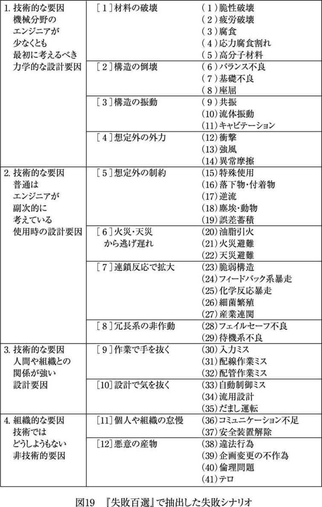
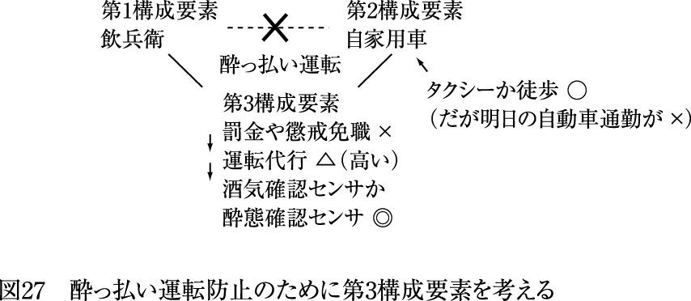
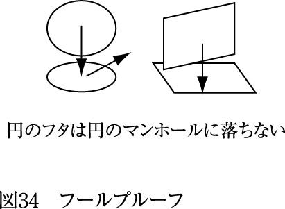
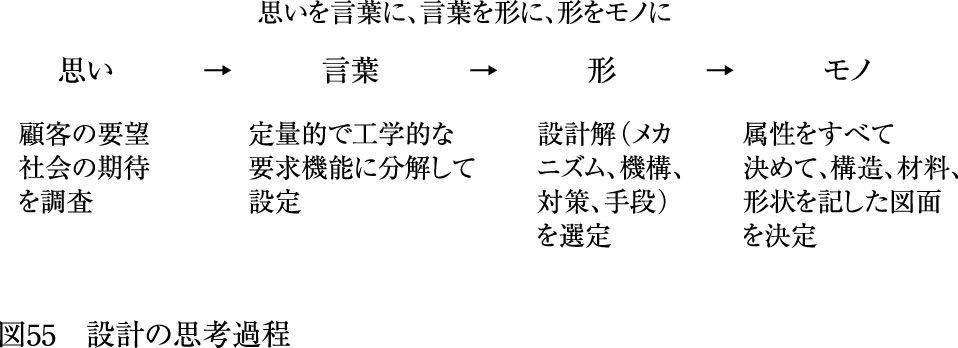
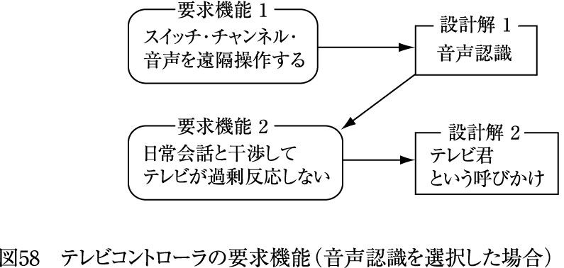
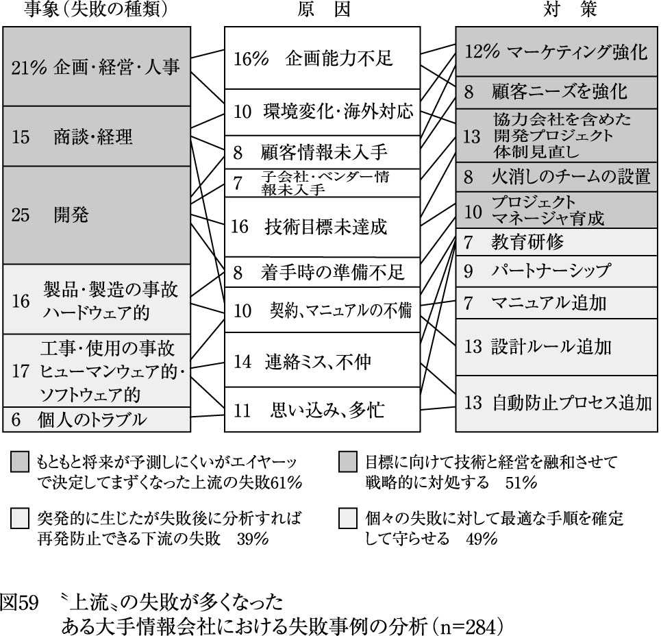

| 失敗は予測できる | |
| 中尾 政之 | |
| (2007) | |
筆者は東京大学工学部の研究者で、専門は生産技術である。もともとは企業のエンジニアとして働いていたが、一五年前に転職し、講座の教授であった畑村洋太郎先生と一緒に生産装置の設計を学生や企業の若手に教えてきた。このとき、失敗事例を用いて教育すると知識が脳にしっかりと刷り込まれ、成功事例を用いるときよりも効果的であることに気づいた。
そこで畑村先生を中心に、機械設計者が実際に経験した失敗事例や、機械設計者が知っておくべき重大事故を収集して、設計における失敗の特性を『続々・実際の設計』（畑村洋太郎編著、日刊工業新聞社、一九九六年）にまとめた。
その後、この本がきっかけとなって、評論家の立花隆さんに「東大で『失敗学』をやっている」とテレビで紹介された。これこそが「失敗学」の始まりである。畑村先生は定年退官後の二〇〇〇年に『失敗学のすすめ』（講談社）を執筆し、理系書としてはだいぶ売れて「失敗学」は流行し始めた。
その後、筆者も機械のエンジニアに関係する事故や事件を二〇〇例近く集めて分析した『失敗百選』（森北出版、二〇〇五年）を執筆した。この本では、タイタニック号の沈没やチェルノブイリ原子力発電所の爆発、アメリカの九・一一テロ事件などの歴史的事故・事件から、国内で相次いでいる企業の不祥事に至るまでを徹底的に精査してその教訓を整理していった結果、失敗を分類していくと四一のパターンに集約できることを示した。
一例を示そう。機械の事故を集めると分かることだが、機械の失敗は「腐食、摩耗、疲労」に集約できる。腐食は金属が木材のように朽ちてボロボロになること、摩耗は金属が擦り減って肉厚だったのが薄くなること、疲労はマラソン選手の疲労骨折のように、金属部分のクラック（亀裂）が少しずつ進んである時にバッサリと折れること、である。
自転車を思い浮かべて欲しい。図１のように、一万円で買った自転車が時間の経過とともに壊れてしまう原因には、まず、タイヤのゴムの腐食（紫外線照射や加水分解でボロボロになったのであろう）がある。さらに、ブレーキが摩耗してキーキーと音を立てて振動し、くわえてタイヤの表面が摩耗でツルツルになって雨の日にスリップするようになる。そして、ある日突然、スポークの金属や、ブレーキのリンク機構が疲労でポキッと折れる。筆者も以前、ハンドルにつけた金属製の買い物カゴが腐食してポロッと傾いたのには驚いた。このように、「腐食、摩耗、疲労」はよく起きる失敗である。
「歴史は繰り返す」とよくいわれる。同様に、機械の失敗の例からも分かるように「失敗も繰り返す」といえる。そして、筆者は「失敗は予測できる」と断言できる。なぜなら「人間は必ず失敗する動物だが、同じような失敗を繰り返すため、次に起こる失敗事例は過去のものと必ず類似する」からである。
第１章では、まず歴史的な大事故から日常に起こる小さな失敗に至るまで豊富な失敗例を挙げながら、失敗は予測することができ、失敗を防ぐために必要な「思考の流れ」を身につければよいことを述べる。
続く第２章では、失敗を回避する方法を考える。失敗を予測することができても、回避できなければ意味がない。ここでは、その事前対策として「第三構成要素」の重要性について触れる。しかし、失敗対策を十分に練っていても、失敗してしまうこともある。このとき、失敗してしまった組織ではどういう対策が必要となるのか、と同時に最初の事故よりももっと怖い「二重事故」を防ぐために必要なことも考える。
第３章では、現代の組織で多く起こっている「企画不良」による失敗を中心に分析しながら、失敗を成功に変える方法を考える。「企画不良」とは、企画・開発段階での失敗を指すが、これは製造現場などで起きる失敗と比べると、長期的、組織的、遅効、少数という特性を持つ。いずれも知識として扱いにくい特性である。さらに「開発の事実も撤退の事実も恥ずかしいから秘密」というプロジェクトが多く、失敗事例が集めにくいという特性も持つ。本書では、このような今まであまり顧みられなかった企画・開発時に起きる失敗にも目を向けてみたい。
＊
本書を執筆しようと強く思い始めたのは、筆者が〝失敗学の評論家〟から〝失敗学の実践者〟へと転身しようと考えたからである。〝失敗学の実践〟とは、すなわち、失敗を予測して回避するだけでなく、失敗後の不利な状況を挽回して成功へと導くことである。言い換えれば「災い転じて福となす」を自ら行うことである。
本書では、この一連の流れを繰り返して説明し、最後には読者が無意識のうちにその対策を考えてくれるようになれば幸いである。
人間、生きている限り、自分の周りに失敗はツキモノである。失敗は、多くの人が命を落とす大事故に至る失敗から、たとえば酩酊して財布を落とす失敗、自転車が壊れて約束の時間に遅刻する失敗、入社試験に落ちるような日常的な失敗まで、挙げればキリがない。しかし、人間の一生はそれほど長くはない。かりに一通りの失敗をすべて体験していたのでは、その教訓を活かす時間はもはや残っていないだろう。そこで、他人の失敗を「他山の石」として活用したい。
失敗学は実学で、さまざまなジャンルで起こる失敗による損失を確実に減らすことが目標である。したがって、事故後、厳密な原因調査によって技術的、組織的、ヒューマンエラー的な真実が明らかになった場合でも、それが再発防止のための「安全確保」という形に結びつかないのでは、何もやらないのと同じになる。どうしたら、組織構成員の全員が事故のリスクを認識し、事故防止のために事前防止対策を講じるようになるだろうか。
これから、『失敗百選』と、科学技術振興機構が公開し、国内外の有名な事故・事件を網羅した「失敗知識データベース」を主に用いながら、失敗のシナリオはいくつかのパターンに類型化でき、それによって「失敗は予測できる」ことを説明していこう。
なお「予測」とは、かなり発生確率の高い推測を指す。しかし本書では「三日以内に九五％の確率で薬品が爆発する」というような科学的な予測は取り上げていない。それよりは「何となく悪いことが起きそうな感じがする」といった程度の予想や予感を注目していると考えてほしい。この第六感でもかなり役に立つ。
「壊れ時」
二〇〇七年五月五日、大阪府吹田市のエキスポランドでジェットコースターが脱線して一名の女性が亡くなる事故が起きた。その三日後、筆者はあるテレビ局から「失敗学」の観点から事故について話してくれないかと頼まれた。収録中に繰り返し「この事故は予測できたか」と問われた。
この事故の技術的な原因は、車軸の疲労破壊である（図２）。少しややこしいが、説明するとこうなる。折れた車軸は、電車の車軸のようにクルクル回る車軸ではない。車体の右または左で、レールを上・下・横の三方向から挟む車輪、および台車枠を車体と固定するための丸棒である。丸棒の両端にはネジが切ってあり、車体に開けた穴に丸棒を通し、外側の片端では台車枠と合わせてナットで固定し、内側の片端では丸棒が車体の穴から抜けないようにナットで固定する。
事故のとき、内側のナットを締めた位置で丸棒は疲労で破断し、丸棒は台車と共に車体から抜けて脱線した。車体がカーブに沿って右や左にねじれたときに、丸棒と車体の穴とに隙間があったので丸棒が曲がり、ネジを切って内径が小さくなったところから、少しずつクラックが拡がったのである。
この事例とよく似た事故を『失敗百選』に載せた。日光の「いろは坂」のような九十九折りの山道を毎日走っていたトヨタ製の宅配便の小型トラックが、走り始めてから五年後、リアスタビライザのブラケットという部品に疲労による亀裂が入り、リコールに至った事例（二〇〇〇年）である。山道の急カーブを曲がるたびに車高の高い車が遠心力で横に倒れ、ブラケットにねじれが生じたのである。
事故を起こしたジェットコースターも立って乗るタイプで車高が高い。そのため、急カーブのたびに車体がねじれ、丸棒に「曲げ応力」（長いものを折ろうとして曲げるときに表面に生じる応力）が働く。たとえば、一周するのに一〇カ所のカーブがあり、さらに一日に一〇〇回運行し、年に週末と夏休みを合わせて一五〇日動くと、一五年で二二五万回の繰り返し荷重がかかることになる。ジェットコースターの車軸は、まさに「壊れ時」であった。
事故は防ぐことができた
疲労破壊による事故は頻繁に起きるが、機械の失敗が「腐食・摩耗・疲労」に集約できると説明したように、その原因は一五〇年前から分かっている。これは新品にはない失敗だが、メンテナンスを行ってさえいれば防ぐことは可能である。要はクラックを調べればよい。つまり、よく行われているようにクラックを超音波探傷や浸透探傷で調べ、クラックが拡がったら部品を交換すればよい。航空機や鉄道、原子力発電所などの現場で絶対に壊れては困る機械では、機器をそれこそバラバラにしてメンテナンスを行うのが通例である。
しかし、驚くべきことに、この遊園地の遊具はエレベータと同じようにビルの付属物とみなされ、建築基準法の工作物に則って検査されていた。つまり、ジェットコースターは「建築物」とみなされ、動く機械に必要なメンテナンスが不十分だったのである。建築基準法が公布された一九五〇年当時は、遊園地にこのような過激な遊具がなかったのだろう。
幼稚園の子供が見ても、ジェットコースターはビルよりも電車に似ていると感じるだろう。しかも時速七五キロで走るのだから、電車そのものである。それなのに、検査は畑違いのエレベータの検査員や一級建築士がチェックしていたのである。この事故は、金属疲労によるものであることには違いないが、人為的な制度疲労という要因も大きい。
この事故の四年前（二〇〇三年）には、ディズニーランドのスペースマウンテンでも車軸が折れる事故があった。この車軸はエキスポランドのものと同じメーカーの製品だったらしいが、この事故情報が仮に有効に使われていたらエキスポランドの事故も防げていたかもしれない。なお、山梨県にある富士急ハイランドのように自主的に超音波探傷を始め、今でも三カ月おきに検査を行っている遊園地もある。しかし、エキスポランドはそうではなかった。これでは組織の安全意識が不足していたと批判されても仕方がない。
また、ディズニーランドの事故後、国の検査基準が電車を検査するときのように変更されれば良かったのだが、それもなかった。六本木ヒルズの回転ドア事故や、シンドラー製エレベータ事故のときのように、社会的なインパクトが大きければ調査委員会ができて変更案が提示されたかもしれない。これは、五〇年の間に技術が進歩したのに法律が追いつけなかったところに問題がある。言い換えれば、監督官庁である国土交通省の不作為である。法律が現状と合わないケースが出てきても、日本では法律は容易に変更されない。
要するに、「この事故は予測できたか」という問いに対して、筆者は「予測できた」と答えることができる。疲労破壊はよくある失敗であり、その知識を応用すれば予測できる。エキスポランドを刑事事件で訴えても法律が明確でないため有罪にならないかもしれないが、被害者の遺族が民事裁判で訴えれば、事故を予測して自主的にメンテナンスを強化した他社も存在するので、エキスポランドは補償金を払うことになるだろう。
エキスポランドが事故を予測できなかった原因は、運営組織の安全意識不良や監督官庁による不作為の影響が大きい。エキスポランドの施設営業部長は事故後の記者会見で、疲労破壊というものに理解の不足があったと謝っていたが、ディズニーランドの失敗は他人事で済ませてしまったのであろうか。
このままではジェットコースターすべてが危ないと思われ、小公園の箱形ブランコや滑り台のように撤去される運命に至るかもしれない。実際、箱形ブランコは地面との隙間に足が挟まれるから、また、滑り台は上から小さい子が落ちるからという理由によって社会からその危険性を指摘され、日本中の小公園から撤去され始めている。
そうならないためにも、監督官庁の変化を見守るのではなく、業界が自主ガイドラインを作成し、その実行に向けて努力すべきである。そうしないと顧客を呼び戻すことができなくなり、規模の小さな遊園地から順に倒産に至るのではないだろうか。遊園地は楽しい場所である。そうなっては困る。
工学的な事故を防ぐためには、エンジニアやメーカーがその時代にあった自主ガイドラインを作り、法律家がそのガイドラインをそのまま法律にすることが重要である。欧米では、電灯や路面電車といった分野でもメーカーによる自主ガイドラインがそのまま法律になったと聞く。
日本はこれまで欧米の製品を輸入し、それを模倣・改造する形で販売して経済を支えてきたが、それに付随する規制までも輸入してきた。しかし、エレベータやジェットコースターのような、日本が先頭となって世界一の速度記録を更新するような製品の分野では、日本が自ら国際基準の規制を作ることを、製品開発時に並行して進めなくてはならない時代になったのではないだろうか。遊園地の遊具をいまだ建築基準法の建物の工作物として扱うような規制はどう考えてもおかしいし、それを守っていれば安全だと信じる経営者もおかしい。安全の基準は〝お上〟ではなく、自分が決めるべきものである。
「人類初」の事故はあるか
このように、ある事故は、別の場所で起きた事故と何らかの類似性がある。実際、筆者はこれまでさまざまな事故例を見ていて気づいたのだが、「この事故は人類初」というような偶発的なものはめったに起こらず、そのほとんどが類似災害である。
それから派生した一般的な法則であるが、事故は本業から分立した規模の小さい組織で起きる。そこは歴史が浅く、事故の類似性を調べたこともなく、リスクを感じたこともない。
実際、筆者の経験からいっても、事故は「本丸」ではなく「二の丸」で起きる。活動の中心になっている組織（本丸）は成果や利益が大きいだけでなく、安全対策も万全であるケースが多い。一方、活動の周辺で部分的なところを担当している組織（二の丸）は利益も少なく、安全対策に回すお金も不足し、人材や訓練も不十分である。その結果、前者よりも後者で事故が生じる。
たとえば、臨界（原子炉で原子核分裂の連鎖反応が一定の割合で継続している状態）による死亡事故は、原発ではなく周辺の燃料作成を行うＪＣＯで起こった。また、大学では、化学反応による爆発は化学科で起きるのではなく、材料や原子力の学科で起きるケースが多い。類似災害を知らないから、本来なら予測できる災害にも気づかないのである。
世の中は類似災害ばかりなのだから、当然、世間を騒がす大事故・大事件の中から、自分の身近な小失敗を予測できるネタを探すことができる。つまり、類似災害は重大事故だけに起きるのではなく、日常生活においても似たような失敗は起きる。これからその似たような失敗例を挙げてみよう。そうやって類似災害をまとめていくと、失敗はいくつかのパターンに集約できるのである。
【失敗のパターン① もらい事故】
イギリスとフランスが開発した超音速旅客機コンコルドは、図３に示すように二〇〇〇年にパリで墜落した。これをきっかけにコンコルドは航空業界から引退してしまうことになるのだが、この墜落はコンコルドの機体のどこかに不備があったから起きたのではなかった。コンコルドが離陸する直前に離陸した別の飛行機ＤＣ10が滑走路に金属片を落とし、コンコルドはそれを踏んで離陸したのである。これによってタイヤがパンクし、タイヤの破片が燃料タンクを破壊し、燃料が引火・炎上して失速・墜落したのである。この事故によって最終的に一一三名が亡くなるのだが、これはいわゆる〝もらい事故〟といえるだろう。
〝もらい事故〟は私たちの日常生活でもよく起こる。電車の座席の下に、空の飲料缶を置いてあるのを見かけることがある。電車のブレーキがかかるたびに缶が倒れて床の上をあっちこっちに転がっていく光景を見たことがある人も多いだろう。筆者は以前、新幹線の通路を歩いているときにたまたま缶を踏んだお年寄りが、ものの見事に転んだのを見たことがある。次は新聞記事でよく見る事故だが、高速道路でトラックに積んであった段ボール箱が車道に落下して、後ろを走ってきた自家用車が急ブレーキを踏んで玉突き事故が発生......というのも同類である（図４）。
首都高速道路では一日に八五件も落下物による事故寸前のヒヤリハット（大きな被害は免れたものの、重大な災害や事故になっていてもおかしくないミスやエラーのこと）が生じるそうである。二〇〇六年一二月、甲子園の脇の高速道路で、トラックに積載されていた三トンの鉄のブロックが落下し、軽自動車が潰されたのは記憶に新しい。
これらの事故は、コンコルドと同じで「落下物によるもの」が事故の原因であった。落下させた方はそれほど罪の意識は大きくないかもしれないが、それが引き金となって事故が連鎖して拡大することもあり得るのである。
【失敗のパターン② 今度も大丈夫】
次に「今度も大丈夫」と思い続けるうちに事故に至ったケースを挙げよう。一九九一年、滋賀県で信楽高原鉄道の普通列車とＪＲ西日本の臨時快速電車が正面衝突し、四二人の死者と六一四人の重軽傷者を出す大事故があった（図５）。
事故は次のようにして起きた。信楽駅の信号が赤のままになっていたにもかかわらず、業務課長が手動に切り替えて信楽鉄道の普通列車を発車させてしまった。しかし、信楽鉄道側は信号を手動で切り替えたことを対向列車に連絡しなかった。
このため、ＪＲの快速電車は本来はそこで交換するはずだった信号所を通過して単線区間に進入し、対向してくる信楽鉄道の普通列車と正面衝突したのである。以上が事故の直接の原因だが、実は、事故が起きる一一日前にも信楽鉄道側は赤信号で列車を出発させていた。このときは、駅を出たところで誤出発検知が働き、信号所の対向列車用の信号も赤になっていたため大事故には至らなかった。そこで事故当日も「今度も大丈夫」と思って出発させてしまったのだが、結果的に大事故となってしまった。
筆者は最寄りの駅まで自転車を使っているのだが、駅前の信号を無視して渡る人が多い。自分が直進する信号が赤になっても、二秒くらいは直交道路の信号も赤のままだから、そのまま突っ込んでも事故にはならないことが多い。それを繰り返すうちに「今度も大丈夫」と思うようになる。しかし先日、同じような状況で筆者の乗る自転車は右折する車とニアミスし、クラクションを鳴らされてしまった（図６）。そのときはたまたま傘をさしていたから自転車のスピードが遅く、すぐに道路を渡りきれなかったからだろう。
このように「今度も大丈夫」が確固たる自信になるとリスクを感じなくなり、事故の危険性も高くなる。
【失敗のパターン③ やった気になる】
ここまでは技術的・工学的な失敗例を中心に述べてきたが、ここからは身近な例として筆者の失敗を示そう（図７）。ある月曜日の朝に「駐輪場に停めた自転車にカギをかけなかった」という失敗をする。雨が降っていて自転車から降りて傘をたたむうちにカギをかけたつもりになっていた。自転車はそのまま一日放置していたが、幸いにも盗まれなかった。
そして水曜日の深夜に「風呂から出た後に自動温度調節器のスイッチを切るのを忘れた」という失敗をする。換気扇のスイッチを入れたらガス栓も閉めたつもりになっていた。一晩中、種火を点けていてエネルギーの無駄遣いだったが、幸いにも火災には至らなかった。
ここで気を引き締めないと、また何かやりそうだと予感する。案の定、金曜日に、その日のうちに送らなければならない郵便物なのに「切手を貼って机に置いたまま投函するのを忘れる」という失敗のダメ押しをする。三度目は偶然ではなく、必然であった。
そういえば、その週は提出しなければならない論文の締切日が迫ってきて、寝不足と考えすぎで頭がボケていたのである。
この週に立て続けに起きた失敗は「やった気になる」というものばかりであった。「行動の先回り」である。手足が最後まで実行していないのに、脳は勝手にやった気になって満足してしまっていた。これは、登山中、吹雪の中を彷徨った後に一〇メートル先に山小屋を見つけ「ああっ、これで助かった」と脳がホッとした途端、手足が動かなくなり凍死するのと似ている。この失敗を防ぐのは国鉄（現・ＪＲ）から広まった「指差点呼」がよい。人差し指をカギ穴に向けて「カギ、ヨシッ」と言って、脳だけでなく、手と口と耳を総動員させて作業を確認すると効果抜群である。ボケている週は指差点呼に限るだろう。
ところで、筆者の経験から言うと、もともと失敗を活かせない人は何度やっても活かせない。なぜなら、失敗を活かせない人というのは、月曜日のカギをかけ忘れた失敗と、水曜日のガス栓を閉め忘れた失敗が似ているとは決して思わないからである。
たしかに、事象としてはまったく違う。でも「やった気になる」という根本的な原因は同じである。無理しても、多少はこじつけでも、その根本的な原因を探すことが重要である。論理的に探すのが難しいならば、まず「似ている」と情緒的に感じることから始めるべきである。逆に似ていないと思った時点で脳の動きが停止して、そこで得られたであろう知識も「猫に小判」になる。
【失敗のパターン④ 二度あることは三度ある】
次も筆者がよくやる失敗である（図８）。以前、忘年会の後、ほろ酔い加減で夜の一一時頃の電車に乗ったら、前の席がたまたま空いた。シメシメと思って座った途端、気持ちの良い眠りに入る。ところが起きてみると、降りるべき駅を二駅ほど行きすぎた駅であり、すでに戻る方向の終電車が出た後だった。嫁さんは寝てしまって電話にも出てくれない。さらに、タクシー代も残さず飲んでしまったので、寒空を歩く悲劇が始まる。
そして、新年会。また前の席が空いた。座るべきかどうか......。忘年会では日本酒をだいぶ飲んだが、今日はビールを少し飲んだだけなので酔いの状況が違う。さらに、今日はまだ一万円残っていて、あのときと財布の状況も違う。自宅では息子が試験勉強で起きていて電話に出てくれるはずだから、家庭の状況も違う。座ろう......。しかし、翌朝になってみれば、一駅を乗り過ごしたことに気づき、タクシーもないため駅から三〇分歩くという、似たような失敗を繰り返したことに気づく。醒めてからそのときの状況をよく考えてみれば、電車の中の状況は忘年会と限りなく似ている状況であった。
そしてある晩にも、またまた三駅前で座って二駅乗り過ごし、慌てて降りたら網棚に手提げ袋を置き忘れるという失敗をする。深夜に見たかった日本代表のサッカーの試合があり、前の晩から寝ずにずっと起きていた。したがって、ほんの少しのビールで寝過ごしたのである。「二度あることは三度ある」。酔って座れば乗り過ごし、は必然なのであった。
一般的に、今の状況が過去の状況とどこまで似ていて、どこからが違うかが分からない。それが類似性に気づくときの最大の障害である。しかし、現在と過去はまったく別のものと思い込むのは危ない。神様が重要な失敗回避のヒントをくれたにもかかわらず、ヒントの類似性を見過ごしていると、筆者の例のように将来の失敗は予測できなくなる。まずは「似ている」と強く思いこむことである。そして冷静に将来の失敗を予測すると、似たような失敗を防ぐことができる。
失敗はケースバイケースか？
これまでに述べた「もらい事故」「今度も大丈夫」「やった気になる」「二度あることは三度ある」のような「失敗のシナリオ」は、性別、日時、場所、対象、背景にかかわらず共通して起きる。つまり、失敗はいつ誰にでも降りかかってくるものであるといえる。
失敗学の奥義は「人のふり見て我がふり直せ」である。「人のふり」と「我がふり」は決して同じではない。しかし「似ている」ということに気づいて、その共通した類似性を「失敗のシナリオ」として短いフレーズに集約して頭の片隅にしまっておくと、これから起こるであろう失敗に対処することができる。
たとえば「吸い込み口の恐怖」。循環式のプールの排水管で死亡した学童は昭和四〇年代から六〇名もいた。筆者は、『失敗百選』で女児がジェットバスの排水口で髪の毛を吸引されて溺死（二〇〇〇年）した事故を載せたとき、同じような事故の再発を恐れていた。実際、後述する埼玉県ふじみ野市の流れるプールで起きた女児の事故死（二〇〇六年）は、排水口への吸引が原因という、これとまったく同じシナリオの事故だった。また、現代のビルは気密性が高く、内部は空調で陽圧に保持される。そこでわずかにドアを開くとヒューヒューと音が鳴り、服が張り付き、子供は狭まれて動けなくなる。これも吸い込み口の恐怖である。
そうはいっても「事故はケースバイケースで偶発的に起きるから、事故ごとに対応できる能力のほうが大事でしょう」と反論されることがある。
しかし、重大事故のほとんどは類似災害であり、「失敗のシナリオ」としてグループ化すると決して偶然ではないことが分かる。まして、日常生活で起きる失敗のほぼすべては反復事象である。それでも失敗してしまうのは、少なくとも自分だけにはその失敗が降りかからないだろうと、ワケもなく信じているからである。失敗を予測できるのであれば、再発防止策を練っておいても損はない。回避する能力は誰でも持っているのである。
まず気づく
「人のふり見て我がふり直せ」の「人のふり」と「我がふり」は同じではないが、似ていることに気づくところから失敗学は始まる。次の例は「似ていることに気づく」ことはどういうものかを示した好例である。
筆者はある工場を見学していて感心したことがあった。バイクの組立工場を見学したとき、エンジンの試運転場から延びているダクト（排気を流す送風管）の側面に小さな扉がついていた。その理由を工場長に聞いてみると、彼は新聞記事で自動車の塗装工場で起きたダクト火災の記事を読み、「ダクト内で可燃物の堆積→定期清掃の手抜き→静電気の放電→爆発・炎上」という、工場ではいつも起きるシナリオを想定したというのである。
そして、自社の試運転場のダクトも「似ている」と感じて直ちに「作業員をダクト内に潜らせて煤を清掃させる」という対策を命令したのである。そこでダクトに扉をつけて作業員に潜らせたら、煤がシャベルですくえるほど堆積していたそうである。もし、新聞記事を読んだとき「塗装工場と組立工場とでは工程がまったく違う」といって考えを止めてしまっていたら、この工場でも火災事故が起きていたかもしれない。
連想ゲーム
このように「似ていることに気づく」ことはそう難しいことではない。そして、何かの事象と自分の周りにあることが「似ている」と感じたら、そこから連想ゲームのように思考を巡らせてみると次から次へとアイデアが湧いてくるようになる。
一例を示そう（図９）。たとえば「廊下にモノを置くな」が有効なリスク減少対策ならば、「階段にモノを置くな」も有効なはずである。両方とも火災が起きた時には避難通路になるわけだから当然である。特に階段は、転倒だけでなく転落が発生するため、高齢者の場合すぐに重傷に至るというケースが多い。
筆者の祖母は階段の片側にもらい物をズラッと並べていた。二階に持っていくのが面倒だから、ちょうど手頃な物置として使用していたのかもしれない。筆者も、そのうち二階に持っていこうと思うモノを階段の脇に置くことが多い。しかし、これが原因で誰かが階段を下りてきたとき、つまずいたら大事に至る。
さらに「階段にモノを置くな」が転落事故防止に有効であるならば、「下りエスカレータで走るな」も有効なはずである。六本木ヒルズの回転ドアやシンドラー製のエレベータの事故のように、それが原因となって死亡事故が起きると世間では大騒ぎになるが、日本ではまだエスカレータでの死亡事故が発生していないのでマスコミは騒いでいない。
しかし、上野駅にある新幹線のホームへの下りエスカレータのように長いものだと、誰かが荷物を担いだまま急いで駆け下りた場合、脇で立ち止まっている子供を引っかけて自分だけでなくその子供も転落させるかもしれない。韓国では死亡事故が起きたそうである。
東京都内だけで、エスカレータによる事故は一年間に一万三一七件、その九六％が転倒・転落で、そのうちの五件が重篤・重傷というデータがある。いずれエスカレータでも大事故が起こり、エレベータやジェットコースターの事故のときのように、建築基準法が甘いという批判が出てくるのであろう。
また、「階段にモノを置くな」とただ否定的に命令してもよいが、「階段に手すりをつけろ」と肯定的に命令すると、具体的な指示であるだけに効果的である。
筆者は以前、製鉄所で補修中の高炉の中を見せてもらったことがあるが、高炉に下りるための狭い入り口に仮設階段があった。若いつもりで両手で手すりを持たずに入ろうとして頭をかがめた瞬間、ヘルメットが上の壁にゴツンと当たり、前につんのめった。すぐに手すりを握ったからよかったものの、手すりがなかったら転落であった。そういえば、以前、脳梗塞で歩行が少し難しい父親を温泉に入れたとき、手すりがないと、ほんの二段の階段でも重い体が傾いて介護者が支えていても転倒しそうなことを思い出した。
転倒・転落は恐ろしい。家庭内事故で亡くなっている人の数は、交通事故で亡くなった人の数とほぼ同じ、約一万人と非常に多い。そのほとんどが幼児と高齢者である。そして、その内訳を見ると、「飲み込めずに窒息死」「風呂場で溺死」「階段で転落死」が三分の一ずつぐらいで生じている。我々はこれらを防ぐために、交通事故を減らす法律改正やガードレール設置を実行するのと同じくらいの膨大なエネルギーを、家庭内事故にも注ぐべきである。風呂や階段を手すりだらけにするだけでも、事故は半減するに違いない。もっとも、階段のないエレベータつきのマンションに住み、風呂に入るのではなくシャワーを浴びる文化が一般的になると、事故は激減するに違いないが。
このように、一連の失敗再発防止を考えるための思考の働きが「失敗学の実践」である。
失敗防止のための思考過程
次に、一つの事故の分析から知識が芋づるのように引き出されるという思考の流れを説明していこう。なお、これから挙げる事例は少々専門的な内容も含まれるが、「連想する」ということがどういうものであるかに主眼を置いて読み進めていただきたい。
【連想① パロマの湯沸かし器事故から連想する】
二〇〇六年七月頃に、パロマ製湯沸かし器による一酸化炭素中毒事故が報道された。
図10に示すように、安全装置は本来、排気ファンが停止したらガスが遮断されるように設計されていた。しかし、新聞記事によると、事故器は安全装置の端子にジャンパー線（離れた電気回路間を一時的につなぐ電線のこと）を渡して、排気ファンが止まるとオフになるべき端子が常時オンになるように不正改造されていた。過去二〇年間に起きた二七件の事故のうち、一五件にそれが発見されたという。残り一二件は安全装置の配線のハンダの割れ（ジェットコースター事故で前述した疲労破壊が原因のことが多い）だと書かれていた。
このような不良安全装置は本来交換されなければならないはずだが、入庫を待っていると風呂にも入れないという顧客の要望で末端の販売業者が不正改造したらしい。電気回路図さえ入手できれば、高校生でも改造できる。
このニュースを見て筆者が思い出したのが、図11に示すように、一九九七年、ＪＲ東日本中央線の大月駅で起きた列車衝突事故である。これは分割された回送電車の運転士がＡＴＳ（自動列車停止装置）を切って進行し、特急電車に側突したというものである。ＡＴＳという安全装置を故意に切れば衝突するのも当然である。しかしマニュアルでは、入替作業時にＡＴＳを切ることが許されていた。これでは安全装置を切った運転士を責めるだけでは問題は解決しない。その後、ＪＲ東日本は大月駅だけでなく、すべての駅で分割・回送・入替の作業自体を廃止する。

この二つの事故に共通なシナリオは「安全装置の解除」である。いくら効率的な対策があっても、オペレータによって簡単に無効にされては元も子もない。
これと共通する事例が筆者の勤務する大学でもあった。それは、レーザによる網膜剥離事故である。大月駅での事故のように、実験中、用意していた遮光メガネという「安全装置」をわざわざ外し、非定常の光軸合わせの作業を行っているときにそれは起きた。レンズを動かしているときに何かがレーザ光を遮蔽して散乱光が目に入ったのであろう。
この事故がきっかけとなり、工学部に二六〇台は存在するという、レベル３ｂ（出力五ｍＷ以上、レーザポインタよりも少し強い光）とレベル４（〇・五Ｗ以上、非常に危険）のレーザ装置を調査し、光軸合わせのときでも、完全遮光でなく一％は透過してレーザ光がうっすら見える保護メガネを着用するように指導した。
その後、自分の学生の実験装置を見学してみた。共同研究先に仮設したレーザ加工機を見たのだが、二五〇Ｗと高出力なのにカバーがない。光軸調整作業に邪魔だから学生が外してしまったのである（図12）。カバーを外すと電源が切れるように、インターロック（自動停止回路）がついていたが、もちろんそれも故意に解除させた。
至急、カバーを再びかぶせ、レーザ光を透過させない緑色のプラスチックがついているゴーグル（メガネでは脇から散乱光が入るかもしれない）を注文した。真空容器内にレーザ光を導入する本番の生産装置がその仮設装置の隣に設置されていたが、それには安全性を考えてレーザ光路を金属パイプ内に通してあった。学生が使っていた装置は大気中で実験するための仮設装置だったが、「仮設」なので手を抜いたらしい。土木工事では仮設の足組みがときどき崩壊するが、これと同じように仮設だから手を抜くのである。
このような「安全装置の解除」の事例は『失敗百選』にも載せている。たとえば、一九九二年、関東鉄道の運転士が、かかったまま動かないブレーキを強制的に解除した後、戻すのを忘れて取手駅の駅ビルに衝突した事故や、一九九九年、東海村のＪＣＯ社で、臨界にならないように細長く形状設計された装置を使用すべきなのに、そうなっていない沈殿槽を用いて臨界が発生した事故である。
エンジニアが絶対的に安全な装置を設計しても、オペレータが故意にそれを外せば事故が起きても不思議はない。こうした事故を防ぐためには、安全装置が外せないように設計するか、外さないとできない付帯作業を廃止するか、というような根本的な対策が必要である。
なお、パロマの湯沸かし器と同じように一酸化炭素中毒を起こした事故として、松下電器産業製の石油ファンヒータのリコール（二〇〇五年）とリンナイの湯沸かし器の事故発覚（二〇〇七年）がある。
しかし、失敗のシナリオは三社とも異なる。松下の製品は、石油を燃やす前の空気の取入口のゴムパイプが切れて空気不足による不完全燃焼を起こしたことで、一酸化炭素が取入口の方に「逆流」して漏れたのである。またリンナイの製品は、燃焼温度を測定すべき熱電対が、小径の通気口が煤で覆われたために低温であると判断し、その結果、一酸化炭素が発生したのである。熱電対で得た温度信号を、吸気量やガス流量に「フィードバック制御」していたのかもしれないが、それが暴走してしまったらしい。つまり、二社の事故は後述する「逆流」と「フィードバック系暴走」のシナリオに含まれる事故事例である。
【連想② シンドラー製エレベータ事故から連想する】
二〇〇六年に起きたシンドラー製のエレベータ事故について、先日、畑村先生と話していて気がついたことがある。新聞では同社のメンテナンスの不良を責めていたが、これはエレベータそのものの設計不良が原因で起きた事故であった。
まず、事故の経緯をみよう。この事故は、東京都港区にある二三階建ての住宅「シティハイツ竹芝」に設置されたエレベータで、自転車に乗ったまま乗降中の高校生が、扉が開いたまま突然上昇したカゴと建物の天井に挟まれ死亡したものである。
通常、エレベータは落下すると危険であるという認識から、落下方向には四つの安全機構がついている。モータを止め、ブレーキで止め、カゴをくさびで止め、落下衝撃をダンパー（クッション）で止めるという四つである。しかし、図13に示すように、上昇方向にはその二つめまでしかない。この事故は、おそらく電気回路の故障かブレーキパッドの摩耗でブレーキが働かず、また、カウンターウェイト（つりあい用のおもり）がカゴ＋定員の半分（一四人分）の重さだったので、二人しか乗っていないカゴは上昇し、開いたドアとの間で高校生が挟まれたのだろう。
つまり、設計者は上昇方向には安全の配慮を払わなかったのである。もし上昇方向の暴走防止のために設置されたくさびのブレーキで上昇を止められたら、何の事故も起きなかったのであろう。なお、カウンターウェイトがカゴの重さと釣り合っていれば、カゴは人が乗っていれば下降するしかなく、くさびのブレーキが必ず効くので本質安全（物質が機械的に安全方向にしか働かないこと）であった。
しかし、定員の半分だけの重さを加えて効率を高めるのは国産エレベータの場合でも同様な設計であったらしい。仮に、カウンターウェイトをカゴと釣り合わせよという法律を作った場合、満員の状態ではさし引き定員分の重さを上下動させることになり、またモータトルクが同じだと加速度がこれまでよりずっと小さくなるため、到着時間が遅くなってエレベータ前に待ち行列ができる。全国七〇万台のエレベータで待つことの経済的損失を考えると、多少のリスクには目をつぶろうというのが現状のようである。
逆方向に頭が働かなかった例として、マンホールのフタが外れた事故を思い出した。
図14に示すように、一九八五年、東京都に豪雨が降り、下水道に雨水が大量に流れ込んだことによってそれが逆流し、マンホールのフタを吹き飛ばす事故があった。そして、冠水道路を自転車で走行中の男性が、その下水道の穴に落ちて亡くなってしまった。
下水道の設計者は、鋳鉄製のフタは重いから飛ばない、水は道路からマンホールを通過して下水道へと流れる、と固く信じていたわけだが、実際は逆流してフタが外れることもあり得ることが知られていた。このため、浮上防止型というロックキーつきのマンホールも設計されている。しかし、取り替えには費用がかかるため、東京都にある三四万個のマンホールのうち、ロックキーつきのマンホールはまだ二〇〇〇個しか設置されていない。
二〇〇六年八月、図15に示すように、埼玉県ふじみ野市の流れるプールで、排水口に女児が吸い込まれて死亡する事故が生じた。これも管理者がプールからポンプへの戻りの流れを考えていないから起きた事故である。ポンプからプールへの水の流れは、プールの水を川のように流すために重要な流れである。流出口には、保護柵を兼ねて層流（渦のような乱れを起こさずにまっすぐ流れること）を作るために多数の穴を開けた板まで設置され、また保護柵もプールに倒れ込まないようにボルトでしっかり固定されていた。
一方、戻り配管の方は保護柵を外すと直径三〇センチの管がむきだしになっている状態だった。しかも、戻り配管の保護柵は吸引されてプールの方に倒れ込まないので、固定も針金だけと適当になる。
設計者は、危険だと考えられている方向や通常の動きの方向に対して安全装置をよく考える。しかし、その逆方向の設計となると、危険を見過ごして安全装置を欠落させることが多いのである。
これらの失敗も『失敗百選』では「逆流」というシナリオでまとめてある。
松下電器産業製のファンヒータは二〇〇五年にリコールされて必死に回収したが、これも想定外の逆流が問題であった。前述したように、吸気側のエアホースに亀裂が入り、吸気空気量が減少して不完全燃焼が生じ、一酸化炭素が吸気側に逆流して亀裂から漏れて中毒事故が生じたのである。吸気側のホースは燃える前のきれいな空気が流れるだけだと設計者は思い込み、亀裂が入っても安全だと気が緩んだのであろうか。
【連想③ 工学部で起きた火事から連想する】
二〇〇六年六月、筆者の勤務する工学部で火事があった。実験に使っていた装置が燃えたのだが、直接の原因は「風呂の空焚き」と同じだった。図16に示すように、この装置は投げ込みヒーターでプラスチック製バケツ内の水を温める実験装置だったのだが、水が蒸発して水温センサは水面上に露出していた。フィードバック回路で制御されていたヒーターは加熱を続けたが、水温センサは空気の温度を測っているので、表示温度が上昇しない。空気の熱伝導率は水の二〇分の一だから、センサ・ヒーター間の温度差は二〇倍になり、ヒーターは加熱方向へ暴走する。そのうちにプラスチック製バケツが溶けて炭化して燃えた。
設計した学生は、水温をフィードバック制御しているから、ヒーターが暴走することはなく安全だと思い込んでいた。今やどこの家の風呂でも水位センサがついている。学生は風呂を思い出せばもっと安全に設計できたはずである。投げ込みヒーターの制御装置の説明書にも「水位センサをつけよ」「プラスチック製水槽は使うな」と明記されていた。メーカーも風呂の空焚きを経験したのであろう。これではメーカーを訴えることもできない。
昨今の学生はフィードバック制御を多用し、それを設置すると安全になったと安心し、思考停止してしまう。しかし、このように温度センサが誤表示したらどうなるのであろうか。
その火事を見て、筆者の研究室で起きたヒヤリハットを思い出した。図17のエッチング装置の真空容器に窒素を導入して、真空から大気圧に戻すときの事故である。真空計は真空を測るセンサなので、大気圧（一気圧）に近づくと測定限界を超えてしまい、二四〇トール（約〇・三気圧）で表示が止まってしまう。ところが、学生はなぜ圧力が上昇しないのかと疑問を持ちながらも、窒素ボンベの栓を回してもっと加圧し、その結果、容器内の圧力は真空から大気圧を超えて三気圧にも達してしまった。最後には扉を締めていたボルトが引きちぎれて高速で吹っ飛んだ。真空計のセンサが誤表示していたのである。
これと同様にセンサの問題で、工学部の防火扉が突然閉まる事故が三件続いたことがあった。最初の事故は、同時刻に行われた電気工事が煙探知センサに電磁波的に影響を及ぼして誤操作したらしい。扉のラッチが外れて、バッタンと重量の扉が閉まった。酔っぱらって学生が廊下に寝ていたら死ぬこともあり得る（日本では毎年ひとりは死んでいる）。
二番目の事故は、雨漏りによって煙探知センサが電気的に短絡して誤警報が鳴り響き、扉が閉まった。最後の事故は、一九七〇年代の建物だったが、バイメタル式（二枚の金属が加熱されると反って接点が開く）の火炎熱センサが破断して壊れ、シャッタがスルスルと落下した。
一九九八年には埼玉県浦和市（現・さいたま市浦和区）の小学校で、図18に示すように、煙探知センサが高湿度によって誤動作してシャッタが突然降りる事故があった。これによってシャッタの下をくぐりぬけようとした小学生が首を挟まれて亡くなっている。煙センサが誤表示すると人身事故だって生じる。いつものように火災警報の誤報だと軽視していると死亡に至るケースもある。
火災報知器は火災の熱で報知器内の空気が膨張し、ダイヤフラムを変形させてスイッチオンになるという構造の製品が多い。ある冬のことだが、マイナス一九六度の液体窒素を吹きつけると、火災報知器が作動するという不可解な事故が起きた。液体窒素で冷やされた空気がダイヤフラム内で結露して電気回路が短絡し、スイッチオンしたらしい。センサは完全無欠ではない。壊れたらどうなるか、一度は考えた方がよい。
『失敗百選』には「フィードバック系暴走」というシナリオで類似災害をまとめてある。たとえば、一九八六年、チェルノブイリ原子力発電所で電力発生実験を行っている際、原子炉内で出力を減らすために制御棒を押し込んだら、制御棒の回りに蒸気気泡が発生して、出力は減少せずに逆に増加して暴走爆発した事故や、一九九四年、東燃川崎工場内で調整弁の開度計のメンテナンスを行っている際、信号の正負を間違えて、弁の開度を増やしても逆に開度表示は減らずに暴走した事故、などを挙げている。
失敗は何種類あるのか
ここまで述べてきたように、失敗のシナリオは「安全装置の解除」「逆流」「フィードバック系暴走」などに集約して説明することができるが、このような失敗のシナリオはいくつあるのだろうか。『失敗百選』では、二〇〇個程度の大事故から一〇〇個の失敗シナリオを抽出するのが当初の目的だったが、実際には四一個に集約できた。そのシナリオを図19に示そう。

また、多くの組織で失敗学の研修会を開き、失敗事例を集めて共通シナリオを抽出しているが、そのシナリオは多くても二〇個ぐらいにまとめることができる。あまり細かく分析しすぎると、全部の事例がケースバイケースに見えてしまい、似ているシナリオを見つけるのが大変になり、将来の失敗が予想できなくなってしまう。それぞれの組織で起きる失敗シナリオは一〇～二〇個程度だと信じたほうがよい。
たとえば、大学生の失敗シナリオを考えてみよう。図20に示す。
まず工学部に特有な実験事故からみてみよう。学生の安全教育では、回転機械の運転方法、重量物の搬送方法、高所作業の安全確保、化学薬品の扱い方、不要試薬の廃棄方法などを延々と講義する。これまでは、安全教育の講師が優秀なのか、学生が賢いのか、休業災害（被害者が業務に就けずに休業する災害）は滅多に起きなかった。たとえば筆者が大学に転職してから一四年間、機械系三専攻において職員の休業災害は一件はあったが、それ以外は「アカチン災害」（擦り傷などの軽傷災害）程度であった。
ところが、休業災害が頻繁に起きているシナリオがある。それは交通事故である。たとえば、深夜、遅くまで実験してから自宅に帰るときにバイクで転倒する。筆者の学科でも一四年間で三件もあった。他の学部を合わせると、かなりの数にのぼるだろう。また、泥酔も危険なシナリオである。ある年の四月に新人歓迎会でテキーラを一気飲みして気を失う学生が出て救急車を呼んだ。また、五月の大学祭でも泥酔で意識が薄れ、救急車が出動することがあった。それ以外にも泥酔との「合わせ技一本」で危険な事故が起きる。たとえば、酔っぱらって転んで顔に傷をつけるとか、自転車の酔っぱらい運転で電信柱に衝突するとか、ガラスがあることに気づかずにドアに激突する、などである。一四年間に六件ぐらいだろうか。
そして死亡につながる最大のシナリオが、気ウツである。一四年間で七件あった。工学部ではメンタルケアも研究指導教員がやっているつもりだけれど、避けられないケースもある。
つまり、若人は実験では死なない。バイクか酒かウツで身を滅ぼす。この分析の結果、学生の失敗は大別すると三種類であることが分かる。そうすると、バイク・酒・ウツに対する対策があまりにお粗末なのが問題であることが分かる。これらは個人の問題であると教員は注意喚起するだけであるが、大事故に至る前に回避できないだろうか。
こんな調子で失敗を分析すると、無限に失敗の種類が存在するわけではないことに気づく。
「失敗知識データベース」
さて、ここまでは主に『失敗百選』に載せた事故や失敗のシナリオを例として挙げてきたが、ここからは、先にも少し触れた、科学技術振興機構が公開している「失敗知識データベース」（編集注：現在の公開URLhttp://www.sozogaku.com/fkd/）を使う。これは科学技術分野の事故や失敗の事例を分析し、そこから得られる教訓とともにデータベース化したものである。ここでは、失敗シナリオがデータごとに、図書館の分類システムのように作成されている。たとえば、後述する有名な常磐線三河島駅で起きた列車衝突事故（一九六二年）では、【原因：誤判断、誤認知】【行動：非定常行為、非常時行為】【結果：身体的被害、死亡】といったように列記されている。
ここからは、「失敗知識データベース」も参考にしながら、失敗の原因や組織のシナリオについてみていくことにしよう。
なお、「失敗知識データベース」では、筆者は機械分野の責任者として事故や事件を集めた。機械分野の他にも、化学、材料、土木の分野で失敗事例を収集している。このため、交通、原子力、製品リコール、国家計画などに関する国内外の有名な事故・事件は網羅してある。しかし、逆に言えば、その分野だけの失敗を集めたので、その他、たとえば医療過誤、環境問題、企業の不祥事、個人の家庭内事故、交通事故、殺人事件、などはそもそもデータベースに採録されていない。この未採録はもともとエンジニア向けのデータベースを作るのが目標だったから仕方がない。
三つのシナリオ
さて、本項では「失敗知識データベース」の「原因」の項目に着目してみよう。一一三六件の失敗事例データを分類すると、失敗の原因は、①人間的な原因（いわゆるヒューマンエラー）、②エンジニア個人の設計能力不良、③エンジニア個人が所属する組織の問題、という三つに大別することができる。つまり、（事故の原因）＝（技術的②の原因）＋（非技術的な人間的①＋組織的③の原因）が成り立つ。
なお、左記の数字は検索された件数と全体の割合（％）である。件数の総計はデータ数の約二倍になっているが、それは編集者が失敗シナリオを書くとき、一件のデータに平均して二・一件の原因をあげていることを示している。ここでは三つの原因からさらに一〇のシナリオに分けたが、下記に*印をつけた六個は特に多かったものを示している。
①人間的な原因（いわゆるヒューマンエラー） 四六七件（四一％）
１ 不注意 三七六件（三三％）*
２ 手順の不遵守 九一件 （八％）
②エンジニア個人の設計能力不良 一〇六四件（九四％）
３ 無 知 三〇一件（二六％）*
４ 誤判断 一八二件（一六％）*
５ 調査・検討の不足 四四三件（三九％）*
６ 環境変化の対応不良 九一件（八％）
７ 未 知 四七件 （四％）
③エンジニア個人が所属する組織の問題 八二五件（七三％）
８ 企画不良 五八件（五％）
９ 価値観不良 四二一件（三七％）*
10 組織運営不良 三四六件（三〇％）*
未知の事故はほとんど起きない
前述した「人類初という偶発的な事故はめったに起きない」「人間は同じような失敗を繰り返す」という経験則は、「７ 未知」がたった四％しかないことからも理解できる。では「未知」に分類される事故とは何であろうか。それは、異常気象や異常化学反応によって起きる事故である。
たとえば、青函連絡船洞爺丸の沈没事故（一九五四年）は、時速一一〇キロという異常に高速の台風が函館湾で突如、減速・停滞し、最大瞬間風速で秒速五七メートルの大暴風が吹き荒れたことが原因であった。そのときに同時に運航していた四隻も、洞爺丸と同様に湾内の投錨仮泊法を採用したが最終的に沈没した。当時、船長はリーダーというよりも神様のように扱われ、運航可否の判断を任されていた。さらに、洞爺丸の船長は「天気図」というあだ名で呼ばれるのを自他共に許すほど天気予測能力があった。しかし、沈没六時間前の無風状態を台風の目と判断して乗客を乗船させた結果、事故の損失を大きくした。
この「未知による事故は少ない」ことを逆に言えば、「人類の誰かがその事故が起きることを知っていたのに、その過去の事例を調べなかったから起きた事故が多い」ことを示している。実際、エンジニアの事前検討不足を意味する「５ 調査・検討の不足」が三九％と高い比率に計上されている。
さらに、エンジニアが失敗が起きそうなことに気づいて上司に報告したのに、それを握りつぶした経営陣が怠慢だったという事例も多く起きている。その意味で「10 組織運営不良」も三〇％と高い比率で計上されている。
このように、事前に過去の失敗知識を調査して、再発防止策を練っておけば事故が防げそうだったのに、実はやっていなかった、という事例が大半を占めることが理解できよう。
技術的な原因と非技術的な原因
また「②エンジニア個人の設計能力不良」が九四％と、ほぼすべての事例に計上されていることがわかる。これは「失敗知識データベース」自体がエンジニア向けの資料であり、工学的な事故を集めているから当然ではあるが、同時に「①人間的な原因（いわゆるヒューマンエラー）」が四一％、「③エンジニア個人が所属する組織の問題」が七三％と、これを合わせると一一四％になり「②エンジニア個人の設計能力不良」とほぼ同数になることも分かる。前述したように、（事故の原因）＝（技術的②の原因）＋（非技術的な人間的①＋組織的③の原因）が成立する。
技術的な原因はエンジニアの責任であり、設計に当たって知るべきだった技術内容を「３ 無知（二六％）」「４ 誤判断（一六％）」「５ 調査・検討の不足（三九％）」で見過ごしてしまったことから起きる。図16に示した水を温める実験装置でのボヤはその好例である。「風呂の空焚き」は周知のリスクであり、知らなかったではすまされない。
このように、技術で失敗した事故は当然、エンジニアの責任になる。しかしそうはいっても、エンジニアだけが悪いと言えないので、「②エンジニア個人の設計能力不良」以外の原因も選びたくなる。
エンジニア以外の原因のうちの三分の一は、前述のように、エンジニアは過去の技術的失敗を薄々知っていたのに、上司が経営的な理由で握り潰したかもしれないという事例の原因である。
図５に示した信楽高原鉄道の正面衝突事故がそのひとつである。事故は業務課長が列車を無理に出発させたことが原因だが、実は滋賀県甲賀市で行われていた「世界陶芸博覧会」を成功させるという経営的プレッシャーがその背景にあったらしい。この博覧会へは信楽鉄道を使って行くことができたが、事故当日は信楽鉄道始まって以来の大入り満員で、信号トラブルの影響で運休したら乗客をバスに取られるかもしれないという心理的プレッシャーも大きかったのだろう。こうした例は「10 組織運営不良（三〇％）」に含まれている。
他の例も示そう。二〇〇七年六月、駅前留学で知られるＮＯＶＡとグッドウィル・グループのグループ会社のひとつで、福祉介護会社であるコムスンが監督官庁から処分を受けたことは記憶に新しい。両社は成長を続けることで株価を上げて投資マネーを集めたが、業績が悪くなり始めると不正営業を強引に進めて不祥事に至った。実業の儲けの何百倍と多額の時価総額が虚業に計上されると、集められた投資マネーをどこかに再投資できて、さらに儲けを生むことができる。いわば、ただ座っていてもお金がお金を生む状態である。
しかし、正のフィードバックが働いているうちは絶好調であるが、再投資先や景気がちょっとでも悪化すると、負債から負の循環が始まり、あっという間に損失が膨らむ。社長は、にっちもさっちもいかない状況になって不正営業を指示したのだろうが、この両社の失敗も「10 組織運営不良」に含まれる。これとよく似ている例に、二〇〇一年に起きたアメリカ・エンロン社の倒産がある。エンロンはエネルギーの先物取引やＩＴビジネスを行う全米でも有数の大企業だったが、カリフォルニア電力危機後に資金がうまく回らなくなり、社長が指示した不正経理が発覚して破綻に至った。
エンジニアだけが悪いと言えない原因のうち、もう一つの三分の一は、エンジニアがシステム自体の安全を確保したはずなのに、オペレータが故意にその安全を解除・無視していたという事故である。これは「①人間的な原因（いわゆるヒューマンエラー）」であり、四一％と高い比率を示している。
これらの中には、完全に悪意を持って安全装置を解除した例もあるが、それよりはオペレータが混乱するような操作方法をシステムが指定していた事例が多い。図11のＪＲ東日本中央線の大月駅で特急電車と回送電車が衝突した事故がその好例である。この事故ではＡＴＳを外したことが問題だが、外さないと入替作業できなかったことも問題である。
「失敗知識データベース」の中には前述したように、自動車の交通事故や階段の家庭内事故のように、ボーッと考えごとをしていた最中に衝突したり、転落した事故は載せていない。それでも四一％と高い数字になるのは、些細な失敗が連鎖反応でシステムの重大事故に至ることに気づかずに、オペレータが浅はかな判断で無謀な運転をした、という事故が多いことを示している。
最後の三分の一は、オペレータ個人が悪いというよりも、メンテナンスを軽視したり、生産効率やコストダウンを優先した組織が悪い、という原因である。もちろん、メンテナンスを軽視した会社組織を、エンジニアは命を賭けても諫めるべきだったのであるが、「しょせん、会社の従業員だから出る杭は打たれてエンジニアはクビになるだけである」とあきらめて看過していたら、予想外の大事故につながったというものである。
有名な例はスペースシャトル・チャレンジャー号の爆発（一九八六年）である。エンジニアたちもＮＡＳＡも、低温だとガスを封止すべきゴムのリングが効かないこともあると知っていたのに、打ち上げを誰も止められなかった。そのような事例が多いので「③エンジニア個人が所属する組織の問題」の中の「９ 価値観不良」が三七％と高くなった。
この「価値観」とは、効率や利益に価値観を置いたという意味であり、それらを重視したために安全意識が希薄になったというものでもある。経営者個人が無理やりに安全対策をやめさせれば「10 組織運営不良 （三〇％）」に含まれるが、「９ 価値観不良」は、上司の誰とは名指しできないが、会社に安全を軽視する雰囲気があったという原因である。
【組織の失敗シナリオ① コミュ二ケーション不足】
これは典型的な組織の失敗であり、構成員が二人以上になると起きる。
筆者は学生が参加する安全講習で「誰かがやるだろうは誰もやらないのと同じ」という教訓を繰り返し話しているが、これはその教訓を無視した失敗である。実際、次のシフトや後の工程のオペレータに一言でもいいからリスクを伝達しておけば損失が防げたという事故は多い。そして、それ以上に現在最大の問題になっているのが、正社員と非正社員で起きる間のコミュニケーション不足である。
現在、多くの企業では人件費を抑えるため、マニュアル通りに作業できる工程ではオペレータとして非正社員を雇っている。非正社員は明日、そのラインから外されるかもしれない。そうした状況に置かれた人間が、過去の事故を学んで今日の安全を確保したいと思うだろうか。ちょっと危ないなと思っても、面倒なので正社員に報告しない。
実際、今日、下請けした側の非正社員と発注した側の正社員とのコミュニケーションに齟齬が生じて事故が起きるケースが多い。たとえば、ＪＲ東日本中央線（三鷹～国分寺間）の切り替え工事ミス（二〇〇三年）では、ＪＲ側は信号機配置工事を請負会社に委託した。しかし、工事管理者であるＪＲ東日本の正社員がダブルチェック体制を取っていなかったため、工事後に信号が働かず、どこが不具合なのか分からないうちに二四時間の運休となった。日頃から仕事を〝丸投げ〟していると、正社員はイザというときに役に立たない。ＪＲ東日本は国土交通省から事業改善命令を受けたが、この程度の齟齬は今や日本中に起きている。
コミュニケーション不足は、複数の人間で何かの活動をしようと思った場合、必ず起きる失敗である。このシナリオはあまりに抽象的なので「人間は必ずミスをする」と同じくらいにどんな失敗にも当てはまる。しかし、事例を詳しく分析していくと、致命的な失敗を引き起こすときには共通なシナリオがいくつか存在する。後に詳細に分類した結果を示そう。
【組織の失敗シナリオ② 安全装置の解除】
これは組織の失敗というよりも個人の失敗に分類されることが多い。
エンジニアが安全装置を準備していたにもかかわらず、オペレータが面倒だとか邪魔だという理由でそれを解除することはよくあることである。パロマの湯沸かし器の事故やＪＲ東日本中央線の大月駅での事故を前述したが、この例からも分かるように安全装置を「殺す」のは簡単である。
英語に「馬を水辺に連れていくことはできるが、水を飲ませることはできない」ということわざがある。筆者は事故時にいつもこれを思い出す。つまり、エンジニアは良かれと思って安全装置を設計しても、オペレータの安全意識が欠如していると、それを自発的に使わなくなり、意図どおりに事故が防げなくなる。自動車の安全ベルトを例にとると分かりやすい。安全ベルトは着用することで確実に事故時の死亡確率が減少するから、運転者だけでなく助手席や後部座席にも着用が不可欠である。それでも安全装置を解除することを自分で判断した場合、それはいわゆるヒューマンエラーに計上されるのである。自分でリスクを判断して故意に安全ベルトを外したにもかかわらず。
同様の例を他にも挙げよう。ディーゼル列車が取手駅駅ビルに衝突する事故（一九九二年）は、朝の通勤時間帯に電車を止めるなという満員の乗客の無言の圧力を感じた運転士が、常用ブレーキと保安ブレーキの両方の圧縮空気が空なのに発車させ、終点で止められずに衝突させた、というものである。
事故は次のようにして起きた。取手駅の前の駅で、どういうわけか保安ブレーキが常時「閉」に固着して列車が動かなくなり、手動で開けて圧縮空気のタンクを空にしてしまった。これで最後の砦の安全装置は使えなくなった。加えて、前の駅で列車が少し動いたので、慌てて車掌弁で常用ブレーキをかけた。この後で弁を閉じるべきだったのにそのままにしておいたため、常用ブレーキのタンクの中の圧縮空気も漏れて空になった。その状態でブレーキテストもせずに発車させたから、後は何をやっても止まらない。
これは一般の解釈では個人の失敗に分類され、刑事裁判でも運転士と車掌が有罪になった。しかし、民事裁判では鉄道会社も損害賠償金を払った。たしかに、安全装置を全部外したのに運転士が気づかなかったのは組織が社員に教育をきちんと行っていなかったからであり、保安ブレーキが固着したのはメンテナンス不良が原因である。つまり、安全装置を外さざるを得ない状況を作ったのは組織である。
最後が有名なＪＣＯの臨界事故（一九九九年）である（図21）。これは臨界が起きないように細く長く設計された正規の容器を使わずに、太く短い沈殿槽でブレンド作業を行ったことにより起きた失敗である。
この沈殿槽は便利であったため、ＪＣＯは国の管理規定に沿う正規マニュアルではなく「裏マニュアル」で運用していた。これは、裏マニュアルを作るほど、この危険な非定常作業を組織が黙認していたとして、組織の失敗に分類される。
【組織の失敗シナリオ③ 企画変更の不作為】
これは隠れた大問題である。この失敗は、橋やダム、工場、製品などがそもそも不要だったのに、責任者がそのときの雰囲気に流されて建設や製造を中止できなかったというものである。
たとえば、有名なものに日本初の原子力船「むつ」の計画がある。これは、当初二〇〇億円の開発費をかけて実験が開始されたが、放射線漏れ事故（一九七四年）が起きたことによって開発が中止されると思われた。しかし、実際に実験が終了したのは一八年後の一九九二年であった。たしかに、エンジニアが実験結果から何らかの成果を示すことは意味のあることだろう。しかし、原子力船そのものが何の役にも立たないと社会の誰もが思っているのに、実験を継続することは無意味である。欧米各国では、軍事用でない原子力船の使い道が分からず中止したが、日本では心理的慣性力が大きく、こうした計画は容易に止まらない。
計画が止まらない原因として、日本の「役所の不作為」があげられる。つまり、役人は二年おきくらいにポジションが変わるので、状況が悪化したと思っても何もやらずに二年をやり過ごすのである。このことを典型的に示すものに、諫早湾の干拓事業がある。この計画はいまだ止まらず、まだ反対運動が終わっていない。一九五二年に諫早湾締切計画を表明し、農地拡大から水害防災へと途中で目的を変えて一九九七年に締め切りを完了した。締め切り完了以来、漁業関係者以外の一般の住民まで、事業はやはり必要なかったのではないかと思い始めたが、計画表明以来、役人のアクセルは一貫してふかしっぱなしだった。有明湾の干拓は江戸時代から始まった事業で、そのエネルギーは容易に止まらない。
島根県中海・宍道湖では、一九七〇年に米の減反が始まって農地造成の意味がなくなったのに、干拓・淡水化の中止が決まるまでに三〇年もかかっている。
この他にも、長良川河口堰や徳山ダムのように、計画の目的が消滅したのに、計画が止まらない失敗は日本国中に存在する。
【組織の失敗シナリオ④ 倫理問題】
これも組織の問題として、〝隠れたベストセラー〟である。マンションやビジネスホテルの構造計算書の偽造問題（二〇〇五年）は社会的大事件となったが、これも倫理問題に含まれる。
歴史的に有名な倫理問題として、アメリカの物理学者、ロバート・ミリカンによる油滴実験がある。『世界でもっとも美しい10の科学実験』（ロバート・クリース著、日経ＢＰ社、二〇〇六年）によると、彼は一九一二年に電界の中の油滴を光を当てながら観察する実験を行った。油滴の動く速度をストップウォッチ片手に測定し、油滴にチャージした電子の電荷（電気素量）を求めた。そして、一九一三年には実験で観測した五八個すべての油滴の実験結果から電気素量を導いたと論文に書き、それが認められて一九二三年にノーベル賞を受賞したのである。しかしその後、歴史家が彼の実験ノートを調べると、実は一四〇個の油滴を観測していることが分かった。
つまり、電子の電荷を調べたら、電子素量一個分、二個分、三個分と、飛び飛びの値が求められたと論文に書いたのであるが、実は一・五個分、二・七個分というような中間の値を消したかもしれないのである。実際は、ブラウン運動や対流によって油滴が変な動きをするのを理由を付して省いたのであり、筆者は彼が不正をしたとは思わない。実験ノートを正確に記したことで、ミリカンの正直さは証明される。でも、技術者倫理の講義では「悪人」の見本になっている。
同じような倫理問題として、現在でも技術者倫理の禅問答のひとつとなっている「異常値を消してもよいか」というものがある。
異常値とは図22に示すように、原因が分からないけれどもその他と傾向の異なる測定値のことである。たとえば、異常値を測定したのが朝一番だったとき、それはアンプが暖まっていなかったためだと考える。しかし、その異常値を消し、その他の測定値を用いて相関係数を上げたいならば、少なくとももう一回、朝一番の測定で異常値が出ることを再現させ、推定原因が正しいことを明らかにしなければならない。
しかし、論文の締め切りまで時間がない。そこでもう一人の自分が囁く。「その異常値を除いたすべての測定値も真実だよね」と。つまり、真実のグループの中から選んだ部分集合も真実ではないか。それだけを残して何が悪いんだ。このような言い訳をして、筆者も企業にいた頃は異常値を消していたものである。
エンジニアも人間であるから出来心も仕方ないかもしれないが、失敗の影響も大きいため、まず正直であることを心がけるべきであろう。なお、今の大学で異常値を消したら、建前上は退学処分である。情状酌量しても、一年留年というところであろう。二一世紀のエンジニアは正直でなくてはならない。
【組織の失敗シナリオ⑤ 企画不良】
『失敗百選』の中にも「失敗知識データベース」の中にも、企画倒れが原因で商品が売れなかったという失敗は含まれていない。
でも実際のところ、この失敗を集め始めたら豊富な事例が収集できるのではないだろうか。たとえば、あるメーカーが寝たきりの患者を持ち上げるリフターを作って介護負担を軽くしようと設計したのに、介護士が面倒がって使ってくれなかったという事例があった。メーカーは、顧客はリフターの代金を払う患者とその家族だと思っていたのに、実は患者を世話する介護士のニーズが重要だったのである。しかし、このような「企画倒れ」の失敗は誰にも身体的損傷を与えず、刑事事件にもならず、確証もなく、自分から進んで真実を話す人もいない。誰も傷つけていないという意味であれば、ソフトウェアの製品開発時の失敗もこの範疇に含まれる。ソフトウェアは見えないだけに、概念設計や工程管理でいつも大きな失敗が起きる。第３章で、二一世紀になってから著しく増加している企画不良を取り上げよう。
安全装置の解除と安全装置の不備の違い
ところで、「組織の失敗シナリオ②」で触れた「安全装置の解除」は「安全装置の不備」とよく混同される。しかし、両者は全く違うシナリオである。前者はエンジニアがあらかじめ安全装置を設計していたが、後者はエンジニアが最初から安全装置を失念したか無視したというところが違う。
つまり、回転部にカバーをつけたのにオペレータが外したという「安全装置の解除」は二〇世紀後半の失敗で、そもそもカバー自体をつけると高価になるのでつけなかったという「安全装置の不備」は一九世紀から二〇世紀前半までの失敗である。
筆者はマンチェスターの産業博物館で当時の紡績機械の稼動を見学したことがある。一九世紀中頃は、蒸気機関によって工場の天井に据え付けた軸を動かし、機械ごとにベルトで軸から回転を伝達して個々の機械を動かしていた。しかし、工場で一日一四時間労働していた子供が作業中に眠くなってベルトに寄りかかり、髪の毛が絡まって天井に叩きつけられて亡くなるという事故が頻発したそうである。もちろん、現代の工場でベルトにカバーをつけずに機械を回していたら重大問題として指摘されるだろう。ちなみに、二一世紀になると、大きな回転ホイールを設計したこと自体が潜在的なリスクを生むことになると認識され、リスクアセスメント（危険評価）で設置が不許可になるという事態が生じるだろう。ボビン（糸を巻くための筒状の道具）ひとつずつに小さなモータをつけた方が安全である。
安全装置は、機械を使うオペレータにとっては邪魔であり、面倒であり、高価でもあるため、経営者は設置することに躊躇する。しかし、便利さというベネフィットと、危険性というリスクを天秤にかけて、ベネフィットよりもリスクの方が重くなったら安全装置に投資しなくてはならない。
たとえば、自動車は非常に便利であるため、多少のリスクがあっても皆に運転させている。まるで、無垢で非力の人間に安全装置無装備の殺人兵器を持たせているようなものだが、現在の日本では誰でも三〇万円くらいの費用で免許が取れ、一生運転することができる。
これは、ベネフィットの方がリスクより勝っているという例だが、一向に減らない交通事故や安全意識の高まりによって、この一〇年でいつの間にか安全ベルトとエアーバッグは必需品になった。一方、時速一〇〇キロ以上で警報が鳴る車は日本に多くあったのに、日本への輸入車にもそれを強いるのは国際的でないという変な理由で廃止された。銃でさえ、米国では身を守るというベネフィットの方が、乱射されるというリスクよりも重いのである。つまりベネフィットとリスクとの秤は社会が決めるのであり、安全装置も同様である。
コミュニケーション不足のシナリオ
次に、典型的な組織の失敗であるコミュニケーション不足の問題を、事故例を見ながら分析してみよう。
前にも触れたように、コミュニケーション不足による失敗はどこでも起きるものであるが、あまりにも抽象的な現象である。しかし、事例を詳しくみることによって、いくつかのパターンに集約できる。
【失敗例① 常磐線三河島駅での列車衝突事故（一九六二年）】
この事故は「誰かがやるだろうは誰もやらないと同じ」を地で行った失敗である（図23）。
事故の経緯を以下に説明しよう。まず、貨物列車が赤信号を見落として暴進し、安全側線に突っ込んだ。安全側線とは信号と連動して動くポイントで、このときは赤信号であったため、本線でなく、砂利を山盛りにしておいた側線に突っ込んだ。折から駅に入ってきた蒸気機関車は安全システムの設計通りに停止したが、わずかに脱線して止まった。しかし、一〇秒後に並走していた下り電車が蒸気機関車と接触・脱線する。
下り電車に乗っていた乗客は、蒸気機関車の後ろにつながれていたタンク車が爆発するかもしれないのでドアコック（非常時に手動で乗降用ドアを開扉できる装置）を使って車外に出て逃げ始めた。このときまでは誰も死亡していない。そしてその五分五〇秒後。停止信号が送られて来なかった上り電車がさらに突っ込み、下り電車と接触して脱線・大破して線路を歩いていた人を含めて一六〇名が死亡するという大惨事になった。
この事件の刑事裁判では、上り電車の停止連絡を忘れたという理由で、信号所の係員、駅の助役、運転士、車掌が有罪になった。本来なら、下り電車が脱線した際に指令員は上り電車の停止を命令すべきであった。しかし、混乱した中では電話連絡をする余裕がなかったとして不起訴になった。誰かひとりでも上り電車を止めていれば大事故に至らなかったにもかかわらず、実際は誰ひとりとして停止作業を行っていなかったのである。そこで、この事故のあとに、人間の判断によらずに自動的に停止するＡＴＳや防護無線（運転士や車掌が発信すると周りの列車が自動的に止まる）が設置された。
この事故は、緊急時では、現場と離れたところから遠隔操作で上司が命令を送るよりも、現場の誰かが即座に判断して行動を起こした方が良いことを示している。
たとえば、現場から離れていた助役は、係員から連絡がきたとき「事故の状況を確認せよ」と命令したが、現場は迷ったら何を言われても自発的に赤信号を出すべきだった。
デパート火災でも同様のケースが見られる。たとえば、白煙が出たときに現場の人間が上司に「消火器を使っていいですか」と電話したが、その間に炎が広がったという場合。こんなときは、高価な備品や商品が泡まみれになってもかまわない。上司の許可を得なくても消火器を使えばよいのである。熊本の大洋デパート火災（一九七三年）では一〇四名も亡くなったが、電話交換手が一一九番通報や館内放送をしていいかと上司に連絡を取っているうちに、火がどんどん回っていったのである。
記憶に新しいところでは、雪印が大阪で乳製品の食中毒（二〇〇〇年）を起こしたとき、食中毒が確実に確認されていなくても、現場がもっと早くに製品回収のアクションを起こしていれば雪印製品全体のバッシングはなかったであろう。
上司に同意を求めてから動くことに慣れてくると、何でも上にあげないと不安になる。自分の意志で能動的に動くのではなく、他人の意志を受動的に同意するのに慣れている人は、たとえば誰が考えても今すぐ消火器で火を消すべきなのに、それができなくなってしまうのである。ちなみに、現在の雪印は、事件の反省を踏まえて顧客から同じようなクレームが二件報告されたら、自動的に回収作業を始めるそうである。
【失敗例② 明石歩道橋上の圧死事故（二〇〇一年）】
これは前例のような「誰かがやるだろうは誰もやらないと同じ」に加えて、「その道のプロである私の判断が正しい」という過信が混ざった失敗である（図24）。
二〇〇一年七月、明石市大蔵海岸で明石市民夏まつり花火大会が行われた。花火大会を間近に控え、警察と兵庫県明石市、警備会社の三者が、前の年の年末に行われた花火大会を参考に当日の警備計画を練り直した。三者とも警備のプロを自認し、実際に当地の警備は経験済みだったから異常事態が起きても何とかなると過信していた。さらに事前協議でも、後は「でたとこ勝負」で何とかなるだろうと思考を停止させてしまった。ところが当日、駅方面からの見物客と会場方面からの見物客とが合流する歩道橋上では、一平方メートルに一三～一五人という、まさに「押しくら饅頭」状態となるほど多くの人が押し寄せた。携帯電話から二九本もの一一〇番通報があったにもかかわらず、三者は結局は何もせず、将棋倒しで一一名が亡くなった。
こうした「その道のプロである私の判断が正しい」という過信は、エンジニアの世界でも構造設計や安全装置設置の段階で甘い判断を生むことになる。
一九一二年に沈没したタイタニック号は「不沈船」と称されていたがゆえに、救命ボートも乗客乗員の三分の一の二〇隻しか積んでいなかった。船を運航していたホワイトスターライン社のイズメイ社長も、操船していたスミス船長も、この不沈船が氷河とかすっただけで沈むとは夢にも思わず、二二ノットで全速航海していた。しかし、リベット（複数枚の板状のものを束ねて固定する鋲）の鋼には不純物が多く含まれていたので氷河とかすっただけでガラスのように壊れ、さらに防水隔壁が上部甲板に達しないような不安全構造に設計されていたために浸水が後方にも溢れた。結局、これらのことが原因で、わずか二時間後に沈んでしまった。設計者の過信が事故を致命的にしたともいえる。
世界貿易センタービルの崩壊（二〇〇一年）のときにも、設計者はジェット機が一部分に衝突しただけでビル全体が崩壊するとは夢にも思っていなかった。設計時は、ボーイング７０７が衝突しても崩壊しないように強度設計されていた。しかし、衝突によってビルのスプリンクラーは破壊され、構造材の耐火被膜も剥がれ落ちた。その結果、構造材の鋼が熱で軟化してトランプのタワーのようにパタパタと連鎖的に崩壊したのは想定外だった。さらに、非常階段が四隅にあれば、どれか一本が退避ルートとして使えたかもしれなかったが、三本ともエレベータの脇の中央部に設置されていたため、衝突で全部破壊されてしまい、逃げ場がなくなった。これは、壊れないと強固に信じていると、すべての判断が甘くなってしまうという一例である。
【失敗例③ カナリア諸島のジャンボ機同士の滑走路内の衝突事故（一九七七年）】
これは「その道のプロである私の判断が正しい」が高じて、「すべてはオレが決める」というワンマンリーダーの過信によって生まれた事故である（図25）。
この事故は、カナリア諸島にあるラス・パルマス空港がテロリストによる爆弾事件で一時閉鎖され、多くの飛行機がロス・ロディオス空港にいったん着陸し、空港再開を待っていたときに起きた。その後、ラス・パルマス空港の封鎖が解かれ、待機していた多くの飛行機が順次離陸準備を始める。まず、オランダのＫＬＭ機がアメリカのパンナム機に先だって滑走路を逆走し、反転後に離陸体勢に入る。逆走したのは、待機場所があまりに混んでいて、滑走路と平行する誘導路が使えなかったためである。このとき、管制官がスペイン語訛の英語で"OK......standby for takeoff......I will call you"と言ったにもかかわらず、スコールの影響でノイズが混じり"OK"以後の"standby for takeoff......I will call you"（こちらが呼び出すまで待機せよ）を聞き取ることができなかった。聞き取れなかったら聞き直せばいいのだが、ＫＬＭ機のインストラクターのパイロットが独断で離陸を開始してしまったのである。
スコールによる霧のため、ＫＬＭ機の機長からは、自機に続いて滑走路を逆走中のパンナム機が見えない。ＫＬＭ機のスピードが離陸決定速度まで上がってきたと同時に、突然にパンナム機が現れる。離陸する寸前、両機は正面衝突、五八三名が亡くなるという大惨事に至った。
封鎖で足止めを食らい、乗務員も疲れていたかもしれない。これ以上遅れると連続勤務時間が一六時間を超えることになり、今日中にオランダに帰れなくなっていた。オランダには、クルーの職務時間の超過に関する規則があるため、機長は遅れたフライトを急いで再開しなければならないと考えていた可能性もある。このような心理状態の中で、今は空港が混んでいて、誘導路でなく滑走路逆走を指示するような非定常状態であることを忘れていた。
これは、コックピットの〝皇帝〟で、特にインストラクターでもあるＫＬＭ機の機長の強気が失敗を招いたといえる。副操縦士も航空機関士もまだ離陸許可が得られていないのに、離陸を開始する機長に瞬間的に異議を唱えることができなかった。『機長の心理学』（デヴィッド・ビーティ著、講談社＋α文庫、二〇〇六年）によると、件の機長はいつもシミュレータで訓練を指導していたが、そこでは管制官とのやりとりがなかったので、すぐに離陸する癖がついていたのかもしれないらしい。現在では、この事例は個人よりも組織の体質の問題として紹介されている。つまり、皇帝の誤判断を諫められないような、コミュニケーション不良のコックピットを放任していた航空会社が悪いと考えるのである。
リーダーがワンマンである組織は多いが、特に中小企業はワンマン社長で持っている会社が多い。少なくとも筆者がお付き合いしている、製造業で元気な中小企業はすべてそうである。大企業ではボトムアップによる意思決定が普通であるから、すべてをトップダウンで決める体質は、大企業のサラリーマンだった筆者には新鮮であり驚きであった。
しかし、その結果、成功と同じくらい失敗も多くなるが、誰も暴走を止める人はいない。仮に裸の王様を諫める人がいて、しかも優秀な部下からのボトムアップによって正確な判断ができる体制が確立していれば、その中小企業はとっくに大企業になっているのだろう。
要するに、ワンマンのリーダーが過信して引き起こす失敗は非常に多いのである。
【失敗例④ 松戸市・国分川分水路トンネルの水没事故（一九九一年）】
これは責任者が現場から離れていたところから指示を出し、「現状が分からず遠隔操作に失敗」した例である。三河島駅で起きた列車衝突事故で前述したように、現場から離れている上司に指示されても、緊急時はそれが逆効果になることも多い。
この事故は、台風による増水で国分川分水路のトンネル上流部の仮締め切りに濁流が流入してきたときに起きた。このとき、清水建設の工事担当者が濁流の危険性を建設課長に報告したにもかかわらず、現場から一二キロ離れたところから指示を出していたその人物は「まだ大丈夫ですから」とトンネル内の工事の作業続行を指示した。ところが仮締め切りは決壊し、水がトンネル内に流入し、作業員七名が水死する。
この事故の場合、さらに重要な要因に、トンネル内の工事を三区分に分け、それぞれを別の業者に発注していたことが挙げられる。これは土木工事の通例であるが、こんな場合、互いが連絡を取り合うのに時間がかかるのは当然だろう。
伝言ゲームでは、プレイヤーが多くなればなるほど情報は正確に伝達されず、その時間も長くなる。失敗がよく起きる組織は、責任者が複数でそれぞれに報告しなくてはならない組織である。たとえば航空業界では、旅客機事故が起こった場合、事故を起こした旅客機の所属する国が事故調査委員会を作って調べることになっているが、機体の登録国、運航国、製造国も調査に参加できる。そうなると調査結果にも国のメンツがかかってくる。前述のジャンボ機正面衝突でも、ＫＬＭ機が所属するオランダの政府は滑走路から出ていなかったパンナム機が事故原因だと断言したそうである。それが結論ならば、事故の再発防止策も違ったものになり、再発は免れない。
事故の後に公表される緊急時の連絡表を見れば、その組織の体質がよく分かる。連絡系統が上に行くほど枝分かれしていくような組織は問題である。どの上司に連絡すべきか分からなくなる。
【失敗例⑤ 流れるプールの戻り配管での溺死事故（二〇〇六年）】
これは「逆流」という失敗シナリオで前述した、埼玉県ふじみ野市の市営プールで女児が排水口に吸い込まれて死亡するという事故である。これを組織の失敗シナリオとして考えてみると、市が管理を外注していたという問題が浮かび上がる。さらに、プールの管理を委託された会社が、契約に違反して別の会社に管理を丸投げしていたという、ずさんな管理体制が浮き彫りとなった事件であった。
「伝言ゲームのプレイヤーが増えた組織」では意思の疎通がうまくいかず、それはやがて動脈硬化につながり、失敗の知識が伝達されにくくなる。「戻り配管に気を付けよ」という国の通達は事故の一〇年前に県側に届いていたが、それが記載されたマニュアルは末端まで伝わっていたかどうかは疑わしい。そのため、管理人は児童がプール内で溺れたり、プールサイドで転倒したりする方に気を取られ、まさか戻り配管に引き込まれる事故が起きるとはまったく気がつかなかった。昭和四〇年代にポンプで水を浄化するプールを全国に作ってからすでに六〇名近い児童が亡くなっているのに、その知識が末端では消滅してしまったのである。
それに加えて、正社員と非正社員という「階層社会」が問題である。正社員が請負社員に直接、「危ないから気をつけろ」と注意したら「偽装請負」で訴えられる。しかし、上から下への方向よりも、下から上へ、つまり非正社員から正社員へとリスクを報告する経路を断ち切ったことから起きた事故も多い。正社員に対して「どうせ言っても聞いてくれないし」「彼らとは世界が違うから」という気持ちを非正社員は抱きがちである。そうなると、両者の間に「静脈硬化」が発生してしまう。関西電力美浜原発の二次冷却水配管破裂（二〇〇四年）では、電力会社の本社、検査関連会社、製造会社の三つの会社のコミュニケーションが滞り、当然、交換リストの上位に載るべき部位の交換計画が電力会社の本社まで持ち上がらず、交換予定日の五日前に破裂が起きて五名の作業員が亡くなっている。
重大事故を調べると、上から下へのトップダウンの過程で起きる動脈硬化よりも、下から上へのボトムアップの過程で起きる静脈硬化の方が、失敗のリスク回避を妨げることが分かる。そして現場作業を外部に委託している場合、正社員は基本的に、現場の状況は分からないまま遠隔操作をしている場合が多い。理想的な組織は、非正社員をも自分たちの仲間として待遇し、彼らの目や鼻がセンサとして働くことを感謝し、システム全体を一緒に守るような組織である。
【失敗例⑥ ソフトウェアの書き換え】
これは大きな事故でないが、「干渉の失敗」としてとらえることができる。『続々・実際の設計』から典型的な失敗事例をみてみよう。
この失敗は、ソフトウェアのどれが最新バージョンなのか分からなくなるという失敗である。通常、ソフトウェアの製作作業は並列化して行われる。たとえば、Ａさんは一時にサーバからプログラムをダウンロードしてきて、自分の担当部分を修正してから三時にサーバに送り返したとする。ところがＡさんが修正している最中に、実はＢさんが二時に修正前のプログラムをダウンロードしてきて別の部分を修正していたとする。その後、Ａさんが三時に修正したプログラムの上に、四時にＢさんが自分の修正プログラムを重ね書きしてしまったとすると、当然、Ａさんの修正は消えてしまう。
仕事を「並列化」して効率を上げようとすると必ず、このような干渉の失敗が起きる。一声かけてから自分の仕事にとりかかれば、皆がこの失敗に気づくが、その一声がかけられない。静かな職場で、相手は当然分かっているだろうと思い込むと、サラリーマンの鉄則〝ホウ・レン・ソウ〟（報告・連絡・相談）が手薄になる。仕事がプログラム製作だと両者の距離が一〇〇〇キロ離れていることもあるから、さらに難しくなる。両者が近くにいるときは、プログラムの作業権を木札のようなモノにかえて、これを持っている人だけが修正できるという原始的な対策が最も効果的である。
仕事を効率化する方法として、「一人二役」も有効である。しかし、たとえば母親が小学生の子供に「塾に行くついでに、手紙を投函して、帰りに切手とのど飴とホッチキスの針を買ってきて」とお使いを頼んでも、それを完遂できることは少ない。仕事はひとつずつ命令したほうが失敗は減らせる。そこで仮に複数の仕事を命令しても、余裕がないときはどれを優先するべきかを理解させるとよい。優先度を設定せずに命令すると、命令された方は必ず迷ってしまう。
これは筆者の本業である生産技術に関してだが、お得意様向けの「特急列車」は顧客満足度に有効である。しかし、お得意様に「早くしてよ」とせかされて、それを速く作ると、それ以外の「各駅停車」が軒並みに遅れるのである。
最近、この金型を次に加工せよとか、それにはこの工具とこの素材を使えとか、コンピュータが命令するシステムをある工場の中に作った。このシステムだと、オペレータが職人である必要がなく、専門的な知識のないリーダーでもこなせる。しかし、金型の注文は、平準化せずに「降れば土砂降り」のようにときどきドサッとやってくる。しかもすべてが一品生産である。これでは、工場内の仕掛品が二〇型もあると、どれが最適工程なのか人間の直観では容易にわからない。
ところが、顧客の納期は迫ってくる。生産能力が満杯かそれに近くなると、工程責任者は特定のお得意様に納期を催促されるたびに優先度を変えるようになる。そして、〝特急列車〟は速くできるが〝各駅停車〟はかなり遅れる。そして納期は正負相殺されるのではなく、人身事故のあとの電車のダイヤのように全体が遅れてしまうのである。それぞれの車両や駅、運転士に制約条件があるから、ひとつの列車の運行を動かすと全体の列車に影響し、全体の運行を最適化しなくてはならなくなる。
金型も電車と同じように、優先度を変え始めると平均納期は四日から八日と不連続的に倍増した。仕掛品がたまらないように流せば実質で四日で済むのに、人間は自分の前に受注残があると頑張ってしまう。前工程の設計は残業して頑張れるが、後工程の加工では機械が一定の速度で動くので、前工程から流された仕掛品の山ができる。そして、仕掛品の置き場に困った工程管理者が仕方なくコンピュータを裏切って優先度を変えるのであるが、コンピュータを信じたほうがまだマシなのである。コンピュータならば、仕掛品が一日分増えれば納期は一日延びるだけである。しかし、人間が直観で慌てて指示したら四日も延びてしまったのである。干渉は怖い。
どんな組織が理想的か
前述の六つの事例は、組織におけるコミュニケーション不足による典型的な失敗である。
これらの失敗事例を整理すると、次の五つのシナリオに集約できる。
①「誰かがやると思っていた」（他人依存）（同意体質）
②「自分はその道のプロと過信していた」（自信過剰）（ワンマン）
③「現状が分からずに遠隔操作していた」（情報遅延）（誤判断）
④「伝えなければならない人が多かった」（齟齬多発）
⑤「効率的に仕事したつもりが干渉していた」（干渉発生）
この五つの失敗は、実は、仲間うちのようなフラットな小組織で、顔をつき合わせて働く仕事環境ならば防ぐことができる。筆者はソフトウェア製作会社で行われた失敗学の研修会で、受注金額三億円以下の仕事では納期遅れがないという話を聞いて驚いたことがある。
なぜ、そうなるのか？ 受注金額が増えれば増えるほど、製造工数は増えてくる。その結果、リーダーはどこまで各人が進捗しているのかを管理できなくなり、納期遵守のためにはどうすることもできなくなって「火消し部隊」を投入せざるを得なくなる。また、一部の工数はオーバーフローになって下請け会社に協力を仰ぐことになるのだが、トップエンジニアは忙しいから発注仕様書を書く暇もなく、その結果、以心伝心のつもりで丸投げになってしまう。当然、火消し部隊や下請け会社との間にコミュニケーションの失敗が頻繁に起きる。
たとえば、計算に用いるパラメータを各人が勝手に設定すると、各プログラムを合わせて動かすときにどこかで干渉して無限ループ（コンピュータ・プログラムの一連の命令が無限に繰り返されること）に陥ってしまう。
組織が発展して大きくなると、このような失敗が起きてくる。トップエンジニアが優秀でも管理できる範囲は、ソフトウェアや研究開発の分野だと二〇人、機械のメーカーだと二〇〇人のグループまでである。ここまでだと家業のように管理することができるが、それより大きくなると事業としてシステマティックに管理しなくてはならない。
これらのコミュニケーションのトラブルを防ぐには、各人の仕事の範囲を設定してその範囲内のみの責任を個人で保証させるのがよいが、これは極めてアメリカ的である。筆者がアメリカのメーカーで働いていたとき、responsibility（責任）という言葉を皆が毎日のように口にするのに驚いた。それぞれがjob description（仕事の記述）を就職のときに決めているから、責任も明確になるのだろう。自分が報告する上司も決まっており、それを飛び越えてそれ以外の人に報告するとクビが待っている。しかし、これには当然のことながら、仕事は排他的に進み、作業の遅い人を助け合うこともしないから、効率が悪く全体的に遅い。
一九八〇年代に、日本の新車発売周期がなぜ米国の半分と短いのかについて分析が行われたことがある。その結果、互いに情報を取り合って同時に仕事するconcurrent engineeringが日本で実行されていることが分かった。つまり、日本は企画や設計の部門がしていることを、試作や生産の部門が横目で見ながら必要な技術を準備するのである。
たとえば、その設計では治具をすべて作り直すことになるから、その設計は止めてくれ、というような後工程からの注文が逆流してくる。こうした方法では、互いに助け合ってちょっとずつ軽量化でき、チリも積もれば山となる的な改善運動が進められてコストダウンを図ることができる。しかし、当然、この手法は干渉だらけとなり、前の金型工程でも触れたように、ひとつを変えると全ての工程で作業が滞留してしまうことがある。
さて、アメリカ式の干渉を許さないモジュール的な（構成要素が分立している）組織がよいのか、さもなくば日本式の干渉だらけのインテグレイト的な（すべてが融合して統合された）組織がよいのか、どちらか一つを採用するのは非常に難しい。これは組織の大きさによろう。コミュニケーション不足の失敗をなくすには、小さな組織ならばウェットなインテグレイト組織のほうがよく、大きい場合はドライなモジュール組織のほうがよいだろう。
＊
このように、組織の失敗も、失敗例を集めてみるといくつかのシナリオに集約することができ、技術的な失敗と同じように、次に起こるであろう失敗を予測できる。また、組織ごとに失敗の特徴は異なるため、まずは事例を集めてどういう失敗が多いのか、何が本質的な原因なのか、どうすれば再発防止できるのかを、組織ごとに皆で考えてみると効果的である。そうすることで、似たような失敗を懲りずに繰り返していることが統計的に明らかにされるはずであり、討論してみるだけでも再発防止効果は大きく、失敗は確実に減るはずである。
前章までに、失敗の類似性に気づけば失敗は予測できることを示した。
しかし、失敗を予測することはできても、回避できるとは限らない。失敗を回避できなければ、その前にいくら失敗の特性が分かっていても、その努力は水の泡となる。失敗回避策のうち、最も簡単なのは「失敗に気をつけましょう」といった類の注意喚起である。しかし、注意喚起はその直後は効果があっても時間が経つとそれは著しく薄れてしまう。
失敗を回避するためには「第三構成要素」が有効な対策となる。
たとえば、毎晩深夜までインターネットを使っている学生Ａ君は、朝一番の講義に遅刻するかもしれないという失敗の予測をいつもしているとしよう。このとき「第一構成要素」を学生Ａ君、「第二構成要素」を講義一限目出席、として考える。第一構成要素の学生Ａ君に、親や友だちが「夜更かしはやめなさい」と忠告しても、夜型の生活はなかなか変えられない。一方、第二構成要素の朝一番の講義にすべて出席しないという選択もできない。この結果、遅刻は常態化し、単位不足で留年に至るというのが普通のシナリオとして考えられる。
そこで「第三構成要素」の登場となる。たとえばそれは、彼女からのモーニングコールであり、ストップボタンを押しても音が鳴り止まない目覚まし時計である。あるいは、学校の近くに住んでいる友だちの家に泊まって一緒に登校すること、研究室のソファーに寝て、そこから講義室に直行すること、といったことも考えられる。遅刻を回避しようとするなら、こうした方法のほうが、注意や忠告よりも効果的であるとは考えられないだろうか。
本章では、この「第三構成要素」を中心に述べながら、失敗の回避策について考える。また、失敗回避策を十分にとっていたにもかかわらず、失敗してしまったときの組織の対処法、二重事故（最初の事故の後に続いて起こる事故）を防ぐための対策などについても考えてみよう。
失敗が回避できる／できないの違いは何か
二〇〇六年、それまでは警察官が実施していた駐車違反の取締まりを、一部の地域に限って警察官とは別の駐車監視員の資格を取得した民間人が実施することになった。この駐車違反取締まりの民間委託によって、一時はウソのように駐車違反車が消えた。しかし、現在では元の状態に戻り、路上には駐車違反車があふれている。一部の報道によると、この取締まりによって駐車違反車は激減したと書かれていたが、いくつかの主要都市ではそうした傾向は見られるものの、地方都市では何の変化も見られない。
また、運転中の携帯電話使用に対する罰則も同じで、一九九九年の規制直後しか効果がなく、三年も経つと規制前の事故数に戻ってしまった。
これらの規制が行われる前は、マスコミの報道などによって取締まりの強化が喧伝され、一見、効果的な対策であると思われたが、前述の例からも分かるように、こうした指導勧告の類は、そのとき限りの効果で終わることが多い。
この傾向は、日常で起きる失敗でも同じである。普通の人間は、自分が持っている遵法精神や倫理観などによって回避できるものはすでに回避している。たとえば、図26に示すように、自転車をこぐときには、夜間は灯火しているし、歩行者用信号は守るし、駐輪する時は路上ではなく駅前の駐輪場に停め、カギをかける。しかし、それらよりもずっと低い発生確率の失敗については、いくら注意をしても、それを行うこと自体が面倒であると感じ、対策を講じるのは費用もかかるので回避しようとしない。たとえば、自転車ならば多少の飲酒運転は許すし、二人乗りはするし、下り坂でもヘルメットを被らないし、雨の日は傘をさして乗る。この結果、これらが原因となる事故は後を絶たない。
この、リスクを回避しようと思う気持ちと、それが面倒であると思う気持ちの違いは何だろうか。筆者は、自分がそれに対してリスクとしてきちんと認識しているかいないかの違いだろうと思う。リスクは予想損失×発生確率である。自分に降りかかるであろう失敗の発生確率がゼロであると信じていれば、リスクもゼロになる。
リスクがゼロであると思っている人のほうが、ふだんからリスクに備えている人よりも事故に遭遇する確率は高いことはいうまでもない。したがって、ふたたび自転車を例にとるならば、リスクを感じていない人のために、実際のリスクが減るような細工があらかじめ組み込んであれば、事故は減るだろう。
たとえば、最初からヘルメットやレインコートが入る箱形の荷台を自転車の架台に括りつければ、ヘルメットやレインコートを使い終わった後でしまうのに便利なうえに、架台には座れないから二人乗りもできない。こう考えた場合、自動車と同じように飲酒運転だけが簡単に対処できない問題であることに気づくだろう。このように、精神論によってリスクを減らすという心理的な設計解（答え）ではなく、具体的なモノによってリスクを減らすという技術的な設計解が存在するのである。
責任者処罰は悪循環
また、失敗を回避しようとするとき、こうした「注意喚起」だけでなく「責任者処罰」にエネルギーを使うのも好ましくない。マスコミは何か事故が起きたとき「責任者出てこい」という論調一本槍のものが多い。
責任追及も被害者救済のためには不可欠である。しかし現在、犯人を〝さらし首〟にして社会の不安を沈静化するという安易な方策が多すぎるように感じられる。たとえばパロマの湯沸かし器事件も、二〇〇六年の末に同社によって設置された有識者による第三者委員会の検証結果発表と、責任者である社長の引責辞任によって社会的な関心も一段落した。しかし、現在も使用されている、事故器と同じタイプの湯沸かし器は何も改善されていない。
第三者委員会の報告書では、問題のジャンパー線で安全装置を「殺す」不正改造は「技術的には容易だが専門知識がなければ思いつかない」と結論づけられ、製品自体の欠陥は否定されていた。しかし筆者は、そんなに簡単に機能を「殺せる」構造で安全装置を設計すること自体が欠陥であると思ったが、そんなことは新聞やテレビのどこにも報道されていなかった。報道されていたのは副社長の平身低頭の姿だけであった。つまり、責任者処罰だけなら社会の追及から逃げられるが、再発防止策にはならない。
責任者処罰に意識が向いてしまう例は他にもある。内閣府では二〇〇六年に「国民生活における安全・安心の確保策に関する検討委員会」が設置された。この委員会は、エレベータ、湯沸かし器、プール、シュレッダー、耐震偽装などで頻発する最近の事故に対して、各省庁は今後連携して安全確保に取り組んでいこうという主旨で始動したものである。
筆者もその委員となって各省から多くの事件に対する説明を聞いたが、各省の説明は「事故はメーカーから速やかに報告させ、検査・メンテナンスは民間に委託し、各省は法律を作って今後〝管理強化〟します」という話だった。そして、〝似ているリスク〟の対応を質問すると「それはまた別の特別法が必要です」という答えだった。
似ているリスクとして、たとえば学校内で起きる事故を考えてみよう。これまでに何度も述べているが、昭和四〇年代から繰り返し〝管理強化〟しているにもかかわらず、学校のプールで排水口に吸い込まれて死亡する生徒の事故は絶えない。これを「学校での事故」ということで考えるならば、サッカーゴールやバスケットゴールが倒れて下敷きになったり、防火扉や校門の門扉が閉まる際に挟まったりするのも問題になるはずである。実際、これらのことが原因となって起こる死亡事故も断続的に起きている。しかし、これらについては何の対策も行われていない。
このように考えるならば、たとえばシュレッダーの刃に幼児の指が挟まれるのが危ないということであれば、実は小形除雪機のほうがもっと危険性が高く、小学生だけでなく、高齢者の死亡事故まで発生している。しかし、これらに関しても何の対策も施されていない。
つまり、これでは責任者処罰と同じで、「人柱」が立ってから大騒ぎして指導するという悪循環が繰り返されるだけになる。「火消し」ばかりでなく「火の用心」にもエネルギーを注ぐべきである。
ベネフィットとリスク
さらに内閣府の委員会では、石綿（アスベスト）の対策を延々と聞かされたが、筆者はそれに対して疑問を感じていた。なぜなら、石綿が危険な物質であることは一〇〇年前から分かっており、何をいまさらと思ったからである。
実際、一八九八年には英国ですでに肺ガン発生の原因として報告されている。しかし、『レイト・レッスンズ 14の事例から学ぶ予防原則』（欧州環境庁編、七つ森書館、二〇〇五年）によれば、それ以後も綿々と報告が無視され続けてきたという。石綿は断熱材やブレーキ材として優れており、その利益（ベネフィット）は人命の補填や建物の除去作業にかかる損失（リスク）よりも大きいと見なされたのであろう。
でも、このような状態がいつまでも続くわけがない。ロンドンの保険会社ロイズはアスベスト汚染保険請求で一九九〇年代初頭に破産の危機に陥ったそうである。その理由は、一九七〇年代にアスベストの代替物が開発されたので、その頃から利益よりも損失の方が大きくなっていったからだという。要するに、吸ってから発病するまで潜伏時間が長かったから、今まで損失が計算できなかったのである。
一方、日本では二〇〇六年にようやくアスベスト法ができた。この法律が施行されたのは、
大手機械メーカー「クボタ」（大阪市）の旧神崎工場（兵庫県尼崎市）の従業員や出入り業者計七八人が、アスベストが原因でガン（悪性中皮腫）になったと公表される直前であった（タイミングがよすぎる。役所は公表を知っていてその前に法律を通したのではないかと考えられる）。
アスベストと同じように、いや、それ以上に肺ガンになりやすいのがタバコである。二〇〇六年末、厚生労働省の専門部会はタバコ業界に配慮して喫煙率の数値目標の設定を見送っていたが、二〇〇七年五月にタバコを吸っている人とそうでない人の余命の差を公表した。四〇歳の人の場合、喫煙の有無でたった三・五年しかその差がなかったが、この科学的事実の発表は画期的であった。なぜなら、米国のタバコ会社は、タバコを吸う人に対してその危険性をきちんと説明していなかったとして、国内で喫煙者によって訴訟を受けて民事再生手続きを受けたが、日本でも、二〇年後の日本人がＪＴ（日本たばこ産業）を訴えないとも限らないからである。それでも、科学的事実を発表したことは評価できる。
そして、タバコよりも心配なのが「ナノテク」製品である。カーボンナノチューブはアスベストと似ている非常に細い針である。文部科学省がナノテクの安全性調査に予算をつけているが、大学の研究室にいる学生はその間にも吸い込んでいる。
これらの例から推測できるように、事故が起きてから誰が謝るべきか、ということを討論するのではなく、事故が起きる前にそれを使うのが本当に大丈夫なのかどうかという科学的な事実を公開することが重要である。役人の不作為や業界の配慮によって何もしないままに、多くの人が死ぬかもしれない三〇年後に禁止法ができても何にもならない。ナノテク製品を例に挙げるなら、もし科学的な事実が分かったなら、法律がなくても学生は自分で判断し、防塵マスクを被って実験するようになるだろう。今後も役人の不作為が続くと仮定した場合、自主的にガイドラインを設定することが重要になる。
第三構成要素
このように、失敗を回避しようとするとき、注意喚起などの精神論や責任者処罰といった刑法ではなかなか効果が出ないことは理解していただけたと思う。ここからは、失敗回避のための有効な対策を設計論的に考えてみよう。
本章の冒頭で触れたように、失敗が回避できないケースでは「第一構成要素」の人が「第二構成要素」のモノや作業を手放せないので、ニッチもサッチもいかない状況になっている。こういうときは、もうひとつの何かを「第三構成要素」として加えてみると打開策が得られる。
たとえば、なかなか減らない飲酒運転を例にとってみよう。ある地域に、生活するのに自動車は欠かせないが、飲兵衛でもあるＡさんがいたとしよう。ある日、勤務先から自動車で帰る途中、飲み屋に寄りたくなったＡさんはその誘惑に耐えきれず、飲み屋に入って深夜までだいぶ酒を飲んでしまった。遠い自宅までは自動車で帰るしかない。
このとき、図27に示すように、第一構成要素が飲兵衛のＡさん、第二構成要素が自家用車である。どちらかを消去すれば飲酒運転はなくなる。それがなかなかうまくいかない。つまり、第二構成要素をタクシーや徒歩にすれば問題ないが、自家用車を飲み屋に置いてしまうと明日の朝、自動車通勤の要求機能が達成されなくなってしまう。

この場合、飲兵衛と自家用車の二つの構成要素を飲酒運転に結びつけないために、第三構成要素として、まず「さらし首」的な社会的対策を用意することが多い。たとえば、罰金を三〇万円に増やすように。それでも「今度も大丈夫」と思うドライバーは多く、飲酒運転による事故は後を絶たない。ドライバーの中には「飲んだら乗るな」ではなく「酔ったら乗るな」と開き直っている人も多い。
そこで別の第三構成要素を考えると何であろうか。現在では「運転代行」が最も効果的であると考えられている。運転代行ビジネスの歴史は意外に長く、その始まりは三〇年前とも四〇年前とも言われているが、二〇〇二年六月の道路交通法改正をきっかけに改めて注目を集めている。この方法を用いれば、自家用車も自宅まで持って帰ってくれて、明日の自動車通勤の要求機能も達成される。
しかし、それ用のカネの分まで飲んでしまったらどうすればいいだろうか。この場合、「酒気確認センサ」または「酔態確認センサ」を自家用車に義務づけることが考えられる。キーを回す前にアルコールセンサによって酒気帯びであるか否かをチェックするのである（北欧ではそういう車も実際にある）。しかし、この機能では、ドライバーは素面である別の人に頼んで、息をセンサに吹き込んでもらうかもしれない。
それでは意味がないため、別案としてフロントガラスのどこかにランプが点灯したら直ちにスイッチを押すようなシステムも面白いだろう。酒を飲んでいる場合、判断力も低下しているため、とっさの動作がしにくいためである。鉄道のＡＴＳのように、一秒以内に押さなかったら自動車のブレーキを自動的にかけるのである。
これ以外の新技術を使うこともできる。カメラで運転者の「目線」や「まばたき」を監視してトローンとしたら、それは〝眠気〟だと判断してブレーキをかける装置だが、これは実際、自動車会社の研究所で試験的なテストが行われている（アメリカでは製品化されている）。
土足禁止の禁止令
第三構成要素の例を他にもみてみよう。図28の「事象」の項目、上から二番目を見てほしい。大学では大学職員による転倒・転落による休業災害が多いことが分かる。当然、ヒヤリハットの件数も多い。この理由は、仕事中にサンダルを履く人が多いためである。図29に示すように、第一構成要素が大学職員、第二構成要素がサンダルである。余談だが、かかとの高いサンダルは接地面積も小さいのでさらに滑りやすくなる。
大学の教職員には、背広とネクタイと革靴で通勤しても、大学に着いた途端にネクタイを外し、白衣とサンダルに着替えてから仕事にかかる人が多い。しかし、サンダルによる転倒・転落といった事故が起きた後の対策は「注意喚起」のみのケースが多い。図28の「対策」の項目を見てほしい。96％はお金をかけない精神論や管理強化だったから、平成18年度も転倒・転落で休業災害が７件起きている。

「注意喚起」の例は、筆者の所属する学科でも起きた。機械科は二〇〇六年の四月に新しいビルに移ったが、居室はそれまでのタイル敷きのものから綺麗なカーペット敷きのものに変わった。そのため、多くの研究室では部屋の入り口で靴を脱ぐという「土足禁止」のルールを作った。ところが、部屋の中はコンピュータで混み合っており、そのうえ実験道具まで持ち込んであるから足の踏み場もない状態になっている。そうなると、必ず足の小指をどこかの角でぶつけるようになる。
しかし、こうしたことが頻繁に起きるようになっても、多くの教職員は「土足禁止」の危険性を注意喚起だけで済まそうとする。「かかとの高いハイヒールやサンダルの危険性を注意喚起しておきました」という例は枚挙にいとまもないほど多い。学生や教職員はもう子供ではなく、サンダルで歩くななどといった指示はプライベートなもので余計なお世話だ、という雰囲気である。
筆者は工学系の安全衛生管理室長という立場から、このような状況を見て「土足禁止の禁止令」という命令を出したことがある。これに対して皆はブーブー言って、いまだにこの命令に従わない教職員もいる。しかし、ここで重要なことは、この禁止令は補則付きで、かかとを固定できるバックストラップ付きのサンダルのような、上履きに履き替えるのは許したことだ。それならば滑らないし、ぶつけたときに素足よりも怪我が軽くなる。そして、この「かかとが固定されている上履き」こそ「第三構成要素」となる。
つまり、部屋を綺麗にするという要求機能のための設計解として、また、第一構成要素の教職員・学生が、第二構成要素の素足のままでいる、あるいはスリッパ、サンダルを履くという状況を打破するための第三構成要素として、この答えが導ける。
これがもし製造業の分野であれば、工場での作業が多いため、第二構成要素、つまりサンダルを変更して、つま先に鉄板の入った安全靴か、動きやすい運動靴を履くのが当然の措置として考えられる。
だが、その後、学内を回る安全パトロールで、学生の居室と実験室とが一緒くたとなり、学生が素足でヒューマノイドロボット（人間型二足歩行ロボット）と共生している研究室がまだ存在していることが分かった。ヒューマノイドロボットとはいえ、これは機械そのものであり、それも試作品であるため暴走することも十分考えられる。それなのに実験道具が散乱している床を学生は素足で歩いている。ロボットは、セーターに発生した静電気の放電や、電子レンジや携帯電話の電磁波のノイズで簡単に暴走する。つまり、戒めとなるような事故が起きるまで続くのである。
連鎖反応を断ち切る「斧」
このように、失敗回避対策は精神論より第三構成要素を考えたほうがより効果的である。特に、ハードウェアによる〝自動失敗回避装置〟が効果的である。それも仕事の仕組みの中に、その装置を埋め込んでおく。なぜなら、それによって使用者を無意識のうちに安全側に対処させてくれるから。
通常、人間は何かを行う場合、たいていは安全第一のことを考えているが、心からそれに徹してリスクをすべて無くしている人は少ない。どちらかといえば、それよりもベネフィットを生むことに一生懸命である。
スキーを例に取ろう。スキー場で滑っていると、風を切る速さが実感できて楽しい。しかしスキーをしている最中、木や人に当たって怪我をすると、次の日からの生活や仕事に差し障りが出る。先の冬、筆者はスキーに行って息子と初心者コースを滑っていたら、暴走してきたスノーボーダーにぶつけられて膝を痛めた。歳をとったせいか膝をねじるとまだ痛いが、リスクが存在することは百も承知でベネフィットを満喫していたのだから加害者に文句も言えない。このように、ベネフィットとリスクはいつも天秤にかけられる。
しかし、この場合を例にとると、リスクを減らすために「気合い」や「根性」を叩き直してスキーをしても、事故を防ぐことができるだろうか。このような精神論よりは何かしらの自動失敗回避装置を準備すべきと考えられないだろうか。たとえば、スキーならばビンディングである。ビンディングは、スキー板と靴との間に大きな力が働いたとき、足の骨が折れるまえに靴が板から外れる仕組みである。このような自動失敗回避装置という第三構成要素は、失敗の連鎖反応を断ち切る「斧」となる。
第三構成要素としての自動失敗回避装置
ここから、失敗の連鎖反応を断ち切る「斧」とはいかなるものであるのかを説明しよう。ここでは幾分技術的な内容が含まれるが、その発想は多くのケースに応用できるため参考にしていただきたい。
【安全弁】
前章で述べた図17は、真空装置の中に間違えて三気圧のガスを導入し、扉を止めていたボルトの頭を飛ばした事故である。このとき、エンジニアがあらかじめ図30の安全弁を取り付けておけば事故は生じなかった。つまり、真空容器の圧力が一気圧以上になると、排出路を閉めていた弁にかかる力が、ばね力よりも大きくなり、弁が開いて緊急排出路から空気が逃げる。そして、逃げると圧力が下がって、再びばね力のほうが大きくなって、弁が閉まる。これをつけておけば、オペレータがいくら作業を間違えても、高圧になれば勝手に安全弁が開いて減圧される。
ボイラー（熱源機器）の中には安全弁が必ずついており、蒸気の圧力が高すぎるとボイラーが破裂する前に安全弁が開き、再び低くなると閉じる。電気のブレーカーも安全弁の一種である。過電流で遮断し、それが収まると再び回路をつなげることができる。しかし、自動復帰は危険だから、安全弁と違って周りを確認してから復帰させるのが安全手順である。停電後にすぐ電気をいれると、もしかしたらガスがもれていて爆発するかもしれない。
【フューズ】
図31のフューズ（電気が流れて発熱すると溶けて断線する金属線）も過電流が流れると回路を遮断するものであるが、これはブレーカーと違って一度しか使えない。
これと同じように一度しか使えないものに、メカニカルフューズがある。たとえば、全体の構造のどこかが壊れる前に、取り替え可能のピンが壊れるように設計しておく仕組みである。高圧ボンベも、内圧が高くなってボンベ自体が爆発するまえに、ジワッとどこかにヒビが入ってガスが抜けるように設計してある。ボイラーにも〝ヘソ〟があり、高温になると鉛が溶けて圧力を逃がす。
組織でも大きすぎる負荷が働くと、最も脆弱な部署がパンクする。大学でも大きなプロジェクトがあると、大抵は若手の准教授や若手の事務職員がまず先に過労でつぶれる。それより上の教授や事務主任は体力勝負のときに逃げるし、それより下の助手や学生は体力を消耗しても責任がない分、精神的には疲れずダウンもしない。中間管理職がフューズになるのはどこの組織も同じかもしれない。問題は、組織が大きくないと取り替えのフューズが補充できないことである。
【セーフティネット】
図32のセーフティネットは、サーカスの空中ブランコの下に張ってある網のことを想像してもらえればよい。デパートのエスカレータの下にも、誰かが落ちたときに引っかかるネットが張ってある。この措置によって、落ちても最悪の転落死は免れる。
他の例として、台所の流しにある排水口のゴミ受けがある。先日、筆者の妻は台所で手を洗おうとしたとき、指輪を外して脇に置いておくつもりが、誤って流しに落としてしまった。ところが排水口の奥にゴミ受けがあって指輪は流されずに済んだ。これもセーフティネットのおかげである。
最近は、倒産やリストラで生活が苦しくなったときでも最低保証されるような、失業保険や相互救済をセーフティネットと呼んでいる。
【インターロック】
インターロックは、人為的に誤った操作や、機械の誤動作でおこる事故を防止するための仕組みのことである。普通は電気回路によってセンサが誤りを検知して動きを止める。
たとえば、図33のように、洗濯機のフタを開けたとき脱水中のドラムが自動的に止まるが、これはフタにセンサがついていて、開いたのを検知してドラム回転にブレーキをかけるからである。
これと同様なものに、自動車ではエンジンが停止しても、ギアをパーキングにしないとキーが抜けない仕組みがあげられる。ドライブにしたままキーが抜けるようになっていると、次にエンジンをかけたときに突然動き始めるかもしれないからである。
また、エンジンをかけ、ブレーキを踏んでからでないとギアがパーキングからドライブに動かないのも、ブレーキを踏まずにドライブを入れたときに、いきなり自動車が動き始めるのを防ぐためである。
【フールプルーフ】
フールプルーフとは、直訳すれば〝バカ防止機構〟である。たとえば図34のように、マンホールのフタは通常、円くなっているが、これが仮に四角だと、穴の対角線の方が長いのでフタは穴に落ちてしまう。作業中に誰かが間違えてマンホールの中にフタを落とすと大変なので円にしてある。こうした愚かな誤動作を防ぐ仕組みをフールプルーフと呼ぶ。

マンホールとは目的が違うが、丸いハンコで捺印するとき、どちらが上か分からなくなるので、間違いを防ぐために持つところに窪みがついている部分がある。これもフールプルーフの一種だと考えられる。余談になるが、実印は四角のものよりも丸の方がよいらしい。なぜなら、どこが上か何度も確かめながら押さなければならないので、大事な書類の決裁の内容が正しいのかどうか、落ち着いて長く考えられるからであるという。
【ポカヨケ】
ポカヨケとは、これも直訳すれば〝うっかりミス防止機構〟である。たとえば、飛行機工場では、キーとキーホールのように、工具にあった穴を板にあけておいて、使い終わったらそこに入れさせて、すべての工具が揃っていることを確認させる。外科手術後の患者の体の中に術具が残っていないことを看護師が常時確認するように、飛行機の中に工具を残していないことを三人の作業員につき一人の品質保証部員が確認するのである。
図35のように、アメリカのコンセントは一〇〇ボルトでも、アースの付いている方の端子が長くなっている。また、アースのピンが出ている三端子のコンセントもある。三端子のついている輸入測定器を二端子への変換プラグを介して使うととんでもないノイズを拾うこともある。日本の二端子のコンセントはどちらかがアースであるが、水を使う洗濯機や電磁波を使う電子レンジは、コンセントの脇の緑色のキャップの第三端子アースを使わないと、電気が地中に通じないので必ずビリッとくる。これらもポカヨケの一種である。
制御安全よりも本質安全
これらの自動失敗回避装置のうち、インターロックは電気回路やセンサで安全を担保する「制御安全」の仕組みである。制御安全は、分かりやすくいえばコンピュータが確保してくれる安全である。突然停電したり、ソフトウェアが暴走しない限り安全である。それ以外に、機械的に物質が安全方向しか働かない「本質安全」の仕組みがある。これは電波が停電しても、電磁のノイズを与えても動くので、制御安全よりも安全だとされている。
たしかに、シンドラー製のエレベータ事故のときのように、モータがオフしてブレーキがオンするように設計されている制御安全があっても、電気回路のどこかに故障が起きるとブレーキが利かなくなる。また、パロマ社製の湯沸かし器事故のときのように、誰かが安全装置をジャンパー線で「殺す」と、排気ファンが回らなくなるとガス遮断されるという制御安全が働かず、最終的に一酸化中毒を引き起こす。
したがって、図36に示すように、制御安全のコンピュータを設置するよりは、構造自体の中に本質安全の仕組みを組み込んでいた方がよい。
たとえば、エレベータの上昇方向にもくさび機構のブレーキを加えて、上昇方向に暴走したら自動的に停止させる。また、湯沸かし器のガス管に風車を設置し、それと同軸の空気取り入れ用の風車が回るようにしておく。こうすれば、ガスが流れると自動的に空気も供給されて完全燃焼する。また、水管内の水車が回ると調速器が回ってガス弁を開くようにしておく。こうすれば、水が止まればガスも止まり、空焚きが防げる。
現代のハイテク機器による制御安全
筆者は、昨今の事故は、人間の操作に頼りすぎたから起きたと考えている。自動車や電車の多くは、小型飛行機と同じように、計器飛行でなく有視界飛行（計器に頼らないで肉眼で見た視覚情報だけで操作すること）で動く。だから、前を見ながら運転をしていないと衝突する危険性が高くなる。しかし、大型旅客機が計器飛行に頼るように、レーザや画像処理で前部の障害物を測定できればすぐに回避でき、安全性も有視界飛行より高くなる。それに現代のハイテク技術をもってすれば、システム構築は可能である。もう少し、コンピュータによる操作に頼れないのだろうか。
図37は、コンピュータによる機械操作を示したものである。たとえば「東京メトロ南北線」や「つくばエクスプレス」は〝お猿の電車〟である。つまり、運転士がボタンひとつで始動させたら、あとはコンピュータが加減速してくれる。電車は、自動車のように右折したり車線変更したりせずに、あらかじめ備わっている線路上を走るだけだから簡単に制御できる。これなら、二〇〇五年にＪＲ西日本が起こした尼崎の脱線事故のように、時間に追われた運転士が意図的に速度を上げ過ぎることもできない。なぜなら、コンピュータの指令どおりに動かすしか答えがないのだから。
同様に、三次元運動である大型旅客機の運航も、ＧＰＳ（全地球測位システム）やレーダで進むべき〝道路〟を空間上に引いて、その道路上を計器飛行している。操縦士が周りを見ながら操縦する有視界飛行ではなく、ジャイロセンサ（姿勢変化を測るセンサ、三半規管のようなもの）つきだから霧の中でも離着陸できる。また、二〇〇一年に起きた静岡県焼津上空のＪＡＬ機同士のニアミスで分かったことだが、管制塔の人間の判断よりも衝突回避装置の指示に従った方が安全であった。
これと同じように考えれば、二次元の自動車も将来は、自律的に動く〝馬〟になるべきであろう。ＩＴＳ （高度道路交通システム）と呼ばれるコンピュータ支援の自動運転システムは現在盛んに開発されているが、これを使えば手と足を離しても高速道路の車線上を追突しないように運転できる。これが一般的に普及されれば、最終的には酔っぱらって寝ていても、自動車が勝手に馬のようにポクポクと自宅まで送ってくれるようになり、これが飲酒運転防止の最終兵器となる。
【シナリオ① 保護装置を部品に隠す】
世界規模の市場を持つ産業界では、産業連関（産業同士が互いにビジネス関係をもっている状態。ひとつの産業の状況が変わると他の違う産業まで影響が及ぶ）によって、ときに小さな失敗が別の分野に影響して結果的に思わぬ損失が生じる。こんなとき、自社の製品が顧客による想定外の条件で使われても致命的な大事故までには至らないように、それぞれの製品にあらかじめ保護装置を埋め込んでおくことが重要である。
保護装置を埋め込めなくて失敗した例を示そう（図38）。ソニー製の電池は、多くのメーカーのコンピュータに部品として使われているが、二〇〇六年にその電池が原因で発火事故が起きた。コンピュータの設計者が急速充電を狙ったので電流が増え、電池が過熱したらしい。もちろん、電流が増えたときに備え、ソニーのコンピュータでは過電流を防ぐため、電池と相性の良い保護回路がついていたので火災という事態までには至らなかった。このとき、第一構成要素が電池、第二構成要素がコンピュータ、第三構成要素が外付けの保護回路である。もし第三構成要素が電池に内蔵された保護回路だったら、どのコンピュータに使われても安全だったはずである。しかし、電池メーカーとしてのソニーは電池の中に自社製の保護回路をつけることができず、新聞によると五〇〇億円の損失が生じるらしい。
同様な例として、二〇〇二年に起きた富士通製のハードディスク（ＨＤＤ）装置の不良問題がある。これは、高温多湿下において使用開始から一年後に、ＨＤＤ制御用ＬＳＩ（他社製）のパッケージ内の端子間が短絡し、ＨＤＤの動作に支障をきたしたのであった。主要部分のディスクやヘッドが原因ではなく、制御用ＬＳＩの、それもそのカバーをシールする封止材の不良が原因だった。封止材を使うとＬＳＩ端子が短絡するのである。
この封止材はもともと環境対応製品として売り出された。仮にハードディスクが燃焼したときでも、無機リンを使ったので毒性の化合物が放出されない。しかし、封止材メーカーもＬＳＩ設計者もＬＳＩ製造者も富士通も、リン酸と銀メッキ配線とが反応することに気づかなかったのである（それに近い事実は知られていた）。つまり、事故が起きたとき、第一構成要素が無機リン含みの封止材、第二構成要素がＨＤＤ制御用ＬＳＩの銀メッキ配線であったが、第三構成要素は何もなし、という状態であった。第三構成要素として、封止材の中にリン酸が生じたら選択的に反応する犠牲金属があればそれを混ぜておけばよかったのかもしれない。
この事故によって富士通は最終的に五〇〇億円近い損失を被ってしまった。富士通は上流のメーカーに損害賠償訴訟を起こしたが、和解金では損失を補えなかった。筆者は以前、磁気ディスク製造のエンジニアとして働いていたから分かるのだが、ＨＤＤの製品自体の主要要求機能「情報の記録・再生」から見れば、制御用ＬＳＩの機能は下位であり、ＬＳＩの保護膜に当たる封止材の機能はそのまた下位となる。
つまり、本業で儲けた何年間分もの利益が下位にあたる部位での些細な失敗で吹き飛んだということになる。仕事の効率を上げるために、自社ですべてを行わず「餅は餅屋」に任せたのであるが、想定外の状況が起きて大失敗に至ったという事例である。
【シナリオ② 安全弁を作り込む】
保護回路を製品自体の中に組み込んでいるものに、自動車用のスターター（小さなモータ）がある。
デンソーの工場で、三〇〇アンペアの大電流が流れるスターターの製造工程を見学したことがある（図39）。もちろんエンジン始動時のみ、しかも三〇秒以上は連続運転されないが、世界のどこか一カ所で燃えたら一度に信用を失ってしまうので、製品内にフューズが付いている。この場合、第一構成要素がスターター、第二構成要素が始動時のエンジンである。小型のモータで大型のエンジンを回すために電流が多くなるが、その短絡による過熱事故を防ぐために、第三構成要素としてフューズをつけている。
投資や投機を行いすぎないようにフューズとして「最大許容量」を定めている組織は多い。しかし、許容量を超えても自動的に金庫が閉まるというものではないから、通常はその安全装置を外してしまうことになる。前述した安全装置の解除である。こうしたケースでも、人間に判断させないような何らかの強制自動制御装置が第三構成要素として必要になるのだろう。
話はそれるが、筆者は息子の携帯電話に悩まされている。着信音楽やゲーム画像のパケット通信をいつも使っていると、通信料がすぐに二万円近くにもなる。息子が大学に入ってからは支払いは別々にしたが、案の定、通話料を支払いきれず家族割りになっていた筆者の携帯電話も突然、切られてしまった。これも、第三構成要素がなかったケースといえる。ドコモもようやく学童向けに設定使用料金を超えると通話できないサービスを始めたらしいが、機械的な自動装置がついていないと親の小言や訓話ではどうしようもなくなる。
【シナリオ③ 低速運転は安全ではない】
機械を運転するとき、もし速度を出しすぎたら、あるいは圧力を上げすぎたら、そして温度を上げすぎたら......、誰が考えても危険だと思うだろう。ところが逆にゆっくりと動き、圧力や温度が低かったら......、誰でも安全だと思うだろう。
ところが、そこに落とし穴が生じる。小学校低学年で行うキックベース（野球のようなベースゲームをサッカーボールを蹴って行う遊び）では、触るくらいに軽く蹴るとキャッチャーが一塁に投げても必ずセーフになってしまうので、本塁の前に「チョビ線」なるものを書いて、それ以上向こうに蹴ることを課している。実際の機械にも、第三構成要素としてそのような低出力の運転禁止ゾーンが必要となる。
二〇〇六年、中部電力の浜岡原発で日立製タービンが壊れた事故が起きたが、その原因は低速運転によるものであった。そのタービンは一〇〇％の出力ではまったく安全だった。ところが二〇％以下の出力になると、蒸気の流れも緩やかになって、図40に示すように、二五％以上一〇〇％までの急流では生じないところに渦が発生するようになったのである。渦は出来ては消えるのを繰り返すが、その渦の出来る周波数がたまたまタービンが揺れる固有周波数と一致してしまったのである。
渦が出来ては消える、というのを続けていると、まるでお寺の鐘を小指でゆっくり押しては引いてを続けるといつかは揺れ出すのと同じように、タービンの翼は回転しながらも共振で横に揺れだす。そうすると、まるでマラソン選手がいつも軽い衝撃を地面から足に受けながら走ることによって疲労骨折するように、タービンの根元の軸に噛み合っている部分からクラックが走り、疲労破壊に至る。しかし、発電する方は、出力を絞ってソロソロと運転しているから、壊れるはずがないと信じていたのである。
その記事を読んで、筆者は焼き芋販売車のリコールを思い出した。
図41に示すように、一九九八年、富士重工製の軽トラックがリコールを届けた事故である。それは、時速一〇キロとゆっくりと一日中走る焼き芋販売や牛乳販売の車で起きた。自動変速機ではエンジンの回転によってギアが回っているが、そのギアが掻き上げる油でベアリングの強制潤滑をしていたのである。ところが低速で走るものだから、掻き上げる油が少なく、潤滑不足で新車からわずか三カ月で焼きついてしまった。エンジニアもまさかそんな低速で運転するとは考えなかったのである。
このような低速条件では、別のトラブルも発生する。たとえば排気ガス温度も低いので、排気内の水分が蒸発せず、排気ガスの硫黄と水分とで硫酸が生じ、それが排気マフラーに付着して腐食させる。
筆者がエンジニアだった頃の話であるが、図42に示すように、加熱炉の冷却水の配管がゴトゴトと振動しているのを見たことがある。炉内で沸騰した蒸気泡がつぶれて高圧が発生したためであるが、このとき慌てて冷却水を絞ったら、振動が逆に大きくなってしまった。水圧が低くなって沸点が下がり、沸騰がより激しくなったからである。そこにたまたま通りかかった現場主任が冷却水をもっと流したらウソのように振動が消えた。このように、沸騰は圧力が低いほど、流れが小さいほど発生するのである。
【シナリオ④ センサの生死を検知する】
前章でも「フィードバック系暴走」のシナリオを述べたが、この不良が大事故に発展しないように、センサが故障したらそれを感知する安全装置が重要になる。安全装置としてよく使われているものに、センサのインピーダンス（電気抵抗）をチェックする回路がある。センサ回路が短絡したり断絶したら、電気抵抗が変化して不具合が分かる仕組みである。つまり、第三構成要素として、生存確認装置が必要になる。
ところが、その生存確認装置にとって、センサが「半分は生きているが半分は働いていない」という状態が本当に困る。たとえば、センサから信号を送る配線が半分離れそうになっているが、それなりの値（正常値と判断してもおかしくないもの）がコンピュータに戻って来る状態のように。
具体例で説明しよう。図43に示すように、筆者がアメリカでエンジニアとして働いていたころ、磁気ディスクの検査データがおかしいことに気づいた。欠陥を常に小さく測定してしまうのである。この原因を調べてみると、検査装置のヘッド並進機構にある、ステッピングモータの回転角を計るセンサ、つまりエンコーダの出力信号のうち、そのひとつの接触点で配線がブラブラだった。つまり五パルス分だけ動いてくれとコンピュータが命令したのに、四パルス分しか動いたと報告してくれないのである。この結果、エラーの大きさは本来ならもっと大きな数値を示すはずであったが、それよりも二〇％分だけ小さく見積もってしまっていた。この後、磁気ディスクの出荷を遅らせて、もう一回再検査するのが大変だった。

これと同様な例に、一九九九年、ＪＲ東日本の中央線が原因不明の通信不能状態に陥るという事故があった。図44に示すように、その原因は、藤野駅（神奈川県相模原市）にある、いつもは使っていないコンピュータのバックアップボードのＬＳＩが壊れて異常信号を発信し続けたためであった。つまり、普段は使わない冗長系（予備機）のバックアップボードが全体系を破壊したのである。事故後は全ボードが数秒おきに自分の名前と生存信号を送り続けるプログラムを追加した。
【シナリオ⑤ 水は高きに昇ることもある】
流水を急停止させると、〝ウォーターハンマー〟（水撃）が生じる。
たとえば、図45に示すように、揚水発電所では、夜間に余剰電力で下の池から上の池へと水を揚げる。そして昼の需要時に逆に上から下へと水を流す。しかし、もう十分の電力を得た後で水流を急に止めたとき、ウォーターハンマーが生じて水はバイパス用の垂直パイプを上に昇る。それはまるで鯨の潮吹きのような状態になる。
これは、水流と同じように電流でも起きる。たとえば、急にリレーで回路を遮断すると、リレーの前に電流が止まって逆電圧が生じる。反射した電流が逆流して脇の回路に流れると、その素子を壊す。こういう場合は逆方向のダイオードを加えると通常の電圧では電流が流れないが、電圧がある値以上になるとバイパスのように流れるようにしておく。つまり、第三構成要素として安全弁付きバイパスが有効なのである。
日常生活でも〝ウォーターハンマー〟によく似た失敗例がある。先日、朝の満員の地下鉄で、駅に着いて降りるときにドアの前で皆がつまずいて倒れだした。それまではずっと逆側のドアが開いていたので、反対側にいた年配の男性が重い鞄をドアの脇に置いていた。しかし、ある駅で突然、自分側のドアが開いたので鞄を取りそこねたのである。皆が出口に殺到したのに、足が鞄に引っかかって最初の人が出ない。そのうちに圧力が高まって将棋倒しが発生した。しかし、電車にはバイパスがなく「押すな！」と叫ぶしかない。窓ガラスは固くてヒューズにもならない。幸い、鞄が潰されて蹴り出されたからよかったが、硬い鞄ならば事故が生じたはずである。
失敗直後の真実
さて、これまでは失敗を防ぐために事故前に設定する「第三構成要素」がいかに重要であるかを述べてきたが、次に、事故後に考えるべきことを示そう。つまり、失敗を予想して失敗回避のための第三構成要素を準備万端整えていたのに、失敗に遭遇してしまうというケースである。こうしたケースでは、失敗を引き起こしてしまったプロジェクトチームの担当者が、その失敗に落ち込んでしまって事故の後始末を何もできないことが多い。
というより、失敗直後にその失敗を自分で始末できる人はほとんどいない、と言った方が正しいだろう。このため、もし大事故が発生してしまった場合、〝失敗の責任者〟と〝その失敗を立て直す人〟を別にするように組織をセットしておいた方がよい。
歴史を例にとろう。長篠の戦い（一五七五年）は、三河国長篠城（現・愛知県新城市長篠）をめぐり、織田信長・徳川家康連合軍三万五〇〇〇人と武田勝頼軍一万五〇〇〇人（異説あり）との間で行われた。この戦いは織田・徳川連合軍側の勝利に終わったが、武田勝頼の軍隊の被害は退却時に甚大になった。退却時、武田信玄以来ずっと仕えてきた重臣が皆撃たれてしまうという〝総崩れ〟現象が起きたのである。
同じ戦国時代に起きた金ヶ崎の戦い（一五七〇年）では、越前国の朝倉義景領に数万の大軍をもって侵攻した織田信長・徳川家康連合軍は朝倉氏の城を次々と落城させ、もはや朝倉本拠一乗谷城は目前であった。しかし、盟友の裏切りによって、織田・徳川軍は越前と北近江からの挟撃という大変な危機にみまわれる。このとき、豊臣秀吉が撤退する軍の最後尾を務めて信長が逃げる時間を稼いだ。この働きによって秀吉は軍事的な勇名を一気に高めることになるのだが、このように〝総崩れ〟を防ぐために戦では「しんがり」が重要になる。
話は少し変わるが、マラソン競技では、それまでトップ集団の一角に入っていた選手が、集団から一〇メートル以上引き離されると脳の方が勝負を捨ててしまうのか、足が動かなくなる。あきらめてしまうと後は引き離されるだけになって、最終的には一〇〇〇メートル以上の大差がつく。このように、人間は不思議な生き物である。もうダメだと思うと体が動かなくなる。戦国時代の武将たちでさえ、もうダメだ、と思った時点で気力が失われるのだろう。
責任者を代える
話を元に戻そう。もし事故が起きてしまったら、さっさと責任者を代えたほうがよい。なぜなら、事故の責任者は事故後、気力を失ってしまうケースが多く、組織もまとまりがつかなくなるからである。ところが日本人はなかなかそうドラスティックに指揮官を罷免しない。歴史を見ても、責任者を罷免した例を探す方が大変であるが、成功した事例をみていこう。
【責任者交代例① サッカー フランスＷ杯（一九九七年）】
責任者を罷免して成功した例として、一九九七年のサッカーフランスワールドカップ予選時の、加茂周監督の罷免があげられよう。日本はアジア最終予選でウズベキスタンには勝ったが、次のＵＡＥ戦では引き分け、その後韓国に負け、カザフスタンに負けた。そしてカザフスタン戦の敗戦から四時間後、現地のカザフスタンで加茂監督は解任された。その後を引き継いだ岡田武史監督はウズベキスタンとＵＡＥ戦に引き分け、続いて韓国とカザフスタンに勝ってグループ二位に滑り込み、イランとのプレーオフで勝ってワールドカップの出場権を得た。
加茂監督を解任するときの心の動きを、川淵三郎チェアマンがＮＨＫ「知るを楽しむ」の番組で回想していたのを見たことがある。加茂監督を解任してから岡田監督指揮下のウズベキスタン戦までの一週間はマスコミに追われ、Ｊリーグの将来に悩み、窓から飛び降りたくなった「人生最悪の一週間」だったと述べている。
問題となったカザフスタン戦でも、その四年前の「ドーハの悲劇」（カタールのドーハで行われた日本代表とイラク代表の試合。試合終了間際のロスタイムにイラクの同点ゴールが入り、日本のアメリカワールドカップ予選敗退が決まった）のように終了間際に失点したが、それがなければ加茂監督の解任もなかったのであろう。また、その試合で中田英寿のシュートがポストに惜しくもはじかれたが、もしこれが入っていれば、やはり解任はなかったのであろう。これは時の運も責任者の実力のうちであることを示している。
【責任者交代例② ダイヤモンドプリンセス火災（二〇〇二年）】
二〇〇二年、長崎で起きた三菱重工業の客船「ダイヤモンドプリンセス」の火災では、その日のうちに責任者が交代したそうである。この火災は、階下の部屋で行われていた溶接作業の熱が階上の部屋に伝わり、内装が炎上した事故である。天井の鉄板はたった五ミリメートル厚だったから裏面はすぐに加熱される。このとき、艤装作業は最終段階に入っており、その上作業工程が遅れていたため現場は大忙しだった。そのため、スプリンクラーの配管を繋ぐまでには至っていなかったため鎮火できず、さらに配線を廊下に転がしていたから防火扉を完全に閉めることができなかった。これと同じことはビル建設の最終工程の内装作業でも指摘できるが、作業現場が仮設の場合、安全装置は解除されることが多い。
しかし、この事例では、責任者が交代した後、納期までに見事に客船を完成させることができた。火災の熱で塑性変形した部分は、バサッと撤去して再築したそうであるが、それまでの労苦を体験していない責任者だからこそ徹底的な撤去が可能だったのであろう。
余談になるが、『組織行動の「まずい!!」学』（樋口晴彦著、祥伝社新書、二〇〇六年）によると、この大火災の前には、事故時と同じ溶接作業中に起きた四件のボヤや、犯人が分からない三件の放火があったという。いずれも初期消火に成功していたが、造船所長までは二件しか報告されていなかったという。
つまり、責任者は火事のリスクを感じていなかったのだろう。また、火事を引き起こしたときの溶接作業はベテラン作業員によって行われており、度々、ルール違反の溶接を行っていた。彼も「今度も大丈夫」と思ってリスクを感じないまま溶接してしまったのである。
【責任者交代例③ 日露戦争（一九〇四～〇五年）】
次も日本の歴史の中では数少ない責任者交替の話であるが、これは日露戦争（一九〇四～〇五年）における旅順攻撃の際に生じた。満州軍総参謀長の児玉源太郎が、現地軍司令官の乃木希典の指揮権を一時剥奪し、二百三高地を集中攻撃したという話である。
一九〇四年八月に第一回旅順総攻撃が失敗した後、乃木将軍は戦術を変更する。ロシア軍がいる山上の塹壕に、日本軍も塹壕をジグザグに掘って近づき、トンネルで保塁を爆破して地道に攻めるという作戦をとった。しかし、海軍が「ロシアのバルチック艦隊が翌一月に来そうだ」（実際は翌五月）と急かすので遅攻もできない。そこで、九月に海岸に固定されていた大形の二八センチ砲を移動させてコンクリートで設置する。それを駆使して十月に第二回総攻撃、十一月の第三回総攻撃を行ったが、またまた前線で敗北した。
逆転するには前線ではなく、二百三高地だけに集中攻撃するしかないという参謀本部から矢のような催促で、ついに十二月に満州軍司令部の児玉源太郎がやってきた。そこで弱気になっていた乃木将軍に代わって、児玉参謀長が指揮を執ったのである。
しかし、児玉がやったことは消耗をも厭わないさらなる強襲であった。ロシア軍も水兵まで投入して二百三高地の再奪還を試み、両軍とも結果的にすっかり消耗してしまう。日本軍が占領した十二月六日までの十日間で、二百三高地の死者は日露両方の軍で約五〇〇〇人ずつと異常に多くなった。
占領直後、日本軍は旅順港内のロシア極東艦隊を砲撃し全滅させ、参謀本部は二百三高地から満足しながら眺めたという（すでに自沈していたという説もあり）。そして旅順全体が降伏したのは、一カ月後の一九〇五年一月一日だった。日本軍の死傷者は六万人（死者一万五〇〇〇人）、ロシア軍は当初の籠城軍六万人のうち、死傷者は四万人（死者一万人）であった。太平洋戦争終期の硫黄島並みの記録的な数である。
戦闘中の指揮官の更迭は欧米の軍隊ではよくある話だが、日本軍の場合、武士のメンツが立たないといった理由で極力やらない。一時的ではあるが、乃木将軍の交替もメンツがつぶれないようにやっている。もちろん、戦闘中に配下の三師団長を更迭したという極端な例も、終戦間際の一九四四年のインパール作戦で起きている。佐藤中将は無理なインド侵攻を抗命して牟田口司令官に解任されたが、筆者が歴史を読む限り、インド侵攻の戦略自体が必要だったのか疑問である。
＊
事故が起きて気落ちした責任者は判断が鈍くなる。自分で責任を背負い込むよりは「助けて」と言って逃げた方がよいかもしれない。周囲にいる人間もその方が事後処理をしやすい。さらに責任者がウツになって自死に追い込まれたりすると、部下は自分が上司を殺したような気になって組織のまとまりがなくなる。
二重事故のリスク
引き続き、「失敗した後」のことを考えてみよう。多くの場合、最初の事故に気落ちしてしまった人間は、次にやってくるであろうもっと大きな事故のリスクに気がつかなくなる。しかし、事故直後の対策を考えた場合「二重事故」を防ぐことが重要となる。
二重事故の有名な例は、一九六二年、国鉄（現・ＪＲ）の三河島駅で起きた列車衝突事故である。この事故は図23で取り上げたが、二重事故を防ぐという意味で見直してみよう。
まず最初の事故では、赤信号を見落とした貨物列車と下り電車が衝突する。この事故では誰も亡くなっておらず、ケガをした人でも軽いもので済んでいる。その理由は、信号とポイントを連動させ、貨物列車を本線ではなく安全側線に進ませるシステムが、第二構成要素の赤信号暴進を防ぐための第三構成要素としてうまく働いたからであった。
また、貨物列車の一両目の蒸気機関車の後ろにタンク車が繋がれていたのだが、爆発する前にドアコックと呼ばれるドア開閉の空気シリンダーの圧縮空気を抜くバルブを操作して、乗客は車外に逃げられた。桜木町の63系電車火災（一九五一年）ではドアコックを知らないばかりに、多くの乗客が車外に逃げられずに焼死したが、この事故では多くの人が第三構成要素のドアコックを使うことができた。
しかし、車掌も運転士も信号扱所の係員も、車外に逃げた乗客の避難にテンヤワンヤの状態であった。さらに三河島駅助役も常磐線指令員も大忙しで、五分五〇秒後に衝突することになる上り電車を停止させるのを忘れていた。というより、前章で述べたように、「誰かがやってくれる」と思っていた。その結果、下り電車に接触脱線した上り電車は大破し、一六〇名が亡くなる大事故に至ったのである。二重事故を防ぐ第三構成要素は発煙筒や電話連絡だったが、人間が介在していたので働かなかった。
その後、新しい第三構成要素として、運転士が運転台から発信すると半径三キロ以内の列車をすべて止める防護無線や、信号を無視した場合、自動的に急停止させるＡＴＳなどの失敗自動回避装置が常磐線から完備されていった。
二重事故を防いだということに関していえば、図46に示す、二〇〇五年に起きたＪＲ宝塚線（福知山線）の脱線事故は成功例である。その理由を以下に説明しよう。この事故は乗客一〇六名・運転士一名の死者を出した記憶に新しい列車脱線事故である。
事故は次のようにして起きた。兵庫県尼崎市の塚口―尼崎駅間の制限速度七〇キロの右カーブで、宝塚駅発同志社前駅行き上り快速電車（七両編成）が時速一一六キロで進入して五両目まで脱線、一、二両目が近くのマンションに激突する。脱線時、運転士は突然の事故によって第三構成要素である防護無線を発信できなかった。車掌も電源を非常用のバッテリーに切り替えるのを忘れたので、防護無線を発信できなかった。
しかし、たまたま脱線車両が線路を短絡させて対向列車の信号を赤に変え、さらに踏切で待っていた近所の人が、踏切の非常用ボタンを押してパトライトを回した。もしこれらの信号に気づかず、対向列車の特急列車が脱線現場に突撃したら、さらに一〇〇名以上の人が亡くなっていたかもしれない。この事故では、当初、防護無線は利かなかったが、予想もしていなかった別の第三構成要素がたまたま働いたのである。
二重事故を引き起こす原因となるような作業、すなわち事故を元通りに復帰させるような作業はそもそも非定常であり、常に危険を伴う。図47に示すように、二〇〇二年のＪＲ西日本の東海道線尼崎駅では、線路内に侵入して怪我をした中学生を救急隊員が救助活動中、特急列車が時速一〇〇キロで通過し、救急隊員がはねられて亡くなった。その場所に、救急隊員の他、駅員と警官がいたのだが、警官と救急隊員は運転停止中だと勘違いしていた。
一方、指令員はその前の列車の運転士の「（最徐行で）支障ない」という報告を、「運転に支障ない」と拡大解釈して特急に発車命令を出していたのである。救助活動自体が非定常であるから、この場合、駅員が指令員との連絡を密にするべきだった。あるいは、それよりも現場担当者が防護無線のように赤信号を強行操作できるシステムを設置すべきであった。この事故は第三構成要素が何もなかった例である。
二重事故を防ぐには
さらに、図48に示すように、自動車同士による接触事故の後、両者の車を路肩に止めてどちらが悪いのかと話していたら、脇を通るトラックに轢かれたという二重事故はよくある話である。これと似たような話に、最初の軽い接触事故がスピード超過や酒気帯び運転によるものであったため、加害者は当て逃げし、パトカーに追いかけられたあげくに事故に至るというケースがある。
また、図49に示すように、製造現場でロボットや生産装置を一時停止させて不具合を直そうとしている作業中に事故が発生するケースがある。つまり、復旧作業者以外の誰かが、故障修理中を示す赤旗を無視して再始動させ、作業中の復旧作業者が動き始めた機械に挟まれるのである。
こうした二重事故を防ぐためには、最初の事故が起きたら、まずは周りの機械をすべて停止させ、再始動は最初の事故の復旧作業者だけがすべきであろう。前述の自動車事故では、走行中の車を全部止めるべきだが、それでは迷惑である。三角の停止表示器材と発煙筒とで後続車に合図せよと教習所で教わるが、やったことのある人は日本中で千人いるのだろうか。消火器と同じように、イザというときに使えないものは意味がない。
トヨタ自動車の工場では、作業員は鍵と錠前の入ったポシェットをズボンのベルトにかけている。図50に示すように、停止した生産装置の中に入って復旧作業をするときは、再起動スイッチのカバーに第三構成要素である自分の錠前をかけるのである。復旧作業が終わったら、自分の鍵で錠前を外す。そうすれば、自分以外の他人が勝手に再起動することを防げる。トヨタは七万人分の鍵と錠前だけでなく、さらに前後の装置を止める分まで含めて二一万個用意したそうである。
筆者もトヨタの自動車工場を見学したことがあるが、熱間鍛造装置が続けて三回も停止したのに、そのたびに作業員はきちんと自分の錠前をかけて装置内に入っていった。もちろん、錠前をつけなくても装置内に入れるが、トヨタは自分の身を守るために鍵をつけろと徹底的に教育した結果、こうした行動が無意識のうちに働くのであろう。
この錠前と同じように、鉄道の単線では、タブレットというワッカのついた標識を持った列車だけが入線できるようになっている。標識が一個しかない場合、単線内に二列車が入ることはあり得ないから衝突しないという仕組みである。したがって、通過する急行列車がタブレットを取れなかった場合、急行列車をわざわざ停車させて運転士が取りに戻る。しかし、機構的にはそれを持たずに単線に列車を入線させても走れるのである。そのシステムは、タブレット無しには単線を走れない、という鉄道員の共通認識無しには成立しないものであり、その認識を教育できたという好例でもある。
過信によってもっと大きな事故が防げなくなる
しかし、人間は、何度も回避作業を繰り返していくうちに、その作業に慣れてくるだけでなく、自然と自信が湧いてくるようになる。そのうち、自信が過信に変わり「出たとこ勝負」で考えるのを止めてしまう。小さな事故の回避作業に成功しているうちに、続いて起こる大きな事故が防げなくなる。
過信の例として、前章でも説明した、二〇〇一年に起きた明石歩道橋上の圧死事故と、一九七七年のカナリア諸島のジャンボ機衝突事故があげられる。ここでは、他の例と比較しながら改めて見直してみよう。
明石の例では、明石市、警備会社、警察の三者は、前の年の年末に行われた花火大会を参考に、当日の警備計画を練り直していたことは述べた。そして、歩道橋の上で予想される混雑への対策よりも、暴走族対策に多くの警備員を配していた。つまり、警備計画自体は、それまでの成功経験に立脚してそれなりに立案していたのであった。しかし、三者とも警備のプロを自認し、異常事態が起きても「何とかなる」と過信し、歩道橋上の歩行者からの一一〇番通報を無視したのである。事故の半年前の花火大会のとき、歩道橋上でビデオジャーナリストの神田敏晶氏が撮影した映像をインターネットで見ることができるが、それを見る限り、このときも事故当日と同じように歩道橋上は将棋倒し寸前であった。当然、その後クレームも出ていただろうが、すべて無視して「今度も大丈夫」と夏の花火大会に臨んだのだろう。
似たような事故に、一九五六年、新潟県弥彦神社で将棋倒しによる一二四名の圧死者を出した事件が起きたが、これは明石の事故とシナリオは異なる。このときは初詣に四万人の参詣者が来たのに、警備の警官はたった一六名と少なく、そもそも警備計画自体が不備で起きた事故であった。安全装置の解除と不備との違いを前に述べたが、それくらいの違いである。
カナリア諸島のジャンボ機衝突事故では、滑走路前方に走行中のジャンボ機がいるのに、機長が自分の判断でジャンボ機を離陸させ始めたのが原因である。管制塔のノイズ混じりの英語が聞き取れなかったのに、聞き直すことをしなかった過信によって生まれた事故であった。
日本でも、大学院の入試時に教員が電話で「受験番号一〇六二四番（......ヨンバーンの後、フーと息継ぎ）合格」と内定を伝えたのに、「フー」を「不」と聞き取り、〝不合格〟と聞き間違えて落ち込んだ学生がいた。落第、失格、不可というように似た言葉で聞き直せばよかったのに、頭がその前に白くなってしまった。
このような聞き間違いを避けるため、米国海兵隊の骨伝導の無線は〇・二秒の遅延時間だけずらして出力するそうである。それはＮＯ ＦＩＲＥ（撃ちヤメ）と命令したのにアンプの出力が立ち上がらずにＦＩＲＥ（撃て）と聞こえるのを防ぐためらしい。飛行管制だって音声認識を導入し、音声を文字に変換してから復唱させるべきである。
こうした「何とかなる」「わかったつもり」の失敗事例からも分かるように、過信が一番怖い。思いこめば何でも都合の良いように理解でき、もっと大きな事故に遭遇したときに何もできなくなる。
現代の組織で起こる問題
さて、本章の最後に、第三構成要素が役に立たないケースがあることを示しながら、現代の組織では何が問題なのかを考えてみよう。
組織の中には、第三構成要素として「失敗のワクチン」を接種していても、いざという時に発病する人もいる。「失敗のワクチン」とは、「近い将来、危機的状況に陥ったら思い出して下さい」という意味で、過去の失敗の知識のことを指す。そのワクチンが効かないということは、つまり、注意喚起でもマニュアル装備でも保護具装着でも、いくら多くの回避策を準備しておいても役に立たない人もいるということを示している。
前章でも述べたが、過去と現在の失敗の類似性にまったく気がつかない人がいる。それも筆者の研修で指導した経験から言うと、どんな組織でも約半数もいる。この「気づかない人」は、失敗のシナリオを提示して注意喚起しておいても、または危機を避けるようにマニュアルや保護具を装備させておいても、いざというときに失敗を回避することができない。
しかし、このような人の中には「気づくという能力がない」のではなく「安全対策をまったくやる気がない」という人が多く含まれている。そして、こうした傾向を持つ人々は増え続けているように感じられる。その理由を以下に説明しよう。
製造業の分野では、二〇〇四年に労働者派遣法が改正され、正社員と場内作業請負会社員とが同じ現場で一緒に仕事することが許されるようになった。その結果、マニュアル化された仕事はすべて場内作業請負会社員に依頼してコストダウンを図ることになる。電子部品や自動車組立のようなラインでは、五割から九割の人が非正社員によって占められているケースもある。鉄道や原子炉といった分野の工場でも、メンテナンス作業者のほぼ全員が場内作業請負会社員という構造となっている。
前章で述べたように、請負会社の社員は、作業場の正社員から直接的に命令を受けることはない。命令されたら偽装請負にあたる。作業場の正社員は請負会社の管理者に命令し、その請負会社の管理者が請負会社の社員に間接的に命令するのである。正社員は危険だと感じたときに面と向かって命令ができず、伝えておこうと思っていたことも忘れてしまう。その結果、意思の疎通がうまくできなくなる。
実際、筆者が企業で働いていたときのことだが、別の組織の人からリスクを注意されたとき、面倒なことが起きたなあと感じると、こちらも即座に「上を通して欲しい」と言って逃げたものである。そして職制どおりに話を通すと、伝言ゲームが長くなってコミュニケーション不足の失敗が生じる。
「上を通せ」と言って逃げることを典型的に示したものに、三菱自動車のリコール隠し裁判がある。二〇〇〇年、三菱自動車の乗用車部門とトラック・バス部門（通称三菱ふそう、現在の三菱ふそうトラック・バス）による大規模なリコール隠しが発覚した。しかし二〇〇六年の暮れ、このリコール隠しに対して無罪という判決が出た。判決の理由は、事故発覚時、国土交通省のリコール課員が三菱自動車側に問題箇所を直せと指示していたが、法律で決められた国土交通大臣のご本人の命令ではなかったから、指摘箇所は直さなくてもよいというものだった。つまり、実際的な責任者である「上」の人を通さなかったから無効、という裁判所の判断である。しかし、これは失敗防止を推進する者にとっては最悪の判断であった。どんな組織でも「上を通せ」と言って安全対策から逃げてしまったら、安全教育は意味をなさなくなる。
また、こうした意思の疎通の問題とは別に、場内作業請負会社員はあちらこちらの作業場にたらい回しされるという現実がある。どんな人でも、仕事のノウハウや安全意識を身につけた頃に配置転換になると、それまでに身につけたスキルの過程がバカバカしいものに感じるだろう。
さらに、作業自体が熟練を要しないロボットのような単純動作の繰り返しであることが多く、その上、賃金も安い。これまでの現場作業員のように、「真面目に働ければ周りの人が見ていて、努力が必ず報われる」という正直者成功物語はなかなか実現しないのである。
こうした状況が現実的にある中で、これらの人に失敗のワクチンを接種しようとしても、予防接種には来てくれないだろう。もし〝伝染病〟が蔓延したら、組織は何の効果を得ることもできない。
現在、産業界の若手人材は、正社員と非正社員との二層化された組織で働くことを強いられている。中核人材とフリーター、本店と協力会社、常勤と季節工、のような構造である。中核人材は裁量労働が認められるが、フリーターにはそれが認められない。そして、マニュアルが常について回る。
筆者は以前、日立グループの会社で働いていたが、太平洋戦争前は「社員」と「工員」がいて、それぞれの食堂が異なったそうである。それが終戦後に労働争議があって異議が唱えられ、それらをあわせて〝所員〟と呼ぶようになったそうだ。そして、全員が所員になってから、設計と現場が一体感を有する日本的組織が生まれたのである。
小泉政権になってから、成果に見合った給料が得られるようになった中核人材はアメリカンドリームを実現するようになった。しかし、その一方で非正社員が製造業で二〇〇万人、サービス業で三〇〇万人くらい出現してしまい、一体感を有するような組織を望むのは難しくなり、失敗回避にとってはまことに好ましくない状況になった。
アメリカ、特に西海岸の工場には、協力会社員と称する場内作業請負の作業者がラインにほとんどいない。その理由は、全員が正社員だからである。しかしアメリカの場合、正社員として雇っても不況になればすぐに首切りするという問題がある。一方、日本は首切りするのが社会倫理的に好ましくないという風潮が強く、経営者はいくら好況だと言っても人を増やすのに躊躇する。しかし、今の日本でも、とにかく全員を正社員として雇用して、まずは一体感を持って作業することが重要であろう。
会社内が階層社会になることを労働組合が許さないかもしれない。しかし、経理で子会社を含めた連結決算が重視されているのと同じように、安全の分野でも連結決算し、親会社・請負会社の区別なく無事故を目指すべきである。
そうすることで、第三構成要素としての「失敗のワクチン」による効果も現れ、失敗を回避する土壌が作られていくのではないだろうか。
第１章では「失敗は予測できる」ことを、第２章では「失敗は回避できる」ことをみてきた。しかし、これらをサッカーの試合に喩えれば、それは失点を防いだだけでゲームを終えたようなものである。試合に勝つためには、「成功」、つまり攻撃のチャンスをみ、機を見て得点をあげ、ゲームで勝たなければならない。本章では、失敗を成功に変える方法を考えてみよう。
筆者は、二〇〇〇年頃から日本社会を襲ったグローバル化、アライアンス（企業間の連携）化、新技術の知的所有権強化のような急激な変化に伴い、失敗の様相が変わってきたと実感する。現代の組織では、現場での戦術の失敗よりも、参謀による戦略の失敗の方が損失を多く計上している。言い換えれば「企画不良」が隠れた失敗として認識されるようになってきたともいえる。
たとえば、技術Ａを社長の発案で開発し始めたが、その技術を元にできた新商品が市場では売れなかったという失敗を考えてみよう。しかしその後、次の技術Ｂに着手すると、技術Ａで慣れてきた人材が頑張って見事に短期間で商品につながってヒットしたのである。このとき、今までの日本では、技術Ａの開発は失敗とは考えなかった。これはせいぜい、高くついた〝勉強代〟や新分野への〝入会金〟とみなされた。しかも技術Ａによって生まれた商品が社長発案だと、それが失敗だったとは誰も言えなくなる。しかし、筆者が多くの組織で行った失敗学の研修会で正直にアンケートを書いてもらうと、このような「開発時の失敗」による損失が組織にとって大きな問題であると認識している人が驚くほど多いことに気づいた。
本章では、こうした開発、企画、商談の失敗を例に挙げながら、今日の社会では、今まで慣れ親しんできた方法を繰り返しても、また失敗する確率が高くなることを示し、同時にこれからの時代を生き抜くための手法を考えてみたい。
失敗の原因を考え直す
組織の中でも日常生活の中でも、もし失敗したら「やり直し」できる。しかし、その失敗をふたたび繰り返さないように、日々の基礎作業を真面目にコツコツと鍛え直すことだけが答えにはならない。このときは「そもそも、失敗したこの作業は何のためにやっていたのだろうか」と考え直すことが必要となる。これは大きな発想転換である。
製造業を例にとろう。日本では明治以来、ほとんどのエンジニアは〝下流〟（製造業ではよく使われる言葉だが、一連のものづくりの後半の工程、つまり設計・生産・検査・営業のような仕事を指す）の作業にあたる、how to make（いかに作るか）の分野に従事してきた。特に戦後から高度成長期にかけて、自動車やテレビ、ラジカセやビデオといったものは誰もが欲しがったので、そうした製品の見た目や値段がだいたい同じであれば、どのメーカーかにかかわりなく作れば作った分だけ売れた。しかし時は流れ、特にバブル期以降は製品のどこかに「こだわり」「セールスポイント」が必要になり、それと同時に顧客が共感してくれるような「特徴」「差別化」がないと、せっかく作った製品が売れなくなる事態が生じてきた。
つまり、求められる仕事が変わってきた。今のような時代では、それまでどちらかといえば受動的に仕事をこなし、一生懸命に頑張ってきたエンジニアは、単に人生のエネルギーを空費させるだけではなく、リストラや買収で職を失う恐れも出てきた。
そのような「父親」を見て育ってきた「息子」は、そうした下流にあたる仕事よりは、〝上流〟に位置する仕事、たとえば企画・計画や市場調査、商品開発など、新機能を創成するwhat to do（何をすべきか）の分野に従事したほうが能動的な判断で仕事ができ、その上、新しいビジネスに成功するチャンスが生まれてくることを理解している。
もちろん、what to doに必要な優秀である人材はhow to makeに携わっている人間の一％の頭数もいれば十分かもしれない。しかし「言われたとおりに何でも作るから早くそれを命じてください」という待ちの姿勢より「こんなことができたら、便利で嬉しいと思いませんか」という攻めの姿勢で仕事に取り組んだほうが、思わぬアイデアが出てきて成功しやすくなるといえないだろうか。
私たちの日常生活で考えてみよう。自宅の二階にあった本を古本屋に売るために段ボール箱に詰め込み、重くなった箱を持って二階から一階へ下りたとき、自分の背筋を痛めたとする。この場合、自分の背筋を痛めないための正攻法の答えは、日頃から背筋や足腰を鍛えることであり、一〇キロ以上のモノは持ってはならないと規則を作ることである。しかし、これは「本を持って階段を上り下りする」という作業自体はなくならず、how to makeにとどまっている状態といえる。
しかしそこで、「その作業はそもそも本当に必要だったのか」と考えるのである。たとえば、本を詰めるのは一階でもできるのであるから、面倒がらずに本を袋に数冊ずつ入れて階段を数往復すればよかったと考えるように。または、最初から力持ちの若者を呼び、二階から一階まで箱も運んでもらえばよかったのではないかと考えるように。これがwhat to doに当たる。
さらに、この発想を広げてみると、本棚をもともと二階でなくて一階に置いておけば、本を運ぶために階段を降りる行為自体が不要であったと考えられる。また、住居を平屋かエレベータつきのマンションにすべきだったのである。そうすれば階段自体がなくなる。
フロンティアこそ宝の山
このように、一連の仕事や作業の流れにおいて、下流で一生懸命頑張っても修正できる範囲は狭い。つまり、真面目に基礎技術を鍛錬して再挑戦しても、同じような失敗の可能性がいつもついて回る。それならば、こうした〝下流の戦術〟を変更するよりも、〝上流の戦略〟を考えたほうが、逆転の可能性も生じやすくなる。ここでは個人を例にあげてみたが、これを組織に置き換えてみても同じである。
ふたたび製造業を例にとり「上流の戦略」とはどういうものか、より具体的に見ていこう。筆者の共同研究先に、先進的な金型製造会社がある。この会社は二〇〇六年に長野県の山の中に工場を建てた。筆者は最初、なぜそんな不便な所に進出するのかと思ったが、工場を見てその理由が分かった。完成した工場の中はコンピュータで完全支援されていた。つまり、工場には三次元ＣＡＤ／ＣＡＭ／ＮＣ（コンピュータ支援の三次元設計、工具軌跡自動設計、数値制御加工機）の一気通貫のデジタル工程が導入されており、東京・新宿にあるテクニカルセンターの中で作ったデジタルデータ通りに製品が生産できる。この結果、この会社は加速度的に生産効率を上げて成功をおさめている。
ここで注目すべき点は、この会社の上流の戦略である。現在、多くの製造会社は人件費や工場建築費を抑えるため、前述の例のように都心から離れた場所に工場を建てるケースが多い。たとえば、ある企業が次の一〇年を担う新工場を、土地代は安くても中心都市からはかなり離れた不便な場所に建てたとしよう。しかし、もともと人口密度の低いところに工場を建ててしまったので、十分な従業員を確保できなくなる。三次元ＣＡＤ／ＣＡＭ／ＮＣのようなデジタル工程がないときは、この計画は上流の戦略の失敗に数えられるだろう。
実際、中国に進出してヘトヘトになっている金型製造工場もある。単に人件費や工場建築費が安いという理由で進出した企業は、現地でそれよりも安く抑える中国奥地の中国企業との競争に苦しむことになる。つまり、これも上流の進出計画自体が間違っていたのである。
筆者の身近で起こっている例も示そう。大学の〝上流戦略〟として、何を発表すれば新しく面白いかという研究計画がまず大事である。何となくブームに便乗して研究を始め、後で自分の研究が〝二番煎じ〟だったことが分かると悲劇の極みである。これでは特許申請もできず、論文発表もできず、その結果失敗に終わる。
東大で行われる研究は、明治以来、欧米の研究を「本邦初公開」として公表することに価値を見出すものが多かった。ところが、一九八〇年頃から、アメリカが日本のような〝開発追っかけ国家〟を批判し始める。いわゆる〝基礎研究タダ乗り論〟である。そうした批判もあって、大学でも独自でかつ新しく面白い研究計画が必要とされるようになってきた。
このとき、成熟した分野で研究を続けるのは、まるで〝水たまり〟で魚釣りをしているに等しい。そこでいくら頑張っても釣果は上げられない。そうならないためには、まず池の選択が重要である。つまり、まだ釣り人の集まっていない〝フロンティア〟こそ宝の山である。教授の仕事は上流の研究計画を練ることである。そこで間違えると研究費が集められず、したがって論文も出せず、学生を集めることもできなくなる。
まず「課題」を見つける
厳しい状況に置かれていても戦略次第で逆転した企業の例からも分かるように、成功するためにも「しくみ」がある。そして、成功のしくみは失敗のしくみとほとんど同じである。
まず最初に、自分の脳の中に課題を与えなければならない。課題とは、失敗のしくみでは「リスク」であり、成功のしくみでは「要求機能」である。つまり、前章までに失敗のリスクを認識しないと、失敗の予測や回避に有効な方法が検索できず、失敗が再発すると述べた。
同様にwhat to doの要求機能を認識しないと、how to makeの設計解を探すことができず、成功に至らない。失敗防止のために「今このあたりが危ない」とリスクを感じることと、成功を実現させるために「今こういうのがやりたい」と要求機能を感じることは似ている。たとえば、前者のリスクは特許の案文の中の問題点にあたり、後者の要求機能は論文の文章の中の動機にあたる。両方とも創造の駆動力であり、それらがないとそもそも脳が働き始めない。
次に課題が見つかったら、失敗を防ぐためにも成功するためにも「思考の昇降運動」が必要になってくる。図51に示すように、特殊な課題には具体的な解が見つからないことが多い。もし見つからないときは、特殊な課題を抽象化・一般化させて、本質的な課題を設定し、それを用いてデータベース（過去の知識や歴史）から似ている解を検索するとよい。
この抽象化を「上位概念に昇る」と表現する。そしてデータベースからその本質的な課題を満足する設計解を探すことができたら、その一般解を自分の状況の特殊解に展開させる。この具体化を「下位概念に降りる」と表現する。
分かりやすい例を挙げよう。第１章で述べたダクト火災を防止したときの、バイク組立工場の工場長の思考を図52に示す。通常、新聞記事で塗装工場のダクト火災を知っても、ダクトが危なそうだという自分が感じたリスク（課題）に対して、自分の工場の対策（特殊解）が得られないことが多い。なぜなら、自分の工場はバイクの組立工場だから、工程がまったく違うと考えるからである。
しかし、ダクト火災ということの本質を考えると、「ダクト内の可燃物が掃除せずに堆積し、静電気で着火して火災に至る」という一般的な失敗シナリオ（一般課題）が導ける。これに対する一般的な対策（一般解）はダクト内の掃除しかない。そこで特殊解として自工場のダクトに扉を新設してから、作業員を潜らせて清掃を実行したのである。第１章で述べた、他で起きた失敗と自分の周りで起きる失敗が「似ている」と感じることは、この抽象化した上位概念を想起することに他ならない。
思考の昇降運動
歴史上の知識を流用して何かに役立てる際にも「思考の昇降運動」が有効である。通常、この要求機能さえ達成できれば成功すると確信していても、その設計解はなかなか見つからない。このようなときは、似たような状況下における有効な知識（一般解）を探して、その知識から自分に当てはまる設計解（特殊解）を導かねばならない。これから問題を用いて説明しよう。なお、ここでは多少専門的な内容が含まれるが、「思考の昇降運動」がどういうものかに注意を払って読み進めていただきたい。
【思考の昇降運動① ビールを二秒以内にビールジョッキに注げ】
たとえば「ビールを二秒以内にビールジョッキに注げ」（もちろん泡を上部に厚み三センチぐらい付けて）という問題があったとしよう。これを解く方法は何であろうか。これは大学の学部三年生向けの設計工学の講義で用いた例題である。学生はまず、特許庁のホームページに入り、特許電子図書館と呼ばれるデータベースから似たような特許を検索することから始める。データベースは生情報の宝庫である。特許電子図書館には明治以来発行された五五五〇万件の特許・実用新案・意匠・商標が含まれている。ここで学生は小学生以来の「調べ学習」で身につけた技をまずは発揮させる（図53）。
ところが「ビールサーバー」というキーワードを特許電子図書館で打ち込んで検索しても何も出てこない。同様に「ビール」と変えて検索してもわずかしか出てこない。こうなると学生は「おかしい」と感じ始める。「おかしい」と感じた学生は、ここで〝上位概念〟に昇るようになる。
この場合、ビールサーバーやビールから発想を広げ、発泡酒やその他雑酒を含めた「麦芽アルコール飲料」という言葉を思いつくことが上位概念に昇ることを意味する。そうすることで、ここから多くのデータを取得できる。さらに「食用流体」まで広げるとサイダーやドレッシングが含まれた知識、さらに「発泡」という言葉をからめると、シャンプーや沸騰水まで広がった知識が得られる。これらに関連した技術をかき集めれば、この問題を解くカギが転がっていそうな気がしてくる。
このようにして得られた設計解として、最初はビールをジョッキ底面に当てて泡立て、次にノズルを上げながらそっと泡立たないようにビールを注ぐもの、また、最初から旋回流で泡立てないようにビールを注ぎ、最後に別のノズルで泡だけを補給するもの、などの答えを考えた者がいた。これらは生情報を加工して、それより効果的な設計解を導く秀才の仕事である。
しかし、学生によって提案されたものの中には、これら従来の技術を検索せずにひたすら熟考し、その結果、突然思いついたという設計解もあった。
たとえば、ノズルを思い浮かべるのを止めて、大きなビール槽からジョッキで一杯分をすくう方法、ビニール袋にビール一杯分を詰めておき、注文があったらジョッキに入れてビニールだけを抜く方法、という解があった。たしかに、最後に泡を載せれば二秒で準備できる。これらは別分野の設計解をアナロジー（類似法）で変形し、要求機能に合うように設計解を導く天才の仕事といえよう。
この他にも答えはいろいろと考えられる。少し難しくなるが、次のような方法である。ビールを注ぐ時はジョッキ内の空気が邪魔するので、あらかじめジョッキ内を真空にしておいて一気にビールと「空間置換」（表裏に反転させたり、上下を逆にしたりすること）する方法（しかしこの方法では沸騰して泡だらけになるかもしれない）にすればよい。また、ビールを「相変換」（固体を液体にしたり、液体を気体にしたりすること）させて凍らせておいて、ジョッキの中で電子レンジによって急速解凍する方法でもよい。さらに一本のノズルを「複数化」（同時に一緒にしている作業を一人ずつ並列に行ったり、一台しかない機械を増やして待つことがないようにすること）して、笛のような多数個の孔付きノズルから注ぐ方法や、多孔質のセラミクスからにじみ出すように注ぐ方法、などの荒唐無稽な案が次々と考えられる。
【思考の昇降運動② 豚カツをうまくドンブリに載せる】
設計工学の講義では「豚カツをうまくドンブリに載せる方法」を考えさせたこともある。
大学の生協食堂でカツ丼を頼んで調理方法を見ていたが、調理人は小さな鍋を使って一人分の豚カツと卵を温めてからドンブリのご飯の上に載せている。しかし、鍋にコゲがついていると豚カツがうまく滑らなくなり、ドンブリの上にうまく載らなくなる。これを解決させるためにはどうしたらいいのかと思って問題を出したのである。
ここで秀才は、よりスムーズにカツを滑らせるために「摩擦係数を下げる」「コゲがつかない」という要求機能を設定し、テフロン皮膜つきの鍋や、振動させながらトントンとカツを移送させる鍋、コゲを吹き飛ばす高圧水流洗浄機、餃子焼き装置のようにだし汁がほどよく蒸発した時点で火を止める装置、などを設計解として提案する。たしかに、これらの装置の類似品が売り出されており、この案なら成功率が高そうである。
このとき、天才は鍋そのものの〝動き〟を考える。つまり、鍋から豚カツを横にずらすから、グチャグチャになる。したがって、摩擦が発生する横方向の摺動（物が滑って動くこと）をやめてしまえばいいと考えるのである。そして、いっそのこと中華鍋で調理するときと同じように、豚カツを宙に放り投げ、それをドンブリの中にうまく着地させればよいという案を出す。あるいは、ご飯が入るドンブリを鍋の豚カツのうえにふたをかぶせるように置き、鍋とドンブリを一緒に半回転させて鍋を外せばよいと考える。
さらに〝鍋自体を消してしまう〟という案があった。ドンブリの上にラップを敷き、その上に卵と豚カツを載せ、電子レンジにかける。温まったらラップを抜くという手法である。あるいは、あらかじめ作っておいたカツ丼を冷凍しておいて、注文を聞いてからチンすれば鍋は必要ないという案もあった。前に、階段事故をなくすために平屋に住むなどの案を示したが、鍋自体を消すという案はこれに似ている。
余談になるが「天才の設計解」の好例として、ルンバという、カブトガニのように動き回るアメリカ製の掃除ロボットのことを思い出した。この薄型の掃除機は、部屋の壁や家具にぶつかると曲がるという動作を繰り返す。極めて非効率だが、曲がる角度がランダムで無限ループに至らない。そして、そのうちに部屋中を走り回って部屋中をキレイにする。ハードウェア自体は単純で、一度見たら学生でも設計できる。
筆者の研究室でも一台購入したが、スイッチを入れてそのまま帰宅し、翌朝出勤すると部屋中がキレイになっている。さらに、バッテリーを充電するために充電ボックスにも自分で勝手に立ち寄る。これは掃除機メーカーのエンジニアが思いもつかなかった設計解であった。十分で終わる掃除を一晩かけて終えるのだから、非効率極まりない。真面目なエンジニアならば、絶対に思いつかない解である。
【思考の昇降運動③ エスカレータに高齢者用の手すりをつける】
もうひとつ、思考の昇降運動を考えてみよう。第１章でも触れた下りエスカレータでの転倒のリスクである。ここでは、転倒防止のために「エスカレータに高齢者用の手すりをつける」ことが課題である。
これも図54に示すように、データベースのキーワード検索で「エスカレータ」を入力しただけでは面白い案は出てこない。この場合も上位概念に昇り、「階段」という言葉で検索すると、多くのアイデア特許が検索できる。特に「手すり」と入力すると、形を工夫したものが数多く見つかる。
設計解として、まず階段からカウンターウェイト付きの可動つっかい棒が直角に出てきて、高齢者はそれを握りながら滑らせて一段ずつ降りるアイデアが見つかる。また、座席つきのケーブルカーや、下まで真っ直ぐ落下しない螺旋階段、転倒者を画像で検知して、転倒者をすくう網が投げ込まれるもの、エアーバッグつきの装置、といったものが見つかる。
これらのアイデアを下りエスカレータに適用すると、たとえば、長さ五〇センチ程度のつっかい棒を回して引き出し、落ちそうだと感じた高齢者や子供はそのつっかい棒に寄りかかればよいという解が得られる。つっかい棒は下までくると自動的にたたまれて上に戻る。また、つっかい棒はエスカレータの横幅の半分くらいなので、追い抜きたい人はその棒の脇をすり抜けられる。
しかし、ここではエスカレータの要求機能を外してはならない。エスカレータは自動連続循環階段であり、人の流れを切ってはならない。何人かの学生は、ディズニーランドのカートが順次動いていくというような解を考案するが、これでは待ち行列ができてしまい、エスカレータの要求機能は達成できない。
＊
筆者はこのような設計解の探索を繰り返し演習している。その演習結果を『創造設計学』（中尾政之著、丸善、二〇〇三年）に示した。しかし、このような思考の昇降運動は、「できる人は教えなくてもできて、できない人は教えてもできない」「できる人はどんなグループでも約半数である」という結論が導かれた。また、失敗知識の昇降運動ができる学生は、成功知識に対してもできることが分かった。
しかしそれではせっかくの講義が教育ではなくて選別になってしまい、それでは教育者のメンツがつぶれる。そこで、二〇〇六年には三カ月間の講義で丁寧に教育した結果、七割の学生は思考の昇降運動ができるようになった。
現在の学生は「調べ学習」によって〝昇る〟のは上手だが、〝降りる〟のが下手である。昇る方は工学的な専門用語をあらかじめ教わって覚えておけば、全員が思考を昇らせて有効な一般解を探せる。しかし、どうしても思考を降りて自分の特殊解が探せない人が三割はいるのである。彼らは一言で言えば、「応用が利かない」人間である。似ていることを自分の設計に転用できないのを不思議に思う。
答えは無限にある
このように、道に迷って行き止まりに突き当たって途方に暮れたら、回れ右をしてその前の分かれ道まで引き返すとよい。つまり、一歩下がって計画的撤退を試みるのである。言い換えれば、設計過程の上流まで遡って、同じ要求機能を満たす別解を探すことに等しい。小高い山から俯瞰したら全体像の間違いに気づきやすいということと同じでもある。
設計の思考過程とは、短く言えば、図55に示すように「思いを言葉に、言葉を形に、形をモノに」することである。これを企業の生産現場に置き換えてみれば、顧客の要望を定量的で工学的な要求機能に分解して設定してから、その要求機能を満足する設計解を導き、最後に属性をすべて決めて構造、材料、形状を記した図面を描くということである。

ところが、そうした思考や技術を支える人材を養うはずの日本の大学、特に工学部の明治以来の使命は「欧米技術の国産化」だったため、まず最初に欧米の「形」を見てから「モノ」を考えることに慣れてしまった。そして、その思考方法を学んだ卒業生が企業でエンジニアとして働くようになると、顧客は何が欲しいのか、皆が幸せになるには自分たちは何を作るべきかというような要求機能である「言葉」を考えなくなる。
以前、高齢者用自動車の設計を学生に課した演習で、ハンドルの要求機能について考えさせたが、多くの学生はハンドルは丸く、二周半回転させて前輪が最大に曲がるように設計するものだと信じ切っており、この設計解の改善策ばかりが答えとしてあがってきた。しかし、歴史を見れば、あるいは他分野まで想像を広げれば、すでになくなってしまったものも含め、それ以外の設計解もたくさんあるのである。
たとえば図56に示すように、オート三輪車のように自転車と同じ横棒のハンドルや、馬車の手綱のようにバーを左右に振るハンドル、旅客機の操縦桿のように四角いハンドルなども技術情報を検索すれば導けるはずである。しかし、学生たちはハンドルの要求機能を考えなかったので、丸いハンドルで思考は停まってしまったのである。これでは俊敏に腕を動かせない高齢者が回しにくい。
ハンドルの要求機能とはそもそも何であろうか。それは、図にあるように「人間の意図のとおりに機械を操縦する」ことである。つまり、設計解が見つからなかったら、この要求機能まで戻ればよいのである。
たとえば電車のように、前後進と加減速だけの一次元運転用のものもあれば、船や自動車のように左右前後の二次元用のものもあり、さらに旅客機のように上下左右の三次元用のものもある。さらにパワーショベルのように、掘削作業をバケット（人間でいうと手）・アーム（手首から肘）・ブーム（肘から肩）・旋回の四次元で行うものもある。つまり、それぞれに独特の機構が備わっている。
歴史をひもとくと、自動車のハンドルにはもともと多くの機能が提案されていた。しかし、市場で最も売れたものがデファクト・スタンダード（事実上の基準）として決定版になったのである。つまり、現在の自動車のハンドルは、多くの正解のうちのひとつにすぎない。要求機能さえしっかり把握しておけば、設計解の候補はそれこそ無限にあることに気づくはずである。ひとつの解を天与のものと信じて〝一点買い〟することは危険であることの証左であろう。
要求機能を考えてみる
本章の冒頭で述べたように、what to doの要求機能を考えてみることは、成功するための思考として重要である。というより、それが設定されないと、設計解の候補が検索できず、有効な別解も見つからない。
要求機能を考えることは、身近なモノを使ってすぐに始めることができる。たとえば、ライトスタンドは「書いている手元を明るくするため」＋「光線の角度を自由に変えるため」のものである。しかし、筆者の家庭を例に出すならば、息子の机にライトスタンドは必要ない。なぜなら、息子はいつも同じ姿勢で机にむかい、いつも同じ紙に書いているので、光源の位置は変わらなくてもよいはずだから。しかし、筆者の机は書くだけでなく鉄道模型の工作台としても使う。したがって、光源の位置を変えなくてはならないから、筆者の場合はライトスタンドが必要となる。この違いを認識することによって、どのライトを選択するかが変わってくる。
他の例として、テレビコントローラを挙げよう。この装置の要求機能は図57に示すように、「スイッチ・チャンネル・音声を遠隔操作する」＋「赤外線信号をテレビに向かって発信させる」である。後者は前者の要求機能に対応する設計解として、赤外線送信という設計解を選んだ後に要求される下位の要求機能である。
ここで、もしテレビコントローラの設計解としてボール状のものを選んだら、デザイン的にはカッコいいが、使いにくい。つまり、それをどこに向ければスイッチがつき、あるいはチャンネルを選べるのかが分からなくなり、テレビに向かって発信させるという後者の要求機能が満足されない。
これは長方形のものを解として選んでも同じことがいえる。たとえば、筆者の寝室のエアコンのコントローラは長方形であるため、夏の夜などに暑くてエアコンをつけたくなっても、部屋が暗いのでどちらが発信器のついた面なのか分からなくなり、いつも間違える。
一方で液晶テレビのコントローラは箒のような形で広がった方に発信器がついている。それによって、たとえ周りが暗くても必ずテレビをスイッチオンできる。これは前述した「フールプルーフ」による賢い設計である。
また、下位の要求機能は上位の設計解が変わると当然ながら代わる。たとえば、図58に示すように上位の設計解を「音声認識」に代えると、「スイッチオン、８チャンネル、音を大きく」とテレビに向かって話しかければ遠隔操作できる。しかし、日常会話の中にそれらの命令文が含まれているとテレビが過剰反応してしまう。そこでその過剰反応防止が下位の要求機能になる。たとえば、命令の前に「テレビ君、スイッチオン」というように「テレビ君」という呼びかけの接頭語をつけるというような設計解が考えられる。

まず目標を設定する
前述したように、要求機能を設定すると、何が最適かという答えを導くことができる。これはモノを設計するときばかりでなく、個人が人生をより楽しく生きようと生き方を決めるときにも重要である。この時のwhat to doは要求機能というより、目標である。目標は、朝起きてからの今日一日といった短期的な目標でもあるし、これから五年間、どう生きようかという長期的な目標でもある。そして、その目標を手帳などに書いておくとよい。なぜなら、書くことで目標がより明確になり、頭にインプットされやすいからである。
目標さえ脳に刻み込めば、設計解を見つけられる可能性は高くなる。人間は、情報のほとんどを捨てて、目標を満足させるものだけを選ぶ動物である。人間の耳は、要らない声や音は聴覚マスキング（遮蔽）する。逆に、聴きたいものはラジオの周波数を選ぶときのように同調して選べる。つまり、客が多くて騒がしい喫茶店の中でも彼または彼女の声だけは聞こえ、パーティの最中に交わされる噂話を地獄耳によって聞き出せるのと同じである。人間の目も、基本的に見たいものしか見ない。注視している部分以外はあまり覚えていないのである。だからこそ、脳はメモリーオーバーにもならず、気がおかしくならないのだろう。その注視機能のひとつが、目標設定である。目標に役立つもの以外は看過するのである。
さて、筆者も目標を書いているが、その多くは納期までに仕上げなければならない仕事の列記になりがちである。誰に電話する、学会の論文を仕上げる、学生と打ち合わせする、などであるが、これらはhow to makeにあたる下流の話である。上流の目標は、書いてみると分かるが、より抽象的である。たとえば、研究費を二倍に増やす、優秀な研究者をスカウトする、息抜きの休暇を設定する、などである。それらの設計解は、Ａ社と共同研究を開始する、Ｂ君を助手にする、Ｃスキー場に家族で行く、というような具体的な形で示される。
不思議なことに、目標さえ脳に刻み込めば、周りの人がそれに合う設計解を用意してくれることが多い。優秀な研究者をスカウトしようと常に思っていれば、積極的に若者と話すようになり、友達も候補者を紹介してくれるようになる。つまり、設計解候補のうち、どれを取捨選択するかは目標に左右されるのである。設計解を発明するのではなく、選択するだけならば簡単で誰でもできる。目標を設定すれば解は待っているうちに柿のように落ちてくる。
たとえば、筆者は生産技術や機械設計が専門だが、それだけでは前述した〝水たまり〟で釣りをするのに等しいので、一〇年前からずっとバイオ・医療（特に脳）・ナノテクの先生と共同研究をしたかった。それが目標であった。そこで筆者の周りに誰かいないか常に探していると、神様が見つけてくれた。どこかの飲み会の席でたまたま隣に座って縁が始まった人が多く、そうした先生方に学生を送って共同研究を始めることができた。
ビジネスノウハウ書の多くには、恵まれていない状況に置かれているときでも、常に設計解候補を勉強してチャンスを待て、と書いてある。たしかに、いつも勉強しておくと、いざというときにライバルと大きな差がつきそうである。しかし、前もって目標を設定しておかないと、その蓄積した知識を使うときが永久にやってこない。目標設定して的を絞っておかないと、知識を出力できるチャンスはなかなか巡ってこないのである。
たとえば、志望校に合格するために英語を必死に勉強しても、入試で合格するという目標が達成されたときに、英語力は〝お役御免〟でその後にその成果を活かせなかった人は多い。このとき、たとえば「今年中にカリフォルニアで遊ぶ」というような別の目標を再設定されれば、今まで勉強してきた英語が活かせるだけでなく、その目標によって勉強すべき方向が決まる。
筆者は三〇歳でカリフォルニアに海外赴任したが、簡単な単語を並べてとにかく話すという設計解でサバイバルした。いつか海外に飛ばしてもらおうと目標をあらかじめ設定していたのがよかったのである。会社の英語研修を初めて受けたとき、英語が全く通じないことにがっかりし、それが発奮材料となって、いつも通勤途中の自動車の中でひとりで大声を出して会話の練習をしていたのである。
話は変わるが「目標」ということでいえば、こんなことがあった。筆者の『失敗百選』には多くの事故事例が引用してある。しかし、これを読んだ読者から、「これを全部暗記するのは大変だ」とコメントされて驚いたことがある。確かに、全部暗記していれば、安全コンサルタントなら技術指導をするときに便利であろう。そのとき「昔、こんなことがあったから、こういう対策をした方がいいですよ」とサラッと指摘できれば格好良い。しかし、もし「安全コンサルタントとして稼ぐ」という目標がなかったら、ただ単に暗記するという解はつまらない上に大変である。
今まで失敗とはみなされなかったもの
これまで設計の思考過程がどういうものであるかに着目してきたが、ここからは「設計の上流過程」について考えていこう。設計の思考過程とは「思いを言葉に、言葉を形に、形をモノに」であると述べたが、現代の社会では、「設計の上流過程」である「思いを言葉に」する作業が重要になった。これは、今や誰もが避けて通れないものとなったのではないだろうか。
「設計の上流過程」の重要性を端的に示すものに〝相談料〟がある。顧客は自分が何で困っているのか、何をしたらいいのかを知りたい。つまり、相談料を払ってまでもやってもらいたいのである。顧客はちょうどお腹が痛くて泣いている子供と同じである。このとき、〝相談〟は医者の〝見立て〟と同じである。どのように痛いのか、何を食べたか、熱があるのかと聞いて、設計解として内服薬を決める。薬屋に行って適当な市販薬を買うのとは病気が治る確率が違ってくる。ビジネスでも同じことが起きる。
具体的に以下に説明しよう。たとえば、自社のネットワーク網を別の会社に発注するとき、顧客は発注仕様書（システムの詳細設計書ではない）をコンサルタントにお金を払って書いてもらうようになった。メーカーは、自分がどんなものが欲しいかくらいは顧客も分かっているだろう、と思ってはいけない。たとえば、発注仕様書は「情報をサクサクと処理してほしい」というような「思い」が書いてあってもダメである。それではエンジニアは何を作っていいのか見当もつかない。そこで「転送速度が秒速一〇ギガビット以上」と「言葉」に変換するのである。発注仕様書にエンジニアの使う言葉で要求機能が書いてあれば、間違いなく顧客が満足するものを納品できる。
これまで、特に一九九〇年代までの日本では、顧客とのつき合い方は「長期取引、信用第一、お客様は神様」というのが一般的だった。すなわち、顧客の希望を叶えるために最後まで頑張るのが、日本企業の美しい商いであった。しかし逆に言えば、その顧客の要求機能は設計解を作り始める前に確定できないので、最後まで顧客の追加注文に振り回されるというリスクを伴っていた。もっとも、受注時に要求機能が確定していなくても、これまでは欧米の姿を一〇年遅れで追いかけていたから、ある程度は最終形が予想でき、しかも大きくは外れなかったのである。
つまり、少なくとも二〇〇〇年ぐらいまでの企業間の設計作業は、受注してから始まった。メーカーは受注してから顧客と対話を始めて、やっと聞き出した要求をエンジニアの技術によって設計解のシステムへと収束させればよかったのである。そして、この取引に代表される日本の商慣習では「言葉を形に」にしたハードウェアの対価に対してお金がもらえるので、「思いを言葉に」する相談料はオマケとして計上されなかった。
分かりやすい例として、家を建てるときのことを思い出せばよい。工務店は家のプランをあれこれと施主に説明して信用してもらい、正式に受注した後に細かな間取りを決定する。しかし、いかに事前の説明に時間をかけても、売上代金は坪いくらといった坪単価、それに手間賃と材料費とで決定され、その前に行われた相談料は売れっ子のデザイン事務所でない限り請求できなかった。しかし今や、こうした上流の企画を決めるための相談料こそ重要になってきたのである。
相談料が重要になってきたということは、本章の冒頭でも述べたように、「企画不良」の失敗が多くなったという事実の裏返しでもある。
図59は、ある大手情報会社の失敗学研修で、筆者が失敗事例を分析した結果である。

この研修会では、参加者に自分や自分が所属する組織内の失敗について、一人につき五件ずつ「事象」「原因」「対策」の項目で記述してもらった（もちろん内容はマル秘だが、夜を徹して話してもらったのである）。参加者は関連会社を含めると一六万人もの従業員がいる巨大企業の中で、トップ二〇〇人に当たる高級幹部であり、筆者の研究会の中でもとびぬけて上流の失敗の話が聞ける状況だった。
ここで「事象」の項目に注目してみると、製品の生産・使用の不具合（下流の失敗）よりも、商談や企画、開発の失敗（上流の失敗）が多いことが分かる。これまで日本の社会では、上流の失敗は幹部による強引な決定が原因だとしても、あまりにも属人的なため公開もできず、失敗とはなかなかみなされてこなかった。でも、その幹部の人たちに正直に失敗をあげてもらうと、意外にも上流の失敗が会社の体質の問題として注目されたのである。
しかし、上流の失敗は、必ずしも企画時点において要求機能の記述がアヤフヤだったことが原因であるというような単純なものではない。多くの場合、アヤフヤなのは制約条件である。ここで、要求機能と制約条件は発注仕様書上の「言葉」としては同じものである。要求機能とは、買うほうの顧客がそうしたい、あれをやりたいと思うことであり、顧客に買いたいと思わせるセールスポイントでもある。たとえば、観客が演劇の座席をインターネットで予約できるというのが要求機能である。そして、発売開始日に電話がつながらないイライラから解放されるというのが観客へのセールスポイントである。
一方、制約条件とは、コスト、信頼性、素材費、景気、ブーム、借入金金利、政策、法律、協力体制などのような、顧客に関係なく、作る方がそうしたい、そうであって欲しいと思うことである。たとえば、観客に好きなように中央の席を予約させると一人分の席があちこちに残ってしまう。そこで予約可能席を表示し、選ばせるという制約条件が付与される。
しかし、そうあって欲しいと思っても、将来のことはそうなるかどうかが確定できない。ここで、制約条件を「エイヤーッ」といって仮定するのだが、それが見事にハズレると失敗になる。たとえば、当初、エイヤーッで決めた最大アクセス数の百倍のアクセスが大評判の芝居には殺到するかもしれない。顧客の所有する劇場だって、顧客の顧客である観客の動きが予測できないのである。アクセスが殺到すると、デイ・トレーダーが殺到する株式市場のように、いきなりシステムダウンするであろう。そして、もはや電話予約に戻れないとなると、興行自体が成立しなくなる。
「思いを言葉に」のコンサルタントが必要
一品生産だと、演劇の例で示したように、発注する顧客が特定できるから要求機能を抽出しやすい。ところが、大量生産の場合だと、顧客が不特定多数になり、要求機能を聞き出すこともできなくなる。そういうとき「思いを言葉に」変換するコンサルタントは不可欠である。
最近、製造業の分野ではビジネスが国際化され、日本国内だけで商売が完結しなくなった。つまり、サプライ・チェーン・マネジメント（原材料や部品の調達から最終顧客にいたる製品やサービスの流れをひとつの供給の連鎖として捉えること）やアライアンス（企業間連携）などで、世界中から安いものを購入し、自分たちと補完しあえる組織と一緒に仲間になって製品を組み上げていくビジネス形態が主流になってきた。こうなると、最終ユーザーである顧客の要望は、ますます入手できなくなる。だからこそ、コストの中に日本的ではない相談料（コンサルタントフィー）を計上すべきになった。そうすれば売れるヒット製品が期待できる。
しかし、日本には、優秀なコンサルタントが構造的に不足していると筆者は考えている。製造業では、腕利きのコンサルタントはその大量生産品ごとに日本に五人もいればよいと考えているが、情報・建築・投資のような一品生産の分野になると、顧客ごとに、つまり一品ごとにコンサルタントが必要になる。すべてが系列からオープン化になると、要求機能を聞きに行くべき顧客の数が飛躍的に増える。そのとき、コンサルタントでも雇わないと人手不足になり、要求機能を聞きに行くこともできない。
さらに、二〇〇〇年頃からのＩＴ化によって、顧客からのきめ細かな情報やサービスが、桁違いに、そして当然のように要求され始めたのである。つまり、顧客の「思い」が拡大しているのである。たとえば、電話でさえ、誰がいつ誰と何分話したか、という記録を作って通話料を請求するサービスは利用者の要望によって始まったのである。
これは、情報システム産業が、メインフレームを使って顧客ごとにカスタマイズ化した商品を売っていくビジネスから、オープン化したサーバーやソフトウェアを使ってモジュールを組み上げるビジネスへと移行したのと似ている。昔は、メーカーの社長が顧客の社長と会ってトップセールの〝Ｎｉｇｉｒｉ〟で関係が始まった。Ｎｉｇｉｒｉは、ボス同士が握手してプロジェクトをキックオフすることである。系列などいろいろなことを勘案して決めるので、外国から見れば不透明に見えた。あまりに異様に映ったので、ＫＡＩＺＥＮと同じように英語になった。
そしてとにかく受注さえすれば、その後で顧客のシステム部の一〇人と対話して商品が作れた。ところが、今や顧客の末端のオペレータの一〇〇〇人の要求まで伺いを立てないとならないのである。一〇〇〇人もいれば、十人十色の百倍で共通の要求機能が導けなくなる。
こうなると、顧客の好みを分析できるリサーチ・コンサルタントが必要になる。つまり、「思いを言葉に」変えてくれる人間が不可欠になる。
もう一度繰り返すが、日本に必要なのは「言葉を形に」変えるソリューション・コンサルタントではない。市販のソフトのうち、どれがお得かというようなソリューションは、要求機能が決まれば数学の式を解くように一意に決まる。自称コンサルタントのほとんどはソリューションの方である。
しかし、リサーチ・コンサルタントの人材不足を嘆いていても始まらない。まずは、自分自身が目標を書き留めることを始め、「思いを言葉に」を実行するコンサルタントに自分が就任することが肝心であろう。
売れない商品を分析する
上流の失敗はどんな状況で発生するのか、より具体的に見ていこう。この状況を把握するために、筆者らは日経産業新聞の「なぜ売れない誤算の研究」シリーズという、売れない商品の分析記事を用いて調べたことがある（二〇〇二年六月一九日～二〇〇五年四月一三日）。
通常、商品企画時にすべての要求機能や制約条件を正確に設定できればよいが、そのような完璧性を望んでもまずは無理である。企画者がその企画を面白いと思いながら作った要求機能でさえ怪しいのだから。つまり、面白いと思ったのは企画者であって、将来の顧客ではない。結果として、企画者と環境の異なる顧客が共感して面白いと思わないと失敗である。
前述の座席予約システムでも、発売開始日の電話がつながったときのドキドキを期待している顧客もいる。そういう人にはイライラ解放というセールスポイントさえ成立しなくなる。
さらに、その商品がもしヒットした場合でも、一年後にも顧客が買ってくれるとは限らない。逆に、最初に想定していた顧客層以外の新規顧客が別の商品を選ぶかもしれない。こうした理由から、企画段階で熟慮したら、最後は自分の企画をエイヤーッで信じ込むしかない。
エイヤーッの失敗
ここで、エイヤーッの論理度というのを設定して分類してみる。「なぜ売れない誤算の研究」から集めたいろいろな新商品の五〇事例の失敗が、三つに分類できることが分かった。
【エイヤーッの失敗① 干渉の失敗】
まず、この失敗の三分の一は、論理度が高く、頭を冷やして考えればその原因が分かる「干渉の失敗」である。つまり、販売時や使用時に協力してくれるはずの仲間が、何となくうまくやってくれるだろうと期待していたのに、当てがハズレて製品の評判まで落とした事例である。これは企画時に考えが足らなかったのであり、設計解同士が干渉してマイナスの結果を作ってしまったというものである。
たとえば、前述したように、あるメーカーが寝たきりの患者を持ち上げられる電動リフターを売り出したが、期待したほど売れなかったという事例があった。看護負担を軽くするという本来の要求機能のために電動システムを設計解として導入したが、それは重くて作動に時間がかかるため、看護時間がより長くなった。介護士のために作ったのに、介護士はそれを使わないばかりか、家族に対して購入しないほうがいいと助言したのである。つまり、電動のリフターという設計解が、看護効率を高めるという介護士の要求機能に干渉したのである。このメーカーはその後、介護士のために商品使用講習会を開き、その評価を設計にフィードバックした。
また別の事例だが、ハードディスクドライブ（ＨＤＤ）でテレビ番組を長時間録画する機構に、ＤＶＤも再生できるというオマケをつけた装置を作ったメーカーがあった。ところが、日本の顧客はＨＤＤに録画した番組をさらにＤＶＤに永久保存したいと思って購入せず、再生のみのその商品はヒットしなかった。仮に永久保存できる装置とできない装置を並べて、どちらが欲しいですかと聞けば、同じ程度の価格ならば永久保存できる装置を選ぶだろう。家電量販店の現場では、永久保存できる装置の方を顧客に薦めたと推測するが、当の商品のＨＤＤ録画の性能は決して劣ってはいなかった。
これは、オマケのＤＶＤ再生が本来の機能のＨＤＤの番組録画に干渉した事例といえる。もっとも、その装置は安価だったため、永久保存にこだわらない東南アジアでは企画どおりに売れたらしい。しかし、このメーカーは日本向けには、結局、ＤＶＤ録画できる高価な新商品を作った。
この失敗の中には、販売時や使用時に、本来顧客に接する部署が好意的でなくて、組織全体の成果につながらなかったという事例が多い。このときのエンジニアは、実は自分の顧客はエンドユーザーでなくて、自分の組織のディーラーだったのか、と後ろから刺されたような気持ちの悪さを感じるだろう。アメリカではこうした状況のとき、「ＮＩＨ」というフレーズを使う。ＮＩＨは国立衛生研究所というアメリカの大組織の略称であるが、この場合「Not Invented Here」（ここで発明されていない、自分らにとって外来種で関係ない）という意味である。つまり、せっかく研究者が発明しても、それを商品として育てるべき人が協力してくれないときに使われる。売るための設計解である彼らがサボるだけでなく、購入しないことを顧客にすすめて、発明を社会に還元するという要求機能に干渉するのである。
【エイヤーッの失敗② 賞味期限切れの失敗】
残りの原因のうち、次の三分の一にあたるものも論理度が高い失敗であるが、将来が読めなかったというものである。つまり、要求機能を決めたあとに世の中が変化したという、要求機能の「賞味期限切れの失敗」である。言い換えれば、目標を決めてから商品を開発して売り出すまでの時間が長かったという失敗である。
たとえば、ある衣料メーカーが親水性の繊維を開発し、「黄ばみの付かない」白い下着を若者向けに売り出した事例があった。しかし、開発時間が長く、その間に若者は白い下着から〝ガラパン〟（柄の入ったパンツ）に興味を移し、発売後は期待したほどに売れなかった。もっともその後、その繊維は洗濯水を少なくしても汚れが落ちるので、そのメーカーは「環境に優しい」下着として売り出して成功した。
この分類の中には、商品のブランド力が落ちてきて高い収益を維持できなくなり、倒産に陥ったという事例も多かった。ある企業がブランド力のある商品を持っていれば、販売網を拡大するのは当然であるが、それを拡大し過ぎると、投資した分が返せなくなって倒産に至る。吉野家をはじめ、外食産業が拡大戦略に走るときに陥りやすい失敗でもある。
逆に、商品がバカ売れしたため、最も売れるときに品切れになったという失敗も多い。iPodという携帯音楽プレイヤーは一躍ブームになって、秋葉原では発売開始から六時間で売り切れて消えたという。しかし、その後の入荷まで二カ月もかかり、競合他社が類似品を発売したというから、逸失利益を考えると膨大な金額になる。また、飲むアイスクリームという少し柔らかくてパックから吸う商品は、やはり見込みの四倍に相当するバカ売れで、売り上げを最も期待できる暑い夏の間は売り切れだったそうである。どれだけ売れるかは神のみぞ知るだが、売れそうだとわかった時点で、組織全体がすばやく動くべきであろう。
【エイヤーッの失敗③ 共感不足の失敗】
最後の三分の一は論理度が低い失敗である。つまり、市場調査や顧客との対話を元にその商品を企画したのに、売り出したら顧客の共感が得られず、ヒットになるほどは売れなかったという「共感不足の失敗」である。つまり、世の中でブームが発生するはず、という甘い期待がハズレたのである。
たとえば、女子高校生向けの高級自転車を、車体を直線的にして中間色のデザインで売り出したがウケなかったという事例があった。自転車の写真を見ると、マウンテンバイクのようでもあり新しさは感じたが、女子高校生が選ぶとは思えないものだった。その後、デザイナーを変えて車体を曲線的にして、原色のデザインに変えたら売れたらしい。
また、ある食品会社が、これも市場調査を元にハーフ・アンド・ハーフの冷凍ピザを発売したが、その組み合わせが顧客の好みと合致せず、売れなかったという事例もあった。結局、ハーフの冷凍ピザを二枚買う顧客が多かったらしい。
この他にも、あるメーカーがＣＤ-Ｒにかわいい絵柄を表面処理で描いたシリーズを売り出したが、ハデな絵柄よりもおだやかな絵柄のものがウケたという事例があった。多くの企業で働く女性の事務員が「カワイイ」と言いながら買うだろうと、イラストレーターが太鼓判を押した絵柄は、上司のおじさんが「何だ！ コレッ」と批判して売れなかったという。つまり、顧客は企業の事務用として使ったため、中年向けの穏やかな従来の絵柄しか売れなかったのである。これは前述の顧客を間違えた干渉の失敗と言えないこともない。
デザインが大事
前述した「共感不足の失敗」は、その製品の設計者の問題というよりは、感性の世界の話である。感性は論理的でない。仮に商品が売れた場合でも、ウケルはずという当初の企画書でさえ非論理的であるから、売れた理由も当然、非論理的である。つまり、デザインが良かったという成功の共通概念はなかなか抽出できないことが多い。
しかし、イマドキの製品は性能よりもデザインで売れることが多い。携帯電話や自動車がよい例であろう。店頭にずらりと並べられた携帯電話の性能を聞くと、どれもこれも皆、同じのように思える。そこで、多くの人は掴んだ感触や色で選ぶことが多いのではないだろうか。
他の例をあげると、飲料缶の最も重要な要求機能は外面のデザインの美しさである。何しろ試飲できるわけでなく、中身の液体も見えないのだから、自動販売機の前で顧客の選択に影響するのはデザインである。
また、自動車の場合でもエンジンを見て選ぶ人はまずいない。前部が丸いとか、室内が広いとか意匠の要素の影響が大きい。
筆者はトヨタ車のソフトインパネ（インパネ＝前席に座った際、目の前にある大きな樹脂パネル全体のこと）の工程を見学したことがある。自動車の中でも高級車の内装であるが、レザーとそっくりの表面で、押すと指が埋まるほど柔らかい。顧客はそのソフトインパネにコスト以上の高級感を感じるらしい。この人工レザーは転写成形で毛穴まで表現されている。
ソフトインパネだと、衝突しても柔らかいからショックを緩和して怪我しない、というわけでは決してない。ただ単に、硬いものより意匠の点で優れているだけである。バンパーの要求機能もいまや意匠だけである。バンパーこそは本来、車が衝突したときにその衝撃を吸収するためのものだったのに。
このように、現代の製品は、どんな商品でもそれに備わった意匠が売り上げに影響する。
筆者の専攻でも、このような社会の状況の変化を受けて、ユニバーサルデザイン（すべての人のためのデザイン）を研究し、高齢者やハンディキャップを持つ人に役に立つ商品を設計するようになった。
工業デザイナーの山中俊治氏には非常勤講師（以前は客員助教授）としてデザインの講義をお願いしている。山中氏はＪＲ東日本の「Ｓｕｉｃａ」（スイカ）改札機のインターフェースを設計したことで知られるが、氏は駅の改札口で、どのようにすれば確実にスイカのＩＣカードと信号がやりとりできるかを調べたそうである。信号の送受信部に緑の円を浮かび上がらせ、そこを水平面から一三・五度傾けたという。すると、ＩＣカードを緑の円の上に〇・二秒だけ滞留させるだけで済み、さらにスムーズにタッチできるようなデザインにしたのである。このように、デザインという設計解によって誰でもスイカを簡単に使用できるようになり、利用者が飛躍的に増えたのである。真面目なエンジニアならば、滞留時間が〇・〇一秒で交信できるような高速装置の設計に集中するはずだが、設計解は無限に存在するのである。
売るために必要なこと
さて、前述した「エイヤーッの失敗」を避けるために、そして逆に製品を売るためには何を勉強したらよいのだろうか。その一つは、工場と営業の〝キャッチボール〟である。
モノが売れないとき、工場サイドはまず不具合を見つけて設計解を改善する。これはどの現場でも行われていることであるが、それでもダメなら次は営業サイドが顧客の要望範囲をずらしてみることが効果的である。つまり、売れなかった製品を、それが売れそうな顧客に的を絞り直したり、ターゲットを別の世代や別の場所にリセットしてみる。大きな変更をせずに、お金をかけずに売れたらそれに越したことはない。しかしそれでもダメなら、設計かメカニズムを大きく変更する。
このように、工場サイド（設計解）と営業サイド（要求機能）の両方から交互に攻めてみることが重要である。前述したＤＶＤ再生装置の事例では、安価なＤＶＤ再生バージョンを東南アジアに売ったのが営業の戦術変更であり、次に高価なＤＶＤ録画バージョンに変えたのが工場の戦術変更である。また黄ばみの付かない下着から、環境に優しい下着に「売りの文句」を替えたのは、営業の大きな戦術変更である。
もうひとつは、実行サイクルを短くして何回も挑戦することである。
つまり、商品企画時の要求機能や制約条件の仮定は当たるも八卦、当たらぬも八卦である。当たらなかったらすぐに修正した機種を設計し直して販売しないとならない。このときは、設計チーム員を交代して、チームの性格を変えるべきである。売り文句が審美性という商品の場合は、論理がないのだからデザイナーを変えるしかない。前述した要求機能の賞味期限切れ事例は、設計開発期間を短くして想定外の時間遅れを防げばいずれも成功していたはずである。
二〇世紀のモノ作りは、質の良いモノをじっくりと作り込んでジワッと広く浸透して売り込む、という戦略をとった。しかし、この戦略をとれる商品は現在、すべてメイド・イン・チャイナになってしまった。そこで二一世紀になると、携帯電話やデジタルカメラ、コンパクトカー、液晶テレビ、新書出版などに至るまで、質の良いモノを作るのは当たり前だが、品揃えをサッサと作ってサッサと一年ぐらいで売り切る、という形態が重要になってきた。営業がそう売るから、作る方は商品企画から発売までのリードタイムを短くして、製造は顧客ごとに小ロットで作ってもコスト高にならないように工程設計しなくてはならない。高品質、短納期、小ロットは、日本の生きる道である。
二〇〇〇年頃からの変化
自分が自分の持ち場でその戦略を真面目に遂行していても、周りの制約条件が変わって結果が期待できないということも生じる、という製造業の例を本章の冒頭で述べたが、これを現在の日本の多くの場面に置き換えてみても、そんな感じである。
たとえば、自分の工場でひとつの生産技術に人生をかけていたのに工場自体が縮小し、自分の技術に変わってアライアンスの特許を導入すると会社の上層部に決められた、という感じに似ている。サッカーの試合に喩えるなら、これまでは先制点を入れられても、そのままの戦術を続ければ努力は叶えられ、そのうちに勝てたケースが多かった。しかし今や末端の組織員でさえも、逆転を考えて戦略を変更しないと、逆転勝利のあらすじが見えないようになった。
そもそも筆者のような自称〝失敗学の伝道師〟が生意気にも本を書くなんて、一〇年前には考えられないことであった。また、筆者より大きな存在であるが、小泉前首相が五年間も構造改革を主張して、自民党とは別に個人で人気を保てたのも大きな時代の変化である。『小泉官邸秘録』（飯島勲著、日本経済新聞社、二〇〇六年）や『道路の決着』（猪瀬直樹著、小学館、二〇〇六年）などを読むと、一度決めたら決してぶれない強いリーダーシップによって、旧来の官僚・族議員は攻撃を受け、従来の権益を死守しきれなかったことがよく分かる。そういえば、いつの間にか東京大学も、官僚や教職員の大反対にもかかわらず二〇〇四年に国立大学法人になってしまった。
大学教育の現場でも大変化が起きている。大講義室で毎年不変の長講義をしてお茶をにごした結果、効果的な知識を与えられなかったら学生アンケートで糾弾されるようになった。あと数年したら、学生の個人ごとにテーラーメイドのカリキュラムを作ることになるかもしれない。
また、私立大学では教員・保護者・学生の三者面談も普通になった。まるで高校生と同じである。君は何になりたいか、と教員が問うても、答えられるような目標設定済みの学生はほとんどいない。とりあえず大企業に入って正社員になりたい、と言われても困る。さらに、大学の学生は多様化しており、若い高卒だけでなく、五〇歳以上のシニアも増えてきた。少子化のために私立大学はコミュニティカレッジにならざるを得ない。
しかし、学生が多様化したら商品も多様化すべきなのに、日本中の大学が同じカリキュラムを使っている。東大は「The University of Tokyo」と「The」がついているが、それは明治の頃、唯一の日本の大学だったからである。その東大でさえ、機械工学の分野はスコットランドの真似であり、その真似をさらに日本中の大学で真似したのである。一三〇年前に確立したカリキュラムの焼き直しを学びたいという学生にはこれでよいが、バイオやナノテクがこれからの産業のネタと思っている学生にはどう対応すればよいのだろうか。
「横並び企画」では済まされない
日本の大学に欠けているもののひとつにdesign definition（デザイン定義）がある。これは、以前、アメリカのスタンフォード大学の石井浩介教授に、機械設計の講義内容として、スタンフォード大にあって東大にないものを指摘されたときに気づいたものである。
design definitionとは、設計したいモノの要求機能を列記する講義であるが、明治以来、技術を導入し続けてきた東大を始めとする日本の大学にそれは不要だった。
また、法学部の先生に、海外にあって日本の法学部にないのは立法学科だと言われたことがある。法律も自分で設計せずに、明治時代に欧米から輸入したのであるが、それがまだ続いているのである。新しい日本を作ろうと決心した学生に対して、その作り方の講義がないというのも悲しい話だ。
また、筆者が大学の技術系職員組織の再構築のために、教員とのジョブマッチング（人と仕事の最上の組み合わせ）を試行してみたときのことである。職員と教員の方に現在、何の仕事を命令されているのか、または何の仕事を命令したのかを書いてもらった。ところが、一〇〇人強の職員の半分の方はＡ４判で一枚も書けなかった。このように、自分の仕事が定義できない状況では、評価することもできない。
つまり、job description（職務記述書）が実行できていないのだが、これはこの職員たちに特別なことではない。筆者だって米国で働いたとき以外はjob descriptionを書いたことはない。就職活動や賃金交渉のときに、仕事内容をじっくり上司と討論したという日本人は何人いるのだろうか。
しかし、これまでは仕事の定義を真剣に考えなくても、「横並び」企画で何とかなった。誰もがそのおかしさを指摘しなかったから「何とかなった」のであるが、やはり二〇年間もおかしいままだと糾弾される。たとえば、横並びで失敗した事例は、企業のコーポレイトラボ（中央研究所）である。いわゆる基礎研究タダ乗り論に対抗して、一九八〇年頃はどこの企業にもコーポレイトラボが雨後のタケノコのように出現した。そして、筆者が卒業した一九八三年頃は卒業生の八割が研究所志望というほどの人気があった。
ところが二〇〇〇年以降、卒業生の志望は商品企画や戦略室、コンサルティングがその八割と大変化した。今や研究所に行きたいと言う学生は少なくなり、研究所自体も縮小してなくなってしまった。競合他社と横並びの企画しか行わず、結局、二五年間に研究所主導の新商品が生まれなかったのが原因である。経済が右上がりの頃は横並びで同じことをしていても何とか皆が共生できたのである。
〝新商品〟が生まれず、二一世紀になって最も戸惑っている日本の産業は、公共工事向けの土木建築業であろう。誰でも自分の懐を痛めずに、〝お上〟が作ってくれるのならば、新幹線でも高速道路でも欲しい。しかし、その後で地元の市町村に債務が残ったから、ゴミ集めと上水道を止めますと言われると住民が困る。住む街が便利になって皆が幸せになるには、ハコモノという〝横並び企画〟以外の別の解も存在するはずである。たとえば、散歩がしたくなるような街作りはどうだろうか。ベンチを作ったり木を植えたり、ドブ川を掃除したり歩道を作ったりすればよい。それなのに高規格有料道路や、音楽ホール、バスターミナルだけが企画に盛り込まれて、どこの街も同じになってしまった。
成功する確率を高めるには
ここで話を一度整理しよう。失敗を予測し、回避できても、それで状況は好転したとはいえない。逆転するためには、仕事の思考手順の上流である要求機能をもう一回思い出すとよい。つまり、その要求機能を満足させる別の解を探すか、またはその要求機能自身を変えてしまうかを考え直した方がよい。成功する確率は、同じ戦術による再チャレンジよりも増えるはずである。具体的に述べていこう。筆者の受け持つ「産業総論」という講義で、講演をお願いしている方々の話の中にそのヒントが埋まっている。
二〇〇六年、吉野家の安部修仁社長に、失敗・逆転・成功の話をしてもらったことがある。『吉野家』（茂木信太郎著、生活情報センター、二〇〇六年）で詳述されているが、二〇〇六年、吉野家はＢＳＥ（牛海綿状脳症）によって米国から牛肉が輸入できず、唯一の主力商品である牛丼が作れなくなったとき、オーストラリアの牛肉を使って高い牛丼を作るという戦術もあった。
しかし、吉野家は豚丼や牛鍋のような別メニューを加えてサバイバルし、それまでの売り上げの七割に減少しても牛丼の味を変えない、という戦術を選んだのである。その理由は、過去の失敗による。つまり、牛肉自由化以前に牛肉の供給が追いつかず、フリーズドライの肉を使ったために味が落ち、その結果消費者離れが進み、結局、倒産に至ったという吉野家特有の失敗も考慮しなければならない。それらを考慮した結果、牛丼以外のミックスメニューで乗り切ろうという戦術を選択したのである。ミックスメニューの分だけ市場を開拓したのだから、牛丼が二四時間販売に戻れば別のミックスメニューの吉野家が出来上がるはずである。
さらに、これも二〇〇六年度の産業総論の話であるが、評論家の立花隆さんに新聞社の将来について講演してもらった。
筆者は、理系の学生は大手新聞社にもっと多く就職すべきだとずっと言っていた。給料がよいのもひとつの理由だが、もうひとつ、理系出身者があまりに少なく、科学部でさえ工学部出身者は視野が狭いというステレオタイプな先入観で記事を書いていて、新聞を読むと頭に来ていたからである。
しかし、立花さんは、これから新聞社に就職するのは問題だと言われた。筆者の発案である設計解の否定である。学生に「新聞を取っている人は？」と聞いて手を挙げさせたらその理由が分かった。なぜなら、それが一〇％にも満たなかったからである。今や三〇歳以下の若者はインターネットでニュースを知る。情報を入手してそれを分析して知識を得るという要求機能は同じでも、設計解は変化したのである。
日本の新聞もそのうちに、経営難からの逆転を狙って、イギリスのように購読料をタダにして広告料主体のフリーペーパーに変わるか、アメリカのようにインターネット主体の仕事に移行して記者のブログを売っていくかを設計解として選ぶだろう。
今後、紙の新聞社自体は最終的に赤字になるといわれている。アメリカの一流紙「ニューヨーク・タイムズ」でさえ二〇一二年に倒産に至る可能性もあるらしい。倒産を防ぐには、これからも真面目に紙の新聞を作り続け、読んでくれる年配者を大事にする、というのもひとつの戦術である。
しかし、折り込みチラシの広告費五〇〇〇億円分がインターネットに取られると仮定した場合、新聞配達店が大手新聞社以前に倒産するかもしれない。そうすると、今やビンの牛乳を朝配ってくれなくなったように、新聞もキオスク以外で買えなくなるかもしれない。とにかく新聞社はパス、という学生が増えてしまった。
また、同じ講師に毎年一回話していただくと時代の大きな変化に気づくことが多い。
元アスキー社長でビル・ゲイツの友人の西和彦さんには、情報産業の将来について一五年も話してもらっている。音楽を聴きたい、映画を見たい、友達と話したい、ゲームをしたい、というような要求機能は常に存在するのだが、その設計解は五年くらいの周期で変化してきたと西さんは語る。そして二一世紀中には、いずれの設計解も携帯電話に収束していくであろうと述べた。さらに、電話、ゲーム、メール、テレビ、インターネットなどもポケットの携帯機器に収束していき、それが日本発の最強の情報商品になるのかもしれない、と語った。パソコンのＯＳを世界征服したビル・ゲイツの最大の心配事がその最強携帯電話らしい。これはiPhoneだろうか。
お芝居の青年座の製作部長の森正敏さんにも、もう十年近く講義をお願いしている。俳優の演技やダイレクトな演出の前に、興行企画に頭を悩ますプロデューサーが存在することを学生に知ってもらいたかった。興行で避けるべきことはマンネリである。世阿弥も言っているように、面白いことは新しいことであり、花も散るから美しいのであって、いつも見ていると飽きてしまう。これからは演出家や映画監督のようなディレクターが興行を決めるのでなく、製作や企画を行うプロデューサーが決めていくことになろう。
近頃は漫画でも、東大受験術を題材にした『ドラゴン桜』や、現場の研修医の実態を題材にした『ブラックジャックによろしく』のように、漫画家の知識だけでは描けないような内容を、出版社が音頭をとって作り上げるようになった。手塚治虫のような天才がひとりでビジネスを切り開くのでなく、「工房」を運営できる秀才がビジネスを広げていくのであろう。
＊
これまで述べたことからも分かるように、世の中は二〇世紀に慣れ親しんだ方法を繰り返しても、また失敗するという確率が高くなってきた。同じ設計解をゴリ押しして最終的に成功しようとするのは、第一次世界大戦の塹壕戦と同じである。成果の割には損失が膨大になり、コストパフォーマンスが悪い。塹壕戦を打開するために、毒ガス、戦車、飛行機と次々と設計解が投入されたが、そもそもの要求機能である領土拡大、民族改質に意味がないことも世界中で分かってきた。成功するためには設計解だけでなく、要求機能の見直しも重要である。
この本では、筆者の体験を失敗事例の一部として用いたが、残りのほとんどは過去の他人の失敗データを使わせてもらった。つまり、四〇〇年程前から現在までの多くの歴史から失敗知識を吸収できたことになる。失敗学は歴史を学ぶことである。すなわち、歴史の断片群から共通シナリオを抽出し、それを現在、そして将来の自分に適用してみることが失敗学である。
たとえば『最悪の事故が起こるまで人は何をしていたのか』（ジェームズ・Ｒ・チャイルズ著、草思社、二〇〇六年）では、事故の歴史を片端から勉強し、安全なマシンフロンティア（技術の最先端）とは何かを分析している。筆者は二〇〇六年の暮れに、ある新聞社から書評を頼まれてこれを読んだが、この本から米英の技術先進国の技術知識の深さ、逆に言えば日本のそれの浅さが分かってしまった。
この本では、一五〇年前から現在までに起きた、死者一〇〇〇人クラスの大事故を次から次へと紹介する。日本も同時期に同じ技術を扱ってきたのだが、「欧米において安全性が実証済み」というお墨付きの優良技術のみを輸入してきたから、幸いにもこれほどの大事故に遭遇しなかった。
よく考えれば、日本の安全技術には、欧米の犠牲者と引き換えに構築されたのが多い。
たとえば、ガス漏れにすぐ気づくように無臭の天然ガスに臭気剤を混ぜているが、これは一九三七年にテキサスの小学校で起きた爆発事故（死者二九八人）を契機に義務化された安全技術である。日本でもこの法律を導入し、天然ガスにはタマネギが腐ったときのような匂いがついている。
話はそれるが、天然ガスの主成分は空気より軽いメタンであるため、屋外に流れると四散する。そして、四散すれば爆発下限界の五パーセントに達せず、爆発しない。ところが、地下室に充満すると密閉されているため、爆発の可能性が高まる。二〇〇七年六月に東京の渋谷で起きた温泉施設爆発事故は記憶に新しいが、これも、貯蔵タンクを天然ガスがたまりやすい地下室に設置していたことが原因の事故である。換気扇一個あればメタンを逃がすことができたが、たまたまその換気扇が動かない時間に爆発が起きたらしい。
欧米は、有人宇宙ロケットや原子力潜水艦など、新しい技術を開発するときにも多くの犠牲者を出しているが、事故の知識は犠牲と引き換えに、自国ばかりでなく現在の日本の航空や原発の安全に寄与している。
図21で示したＪＣＯの臨界事故は痛ましい事故だが、アメリカやロシアでは第二次世界大戦直後に数えきれないほど起きた事故である。軍事技術だから事故の詳細については明らかにされていないが、臨界を防ぐ方法は形としてＪＣＯに伝わっていたのである。要は、それをリスクとして感じたかどうかである。感じなかったから古典的な臨界事故が起きてしまったのである。
＊
筆者の設計の講義ではEngineering Disastersという米国ヒストリーチャンネルのビデオを教材に使っている。このビデオは、学生も唖然とするような生々しい事故の映像が教訓つきで一〇時間も延々と続く。ところが、前述した本の訳者あとがきによると、これはその本をもとに編集されたものらしい。事故までも教材として歴史番組で放映するとは凄い。日本で放映したら「被害者の気持ちを感じたことがあるのか」という市民からのクレームで、その放送局の電話回線はたちまちパンクするだろう。
米国には、この本の著者のように事故分析を生業にしているFailure Analyst（失敗アナリスト）という職業がある。筆者が三〇歳頃、米国の磁気ディスク製造会社で働いていたときの話だが、たった二〇人の技術者の中にも自称Failure Analystがいた。その人はベトナム系アメリカ人だったが、職場で毎日毎日、顕微鏡を覗いてディスク内の欠陥を分析し、生産技術のボスに報告していた。
彼は、「今日はメッキ膜にクレーターのような穴が開いているから、メッキ槽の液循環を確認しろ」とか、「今日の磁性膜の欠陥は真空成膜装置内のゴミが原因だから、生産を中断して装置内を掃除しろ」などの指示をする。彼の例からも分かるように、Failure Analystは失敗シナリオを熟知している。そして、失敗知識を分析し、失敗回避のために知恵を売るというビジネスを展開しているのである。
筆者の現在の夢は、日本にFailure Analystの会社を作ることである。欧米にはそのような大会社があるが、顧客は役所やメーカーだけではない。保険会社や法律事務所が上客であることが大きな特徴である。欧米では、事故の後に被害者が刑事訴訟を起こして加害者にその罪を償わせるだけでなく、それとは別個に民事訴訟を起こして被害者の経済的損失を補填するのである。
日本ではこれまで、国民の安心・安全は〝お上〟が保証すべきことであり、個人個人のリスクに対する意識は高いとお世辞にもいえなかった。しかしこれからは、事故が起きたらすぐに国の責任を批判する論旨は通用しなくなるだろう。何しろ欧米の後追いではなく、新しいものへのチャレンジが日本に必要なのだから。そのためには、「安全」に対しても自分たち自身で勝ち取っていかなければならない。しかし、チャレンジには失敗がツキモノである。そこで、ベネフィット（利益）とリスクとを自分で計り、自主的にガイドラインを作ることが重要になってくるだろう。
＊
本書の執筆に予想以上に時間がかかった。光文社の小松現氏は毎月、その後どうなりましたか、とメールを送り続けて応援してくれた。また、多くの図の清書を秘書の中村直子さんと遠山歩さんに頼んだ。そして、土橋律教授を始めとした安全衛生管理室の方々と一緒に、大学内の事故の後始末と予防策を進めたので、多くの事例が分析できた。助けていただいた多くの方に改めて感謝する。
二〇〇七年七月
中尾政之
中尾政之（なかおまさゆき）
1958年生まれ。'83年東京大学大学院工学系研究科修士課程修了、日立金属（株）に入社、磁性材料研究所に勤務。'89年ＨＭＴTechnology Corp.（米国カリフォルニア州）に出向、磁気ディスク生産設備の立ち上げに従事。'92年東京大学工学部助教授。2001年東京大学大学院工学系研究科産業機械工学専攻教授、現在に至る。著書に『失敗百選』（森北出版）、『創造設計学』（丸善）、共著に『公理的設計』（森北出版）、『生産の技術』（養賢堂）、『機械創造学』（丸善）、『設計のナレッジマネジメント』（日刊工業新聞社）などがある。
失敗は予測できる
2007年８月20日初版１刷発行
2008年９月10日 ４刷発行
2013年４月30日電子書籍版発行
著 者─中尾政之
発行者─丸山弘順
装 幀─アラン・チャン
発行所─株式会社光文社
東京都文京区音羽１‐16‐６（〒112‐8011）
電 話─編集部03（5395）8289
メール─sinsyo@kobunsha.com
®本書の全部または一部を無断で複写複製（コピー）することは、著作権法上での例外を除き、禁じられています。
©Masayuki Nakao 2007